生成时间：2026-07-14T12:20:49+08:00
今日保留论文数：9
内容构成：今日新文 9 篇；补充推荐 0 篇；经典旧文精读 0 篇
高能天体物理重点
1. A spectacular multi-wavelength transient associated with an off-axis relativistic jet
- 来源：arXiv / astro-ph.HE
- 链接：https://arxiv.org/abs/2607.10047v1
- 作者：Delina Levine, Gregg Hallinan, Jean J. Somalwar, Dillon Z. Dong, Ehud Nakar, Kenta Hotokezaka, Vikram Ravi, Assaf Horesh
- 评分：novelty 9/10，importance 9/10，relevance 9/10，final 10.00/10
- 推荐理由：报告AT 2019ijn这一前所未有的多波段瞬变，具有离轴相对论喷流、长寿命强射电余辉和可能TDE/黑洞-恒星并合起源；对高能瞬变、喷流发生率和未来射电巡天非常重要。
中文题目：一个与离轴相对论性喷流相关的壮观多波段暂现源
做了什么：这篇文章报告了暂现源 AT 2019ijn：它最初在 Very Large Array Sky Survey 的射电数据中被识别，位于一个红移 \(z=0.273\) 的恒星形成矮星系中，并与一次明亮、快速变蓝的光学暂现相联系。光学峰值约为 \(\nu L_{\nu,\mathrm{opt}}\sim 10^{44}\,\mathrm{erg\,s^{-1}}\)，静止系上升时间约 \(7\) 天，下降则较缓；一年后出现并持续超过 \(6\) 年的强射电辐射，指向能量约 \(E\sim 2\times 10^{52}\,\mathrm{erg}\) 的离轴相对论性喷流。作者认为这些性质难以由普通核心坍缩爆炸解释，更可能涉及黑洞吸积事件，例如喷流型潮汐瓦解事件，或更奇特的黑洞—恒星并合。
为什么重要：它把一个亮光学暂现和一个长期射电余辉放在同一物理图景下：黑洞吸积驱动的相对论性喷流，但喷流并非沿视线方向。过去喷流型潮汐瓦解事件主要靠高能触发、近轴发现；AT 2019ijn 表明射电巡天可以系统发现被高能望远镜漏掉的离轴喷流群体，从而改变我们对喷流发生率、能量分布和观测选择效应的估计。
理论 / 观测 / 仪器方法价值：对理论而言，它提供了检验喷流—外介质相互作用、离轴余辉、潮汐瓦解事件和致密黑洞吸积模型的低红移样本。对观测而言，它展示了用宽视场射电巡天回溯识别多年尺度相对论性暂现的能力。对方法而言，它强调光学快暂现分类不能只看早期光变，晚期射电随访可把看似核心坍缩的事件重新归类为黑洞吸积驱动事件。
为什么应该关注：如果这类源不是孤例，那么许多没有伽马射线触发的强喷流事件可能隐藏在射电巡天档案中。它直接影响喷流型潮汐瓦解事件的真实率、低质量黑洞人口、矮星系核区活动、以及未来 VLA、DSA、ASKAP、MeerKAT 和 SKA 路径巡天的暂现源策略。
展开详细解读：文章讲解、背景、理论、重点章节、图表与相关工作
文章详细讲解
科学问题：AT 2019ijn 的核心问题不是“又发现了一个亮暂现源”，而是一个组合性质能否被已知爆炸类别解释。它有一个 \(\nu L_{\nu,\mathrm{opt}}\sim 10^{44}\,\mathrm{erg\,s^{-1}}\) 的蓝色快速光学耀发，静止系上升约 \(7\) 天，下降时间超过几十天；更关键的是，约一年后出现极亮且多年不消失的射电对应体。普通核心坍缩超新星、快速蓝光学暂现、低亮度伽马暴余辉、星际介质闪烁或活动星系核变源都可能在某些单一维度上相似，但很难同时解释光学时间尺度、宿主星系环境、射电能量和持续时间。
作者怎么做：论文把光学档案、宿主红移、VLA Sky Survey 及后续射电观测组合起来，建立从早期热光学发射到晚期非热射电余辉的连续证据链。射电部分的关键是多频谱能量分布和时间演化：若射电峰值随时间移动、谱形接近同步辐射自吸收模型，并且亮度温度与膨胀速度要求相对论性外流，那么就可把它与一个离轴喷流联系起来。光学部分则用峰值亮度、颜色、上升和下降时间排除普通核心坍缩，并讨论是否可能是喷流型潮汐瓦解事件或黑洞—恒星并合。
关键结果：作者给出的解释是，一个强相对论性喷流没有正对我们，因此早期高能辐射未被触发或被大幅削弱；当喷流减速并横向扩展后，视线外的观测者在晚期看到逐渐增强或长期明亮的射电余辉。由射电亮度和演化推断的能量约 \(E\sim 2\times 10^{52}\,\mathrm{erg}\)，处在强喷流事件量级。宿主是 \(z=0.273\) 的恒星形成矮星系，这一环境使低质量黑洞潮汐瓦解事件成为有吸引力的解释，因为 \(10^4-10^6\,M_\odot\) 黑洞既可产生短时间尺度回落，也可能存在于矮星系核区或偏核位置。
局限和下一步：这类工作最难的是分类唯一性。离轴喷流模型、致密环介质相互作用、能量注入外流和非标准核心坍缩之间存在退化；光学暂现的物理来源也可能并非同一个辐射区。需要更精确的射电多频长期光变、VLBI 角尺度或质心运动、深度 X 射线限制、宿主核区定位、以及与 TDE 和 FBOT 样本的速率比较。下一步的关键不是只增加单次观测，而是建立射电巡天发现的离轴喷流样本，量化这种通道在真实宇宙中的发生率。
关键结果是怎么做出来的
样本和发现链条：本文聚焦单个事件 AT 2019ijn，而不是大样本统计。它的射电源首先来自 Very Large Array Sky Survey 的暂现/变源搜索，再与早期光学暂现档案匹配。事件红移为 \(z=0.273\)，宿主为恒星形成矮星系。样本量虽为一例，但证据链来自跨波段、跨时间尺度的数据：早期光学给出爆发时刻、峰值光度和颜色；晚期射电给出非热外流的能量和动力学。
最重要的数据选择是时间基线。光学暂现在静止系约 \(7\) 天内快速上升，下降时间 \(>38\) 天；射电对应体在约一年后显著出现，并持续 \(>6\) 年。这个“光学早、射电晚且长寿”的时序是离轴喷流解释的中心证据。若射电只是普通超新星与致密星周物质相互作用，通常需要非常极端的质量损失率和能量预算；若是活动星系核随机变源，则又难以自然解释与光学快暂现的时间关联和宿主性质。
统计显著性方面，摘要没有给出具体 \(\sigma\) 值或假警率，因此阅读正文时应重点查看作者如何估计射电暂现与光学事件的空间—时间偶然重合概率、VLASS 检测阈值、以及宿主关联可靠度。对单事件论文来说，模型比较往往不是通过一个简单的贝叶斯因子一锤定音，而是通过一组物理排除：亮度温度、同步辐射自吸收半径、最小能量、膨胀速度、宿主环境和光变时间尺度是否同时可行。
支撑结论的图表通常应包括：光学多色光变和黑体拟合；射电多频光变；射电谱能量分布及同步辐射模型；能量—速度或峰值光度—时间尺度与其他类别暂现源的比较图；宿主星系图像和事件定位；以及喷流离轴几何示意或模型光变。尤其要检查射电谱峰频率、峰通量和它们随时间的演化是否支持减速外流，而不是任意变源。
系统误差主要来自几类：一是光学发现和射电发现之间的关联是否唯一；二是射电能量对微物理参数 \(\epsilon_e\)、\(\epsilon_B\)、外介质密度 \(n\) 或 \(A_\ast\) 的依赖；三是离轴角、喷流开角和真实能量之间的退化；四是宿主红移、消光和星形成背景对光学光度的影响。稳健性检验应包括改变微物理参数、采用均匀介质或风状介质、排除 AGN 变源、比较非相对论球形外流模型，以及检查晚期射电是否符合单一外流演化。
展开背景、理论、公式、模型、章节和图表导读
背景知识
AT 2019ijn 属于近年来越来越重要的一类“跨时间尺度暂现源”：早期在光学中像快速蓝暂现，晚期在射电中暴露出强非热外流。传统暂现源分类常以光学光谱和光变为主，但黑洞吸积驱动事件、核心坍缩爆炸和致密星周相互作用可能在早期外观上重叠。真正区分它们的往往是晚期射电和 X 射线，因为这些波段直接追踪高速外流与外部介质的相互作用。
历史上，喷流型潮汐瓦解事件的代表是 Swift J1644+57 一类事件：恒星被黑洞潮汐撕裂，部分物质回落并形成吸积流，同时发射相对论性喷流。它们通常通过强 X 射线或伽马射线触发被发现，因此天然偏向近轴喷流。若喷流稍微偏离视线，高能辐射会因相对论性 beaming 急剧变暗，但射电余辉在喷流减速后会变得较各向同性，成为发现离轴事件的关键。
为什么现在值得重新看：VLASS 等射电巡天开始提供大面积、多历元、GHz 频段的系统数据，能够捕捉持续数年、峰值在晚期出现的射电暂现。过去光学巡天发现了大量快速蓝光学暂现，但其中哪些由黑洞吸积驱动、哪些由核心坍缩驱动仍不清楚。把射电巡天与光学档案交叉匹配，正好能筛选出隐藏的离轴相对论性喷流。
一个常见误区是把“没有伽马射线触发”理解为“没有喷流”。对离轴喷流，早期高能光子可能完全避开观测者，或者被吸收和几何稀释；但喷流动能仍可在外激波中转化为长期射电辐射。另一个误区是认为所有亮射电超新星都可以用强星周物质相互作用解释。实际上，当所需能量、速度和持续时间进入相对论性喷流范围时，球形或准球形核心坍缩模型会很快变得不自然。
还有一个误区涉及宿主矮星系。矮星系并不自动排除黑洞，相反它们可能包含 \(10^4-10^6\,M_\odot\) 的中等质量或低质量核黑洞。对这类黑洞，潮汐半径与事件视界半径的关系、回落时间尺度和峰值回落率都更适合产生快速、明亮的暂现。因此 AT 2019ijn 的宿主性质不是边缘信息，而是分类判断的一部分。
基础理论 / 方法脉络
基本物理图像是：一次中心引擎事件把能量注入到一束相对论性外流中。若喷流洛伦兹因子为 \(\Gamma\)，辐射被限制在角宽约 \(1/\Gamma\) 的锥内；近轴观测者会看到强高能爆发，离轴观测者则在早期看不到或只看到弱信号。随着喷流扫过外部介质并减速，\(\Gamma\) 下降，可见锥变宽，射电余辉在较晚时间进入视线。
射电辐射通常用外激波同步辐射描述。激波把一部分内能分给电子和磁场，参数化为 \(\epsilon_e\) 和 \(\epsilon_B\)。电子能谱常取幂律 \(N(\gamma_e)\propto \gamma_e^{-p}\)，在磁场中产生从低频自吸收到高频光薄的宽带谱。谱峰的位置、峰通量和演化可以约束发射区半径、磁场强度、能量和外介质密度。
本文的关键假设不是单纯“有射电”，而是射电由一个相对论性或半相对论性外流的外激波产生。若用同步辐射自吸收峰估算半径和能量，得到的膨胀速度过高、能量过大，就会排除普通慢速超新星抛射物。若多历元射电光变符合离轴喷流逐渐进入视线或长期衰减的行为，则支持中心引擎驱动。
观测方法上，VLASS 提供 GHz 频段多历元图像，可与光学巡天的历史暂现列表交叉匹配。关键量包括峰值通量密度 \(F_{\nu,p}\)、峰频 \(\nu_p\)、光变时间 \(t\)、光度距离 \(D_L\)、红移 \(z\)、光学峰值 \(\nu L_\nu\)、以及宿主定位偏移。每个量都有选择效应：射电巡天偏向长寿命、高亮度事件；光学巡天偏向低消光、短上升的蓝暂现；宿主关联则受角分辨率和背景源密度影响。
主要退化包括喷流真实能量 \(E\)、外介质密度 \(n\)、视角 \(\theta_{\mathrm{obs}}\)、喷流开角 \(\theta_j\) 和微物理参数之间的互相补偿。较大的能量或较高的密度都可增加射电亮度；较大的离轴角可推迟峰值；较小的 \(\epsilon_B\) 可要求更高总能量。因而单靠一两个频点无法可靠分类，必须依赖多频、多历元和与光学事件的时序关联。
公式与推导
第一步从观测通量到光度。对红移为 \(z\)、光度距离为 \(D_L\) 的源，单频光度与观测通量密度近似满足
这里 \(F_{\nu_{\rm obs}}\) 是观测频率 \(\nu_{\rm obs}\) 处的通量密度，\(L_{\nu_{\rm em}}\) 是源静止系频率 \(\nu_{\rm em}\) 处的谱光度。论文摘要中的 \(\nu L_{\nu,\mathrm{opt}}\sim 10^{44}\,\mathrm{erg\,s^{-1}}\) 就是用这类换算衡量光学峰值能量输出。
第二步是时间尺度的静止系修正。观测时间间隔 \(\Delta t_{\rm obs}\) 与源静止系时间 \(\Delta t_{\rm rest}\) 的关系为
因此 \(t_{\rm rise,rest}\sim 7\,\mathrm{d}\) 表明中心引擎或光学辐射区的物理演化非常快，这对普通大质量超新星扩散时间提出压力。
第三步考虑喷流的相对论性 beaming。若喷流材料以速度 \(\beta c\) 和洛伦兹因子 \(\Gamma=(1-\beta^2)^{-1/2}\) 运动，相对论多普勒因子为
当视角 \(\theta_{\rm obs}\) 大于喷流开角 \(\theta_j\) 时，早期 \(\Gamma\) 很大且 \(\delta\) 很小，高能辐射被强烈压低；这就是离轴喷流可无伽马射线触发的基本原因。
第四步是外激波减速条件。喷流各向同性等效能量 \(E_{\rm iso}\) 扫过均匀介质密度 \(n\) 后，当扫掠质量的静能约为 \(E_{\rm iso}/\Gamma_0^2 c^2\) 时开始显著减速，可写为
这里 \(m_p\) 是质子质量，\(\Gamma_0\) 是初始洛伦兹因子。减速半径和对应时间控制余辉何时变亮。
第五步把半径转为观测时间。近似地，外激波在观测者时间
处贡献主要辐射。对离轴观测，峰值常在可见锥扩展到视线附近时出现，即
这说明较大的离轴角会把射电峰推迟到月到年尺度。
第六步是同步辐射特征频率。若激波后磁场为 \(B\)，电子洛伦兹因子为 \(\gamma_e\)，其特征频率约为
其中 \(q_e\) 和 \(m_e\) 是电子电荷和质量。多频射电谱峰的位置告诉我们哪些电子和磁场强度主导辐射。
第七步写出常用的分段谱形。在自吸收频率 \(\nu_a\)、注入频率 \(\nu_m\) 和冷却频率 \(\nu_c\) 的某一常见排序下，光薄段可近似为
这里 \(p\) 是非热电子能谱指数。若观测谱指数与这一关系一致，可支持同步辐射外激波解释。
第八步给出能量估算的最小能量思想。对具有自吸收峰 \((\nu_p,F_{\nu,p})\) 的射电源，等分配估算可抽象写成
其中 \(C(p)\) 依赖电子谱指数，\(f_A\) 和 \(f_V\) 描述发射面积和体积填充因子，指数 \(a,b,c,d,e\) 由同步辐射自吸收解确定。论文给出的 \(E\sim 2\times10^{52}\,\mathrm{erg}\) 属于比普通射电超新星高得多的能量尺度。
第九步是模型拟合的统计量。对多频多历元射电数据，可用
评估参数 \(\boldsymbol{\Theta}=(E,n,\epsilon_e,\epsilon_B,p,\theta_{\rm obs},\theta_j,\ldots)\) 的好坏。若采用高斯误差，似然为
这类统计诊断让读者检查离轴喷流是否真正优于球形外流或 AGN 变源模型。
模型拟合 / 应用方法
本文或同类分析的拟合对象首先是光学光变和射电多频光变。光学部分可用经验光变、黑体谱能量分布或简单扩散模型描述，关键拟合量包括峰值时间、峰值光度、温度、半径和衰减时间。射电部分通常用同步辐射外激波模型，拟合 \(F_\nu(t)\) 在多个频率上的演化，并从谱峰和光变峰推断 \(E\)、\(n\)、\(p\)、\(\epsilon_e\)、\(\epsilon_B\)、\(\theta_{\mathrm{obs}}\) 和 \(\theta_j\)。
参数估计可采用 \(\chi^2\) 最小化、MCMC 后验采样或网格模型比较。由于事件为单个源，重点不是给出形式上极高精度的参数，而是判断哪些物理类别可行。比如若球形非相对论模型需要极端高能量或不合理星周密度，而离轴喷流模型能在合理参数范围内同时解释峰值时间、射电亮度和谱演化，则后者更可信。
残差诊断很重要。读者应检查模型是否同时拟合早期和晚期射电点，是否在所有频段上给出一致的谱斜率，是否存在某些频点系统性偏高或偏低。若模型只拟合总光变而不能拟合谱形，可能说明吸收、多个外流成分、介质密度跃迁或宿主/AGN 污染没有被正确处理。
最大的退化来自微物理参数和几何。较低的 \(\epsilon_B\) 往往要求较高的总能量；较低密度会推迟减速并改变峰值；较大 \(\theta_{\mathrm{obs}}\) 与较高 \(E\) 可产生相似的晚峰；风状介质与均匀介质也能在有限时间范围内互相模仿。论文的结论是否稳健，取决于作者是否在合理参数范围内测试这些退化，而不是只展示一个最佳拟合曲线。
系统误差还包括 VLASS 通量标定、图像去卷积残差、源混淆、宿主背景、光学消光、红移和 \(K\)-校正。实际应用上，这种拟合框架可用于未来射电暂现筛选：先用峰值通量和持续时间选出高能非热候选，再用光学档案和宿主信息判断其是否属于离轴喷流型 TDE、引擎驱动超新星或其他黑洞吸积事件。
重点章节 / 结果段落怎么读
数据与发现部分应先读。重点看 AT 2019ijn 如何从 VLASS 中被识别、射电源在不同历元的检测显著性、与光学暂现的位置匹配精度、以及宿主星系红移 \(z=0.273\) 的确定方式。这一部分决定事件关联是否可靠。
光学暂现分析部分应关注多色光变、颜色或温度演化、峰值 \(\nu L_{\nu,\mathrm{opt}}\)、静止系上升和下降时间。读者要看作者如何与普通超新星、FBOT、TDE 和伽马暴余辉光学对应体比较，而不是只看一句“很亮很快”。
射电建模部分是全文核心。应重点阅读多频射电谱、同步辐射自吸收拟合、能量估算和外流速度判断。这里通常会给出为什么需要相对论性喷流、为什么普通核心坍缩无法解释的定量论据。
分类讨论部分要看作者如何在喷流型 TDE、黑洞—恒星并合、引擎驱动超新星和 AGN 变源之间取舍。特别应检查宿主星系性质、事件相对宿主中心的位置、缺失或存在的 X 射线/高能约束，以及与 Swift J1644+57 类事件的比较。
稳健性或附录部分若存在，应重点看不同微物理参数、介质密度剖面、观测视角和喷流开角的替代拟合。对这类单事件论文，附录中的排除测试往往比主文中的最佳模型图更能决定可信度。
建议重点查看的图表
-
光学多色光变图：看峰值时间、静止系上升约 \(7\) 天是否由充分采样支持，下降是否确实浅而长，颜色是否偏蓝。
-
宿主星系和定位图：看射电源、光学暂现和宿主中心的相对位置，确认不是背景 AGN 或无关射电源。
-
射电多历元光变图：看射电是否在光学后约一年显著出现，并持续 \(>6\) 年；注意各频段是否同步演化。
-
射电谱能量分布图：看谱峰、低频自吸收斜率和高频光薄斜率是否符合同步辐射模型。
-
能量—时间尺度或峰值光度—峰值时间比较图：看 AT 2019ijn 与普通射电超新星、GRB 余辉、TDE 和 FBOT 的位置是否明显分离。
-
离轴喷流模型拟合图：看模型线是否同时穿过多频数据点，残差是否集中在某一时期或频率。
-
参数约束或角度—能量退化图：若有，检查 \(E\)、\(n\)、\(\theta_{\mathrm{obs}}\)、\(\theta_j\) 的置信区间是否宽到影响分类结论。
-
速率或可探测体积估算表：若作者讨论喷流发生率，应看他们如何处理 VLASS 覆盖面积、时间基线、通量阈值和光学交叉匹配不完备性。
关键图表逐图导读
图 1：通常应是发现和宿主定位图。横纵轴可能是天球坐标或图像像素，叠加光学宿主、射电等值线和暂现源位置。读图时要看误差圈是否小于宿主结构尺度，射电峰是否与光学暂现一致，以及是否靠近宿主核区。陷阱是把投影重合当作物理关联；应结合背景源面密度和时间关联判断。
图 2：光学光变图。横轴一般为相对爆发时间或 MJD，纵轴为绝对星等、通量或 \(\nu L_\nu\)，不同颜色代表不同滤光片。重点看上升段是否被真实数据点约束，而非由非探测上限外推；还要看下降斜率是否与 TDE、FBOT 或超新星模板明显不同。陷阱是忽略 \(1+z\) 时间膨胀和宿主消光修正。
图 3：射电光变图。横轴为光学爆发后的天数或年数，纵轴为 \(F_\nu\) 或 \(L_\nu\)，不同符号对应不同 GHz 频率。主要结论应是晚期射电非常亮、持续时间长，并且不是短暂闪烁。读图时要留意非探测上限、VLASS 历元间通量标定、以及低频与高频峰值时间是否符合外激波演化。
图 4：射电谱或同步辐射自吸收拟合图。横轴为频率 \(\nu\)，纵轴为 \(F_\nu\)，模型线应显示低频光厚段和高频光薄段。若谱峰随时间向低频移动，通常支持膨胀和减速。陷阱是频率覆盖不足时，谱峰可能只是插值结果，能量估计会因此不稳。
图 5：物理参数或类别比较图。横轴可能是峰值时间、外流速度或能量，纵轴可能是峰值谱光度、总能量或光学峰值。AT 2019ijn 若落在普通核心坍缩样本之外，而靠近 jetted TDE 或 GRB 余辉区域，就支持作者分类。陷阱是不同文献样本采用不同频率、不同微物理假设和不同 \(K\)-校正，比较图只能作为物理尺度判断，不能替代完整建模。
图 6：离轴喷流几何或模型光变图。横轴为时间，纵轴为通量，模型线可能对应不同 \(\theta_{\mathrm{obs}}\)、\(E\) 或 \(n\)。重点看离轴模型能否自然解释“没有早期高能发现但有晚期强射电”的组合。陷阱是离轴角与能量高度退化，单条漂亮曲线不等于唯一解。
论文原图 / 可嵌入图片
Fig02
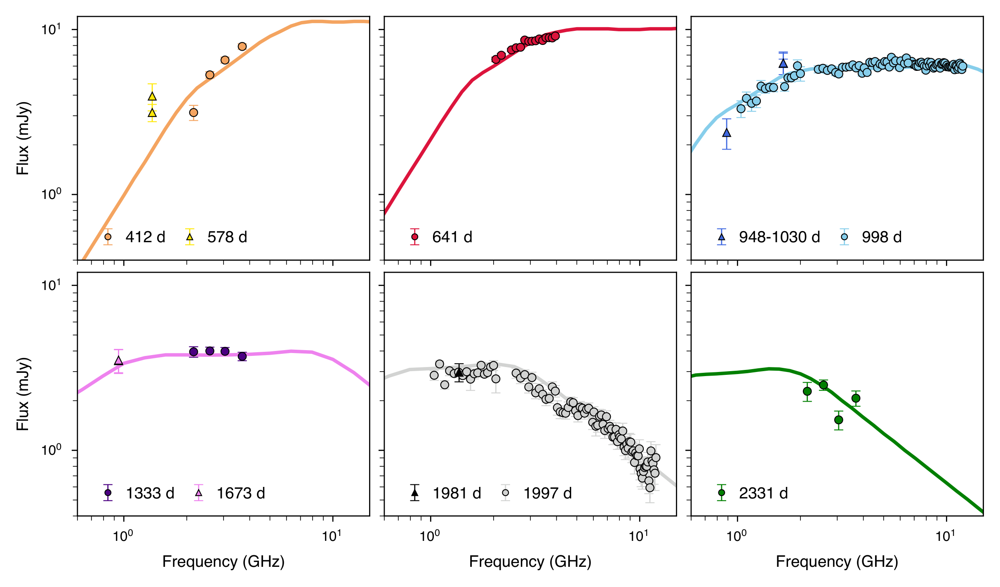
图注：\(\small\) \(\textbf{AT 2019ijn produced a relativistic jet viewed off-axis. a,}\) Observed VLA data shown, including VLASS in-band (2-4 GHz) spectra (412 days post-$t_0$, gold; 1333 d, indigo; 2331 d, green), VLA single-band (2-4 GHz) follow-up (641 d, red) and VLA multi-band (1-12 GHz) spectra (998 d, blue and 1997 d, gray). Spectra are divided into sub-bands for greater spectral resolution and off-axis jet models overlaid (see Methods section \(\ref{sec:radenergy}\) for derivation and section \(\ref{sec:figs}\) for specific model parameters shown). The jet is assumed to launch simultaneously with the optical transient. We stress that this is not the only possible set of parameters that can replicate the observed data (e.g., the jet may be launched at later times), nor is the underlying physics fully captured in this model (e.g., the actual jet spreading); rather, we demonstrate that an off-axis jet model can reproduce the observed radio spectra for all epochs with reasonable parameters.
对应解读：对应“射电谱能量分布图”“离轴喷流模型拟合图”以及模型拟合段落中关于多频同步辐射外激波和离轴喷流参数退化的讨论。
入选理由：该图直接展示多个历元的1–12 GHz/VLASS射电谱，并叠加离轴喷流模型，是支撑“晚期强射电来自离轴相对论喷流”的核心证据。它同时检验谱峰、低频自吸收、高频光薄段以及模型能否跨多个历元解释数据，科学价值最高。
来源与置信度：\(arxiv_source\)；high；\(arxiv_source\) / at2019ijn.tex:figure[2]
Fig01
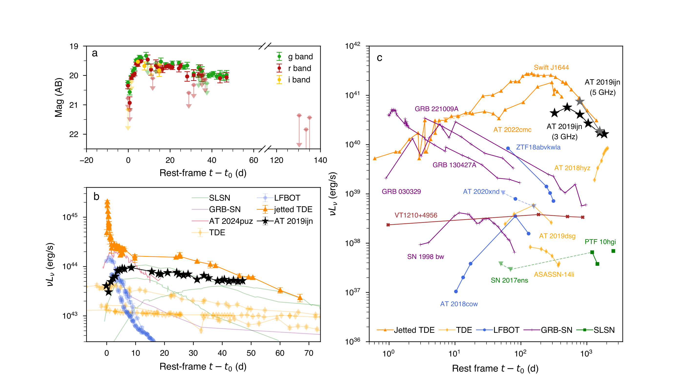
图注：\(\small\) \(\textbf{AT 2019ijn is a luminous optical and radio transient. a,}\) g-, r-, and i-band magnitudes obtained from ZTF forced photometry from May 11, 2019 to October 18, 2019. Data binned by day, upper limits marked with arrows. Optical emission for AT 2019ijn is detected in the ZTF photometry from May 31, 2019, to July 30, 2019. Break in time axis corresponds to when ZTF photometric data becomes unavailable, though extrapolating from the rate of decline, it is likely that the optical transient remains detectable beyond this end date. Data are corrected for Galactic extinction. \(\textbf{b,}\) comparison of g-band light curve to other luminous transients in the literature (see Section \ref{sec:figs}). Data are corrected for Galactic extinction with k-corrections applied. \(\textbf{c,}\) comparison of AT 2019ijn to radio light curves of other energetic transients at $< 10~\rm{GHz}$, adapted from \(\cite{ho+19}.\) 3 GHz (black) and 5 GHz (gray) measurements shown for AT 2019ijn for best comparison with jetted TDEs. Other light curves taken from the literature; see Section \(\ref{sec:figs}.\)
对应解读：对应“光学多色光变图”“射电多历元光变图”“能量—时间尺度或峰值光度—峰值时间比较图”，也对应逐图导读中的图2和图3核心内容。
入选理由：该图同时包含ZTF g/r/i光学光变、与其他光学暂现的g波段比较，以及AT 2019ijn与其他强射电暂现的射电光变比较。它能直接支撑快速蓝色光学耀发、晚期明亮射电对应体和类别区分这三条主线。
来源与置信度：\(arxiv_source\)；high；\(arxiv_source\) / at2019ijn.tex:figure[1]
Fig04
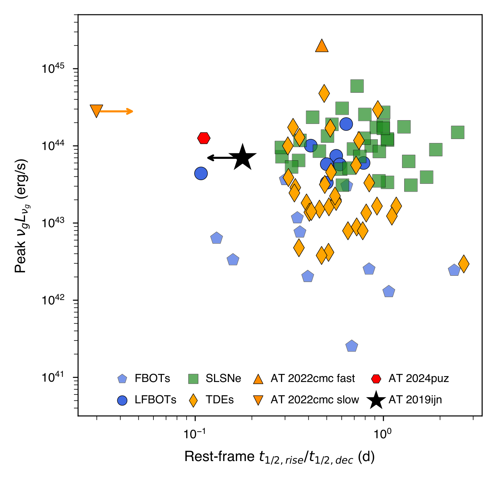
图注：\(\small\) \(\textbf{The optical flare of AT 2019ijn is unusually asymmetric compared to other luminous optical transients.}\) Comparison of peak g-band optical luminosity vs. ratio of rise time to decline time, defined as time from half-max to peak, for energetic extragalactic transients in the literature (see Methods section \ref{sec:figs}), partially adapted from \(\cite{ho+22b, andreoni+22}.\) AT 2019ijn (black star) shown with an arrow to account for lower limit on decline time. SLSNe shown in green, TDEs shown as orange diamonds, FBOTs/LFBOTs shown in blue. Jetted TDE AT 2022cmc shown as orange triangles, with upward triangle for the fast initial flare from the jet and a downward triangle for the slower, thermal emission \(\citep\)[see][]{andreoni+22, hammerstein+26}. Rise time for the thermal component is shown as a lower limit. AT 2024puz, an energetic, TDE- or FBOT-like transient hosted by a dwarf galaxy, shown in red. Luminosities are k-corrected according to Section \(\ref{sec:kcorr}.\)
对应解读：对应“能量—时间尺度或峰值光度—峰值时间比较图”和逐图导读中关于物理类别比较、光学峰值亮度与上升/下降时间尺度的讨论。
入选理由：该图把AT 2019ijn放在SLSNe、TDE、FBOT/LFBOT、jetted TDE等样本的峰值g波段光度与上升/下降时间比平面上，突出其光学光变的异常非对称性，有助于说明普通核心坍缩或常规FBOT解释不足。
来源与置信度：\(arxiv_source\)；high；\(arxiv_source\) / at2019ijn.tex:figure[4]
Fig03
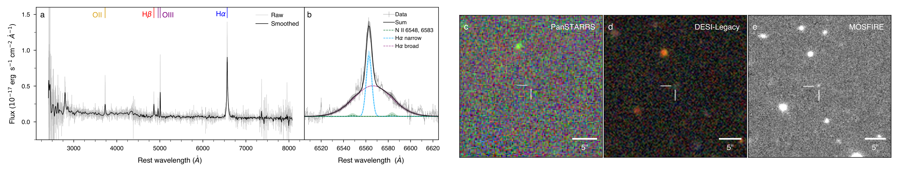
图注：\(\small\) \textbf{AT 2019ijn is located in a star-forming host galaxy at $z = 0.273$. a,} optical spectrum of host galaxy from $\sim 3000-8000 \mathring{A}$. The smoothed spectrum, produced by convolving the spectrum with a Gaussian kernel with a standard deviation of $5~\mathring{A}$, is overlaid on the raw spectrum for clarity of spectral lines. Visible lines are labeled, and are consistent with a star-forming galaxy at a redshift of $z = 0.273$. \(\textbf{b,}\) H$\alpha$ complex, including broad and narrow H$\alpha$ components and NII 6548, 6583 lines. The gaussian best-fit to each line and sum of individual line contributions are also plotted (see Methods). \(\textbf{c,}\) PanSTARRS image of the location of the radio transient. \(\textbf{d,}\) DESI-Legacy image of the location of the transient. The host galaxy is faintly visible in the image, unresolved. \(\textbf{e,}\) MOSFIRE image of the host galaxy.
对应解读：对应“宿主星系和定位图”以及详细解读中关于z=0.273恒星形成矮星系宿主、非背景AGN/无关源判断的讨论。
入选理由：该图给出宿主光谱、Hα复合线拟合以及多波段成像，能够支持宿主红移和恒星形成性质的判断。虽然候选说明中未显示射电等值线或精确误差圈，但它仍是确认环境和排除部分AGN/背景源解释的重要配图。
来源与置信度：\(arxiv_source\)；high；\(arxiv_source\) / at2019ijn.tex:figure[3]
强相关工作
这篇工作与喷流型 TDE 研究直接相关，尤其是 Swift J1644+57、Swift J2058+05、Swift J1112.2-8238 等高能触发事件。那些事件大多被解释为近轴喷流，因此高能辐射极亮；AT 2019ijn 的价值在于从射电端找到可能的离轴对应物。建议检索关键词包括 “jetted tidal disruption event radio afterglow”, “Swift J1644+57 off-axis jet”, “relativistic TDE rate”, “VLASS radio transient”。
它也与快速蓝光学暂现和引擎驱动超新星领域相连，例如 AT 2018cow、CSS161010 和 ZTF18abvkwla 等事件。这些源同样显示快光学演化和强射电，但其中心引擎、星周介质和喷流几何仍有争议。AT 2019ijn 若确认为黑洞吸积或 TDE，将提醒读者不要把所有 FBOT 自动归入核心坍缩通道。建议检索 “fast blue optical transient radio”, “engine-driven supernova relativistic outflow”, “AT2018cow radio X-ray”。
相反观点主要来自极端核心坍缩或致密星周相互作用模型：若一颗大质量恒星在爆炸前经历强烈质量损失，超新星激波也可能产生亮射电。本文的挑战在于，AT 2019ijn 所需的能量、速度、持续时间和光学行为是否超过这些模型的合理范围。读者应关注正文中对这些替代模型的排除是否定量，而非只凭类别标签。
同一事件 / 同类源线索：
相似工作：
基础理论 / 方法工作：
- https://ui.adsabs.harvard.edu/abs/1988Natur.333..523R/abstract
- https://ui.adsabs.harvard.edu/abs/1976PhFl...19.1130B/abstract
- https://ui.adsabs.harvard.edu/abs/1998ApJ...497L..17S/abstract
相反观点 / 张力线索：
（未提供）
2. Superdiffusion of cosmic rays in the vicinity of their accelerators and the resulting $γ$-ray emission
- 来源：arXiv / astro-ph.HE
- 链接：https://arxiv.org/abs/2607.11485v1
- 作者：Zhaodong Shi, Guangwei Wang, Rui-zhi Yang
- 评分：novelty 8/10，importance 8/10，relevance 10/10，final 9.70/10
- 推荐理由：直接讨论加速源附近宇宙线超扩散及其伽马射线形态，并指出现有和下一代IACT可区分正常扩散与超扩散；高度契合宇宙线传播、TeV伽马射线和源附近扩散研究。
中文题目：Superdiffusion of cosmic rays in the vicinity of their accelerators and the resulting $γ$-ray emission
做了什么：这篇论文研究宇宙线加速器附近的源区传播若由超扩散而非正常扩散控制，会如何改变宇宙线质子、电子的空间分布以及 100 pc 区域内的伽马射线发射。作者用超扩散参数 \(\alpha\) 扫描从明显非高斯传播到 \(\alpha=2\) 正常扩散的情形，并分别讨论瞬时注入和持续注入。核心结论是：瞬时注入后粒子分布在源附近可较平坦而远端尾部对 \(\alpha\) 敏感；稳态注入下质子径向轮廓趋于 \(r^{\alpha-3}\)，电子因冷却可偏离；这些差异会传递到 \(\pi^0\)、IC 和轫致辐射伽马射线的谱形与径向亮度中。论文最值得看的证据是粒子径向轮廓图、伽马射线分量能谱图和不同 \(E_γ\) 下的相对强度径向轮廓图。
为什么重要：这项工作重要，因为它把“源附近宇宙线传播异常”这一常被简化为扩散系数变小的问题，提升为传播核形状是否非高斯的问题。\(\alpha\) 的变化会在稳态质子轮廓 \(r^{\alpha-3}\)、瞬时注入外翼以及多能段伽马射线径向亮度中留下系统信号，这些信号比单纯总通量更接近下一代伽马射线仪器的优势观测量。论文还强调电子冷却会破坏质子式空间标度，因此有助于避免把强子和轻子伽马射线形态混为一谈。其重要性不在于已经拟合了某个特定源，而在于提出了可被真实数据模板拟合检验的一组清晰、可计算的形态预言。
理论 / 观测 / 仪器方法价值：本文的理论价值在于把源附近宇宙线传播从单一高斯扩散推广到可检验的超扩散参数化框架，并给出瞬时与稳态注入下的清晰标度预言。对观测而言，它指出总通量谱并非唯一诊断量，归一化径向形态、能量依赖外翼和质子/电子冷却差异可能更能区分输运模型。对仪器和数据分析而言，论文为 HAWC、LHAASO、H.E.S.S.、MAGIC、VERITAS、CTA 等观测延展伽马射线源时构造非高斯空间模板提供了物理动机。方法上，它也提醒读者在解释 TeV halo 或 SNR 周围弥散辐射时，不应只拟合有效扩散系数，还应检验传播核形状本身。
为什么应该关注：如果源附近扩散不是正常扩散，那么许多用 TeV halo 或 SNR 周围伽马射线反推扩散系数的结论都可能需要重新解释。本文关心的 \(\alpha\) 改变的是空间核和外翼形态，这正是当前高角分辨率伽马射线观测越来越能测量的量。对于读者来说，这篇文章提供了一套从粒子输运到伽马射线形态的连续模型，可帮助判断某个扩展源的轮廓究竟支持正常扩散、抑制扩散，还是更非局域的超扩散。即使不接受超扩散为唯一解释，文中的图表也能作为检查模型退化和设计形态拟合的参考。
展开详细解读：文章讲解、背景、理论、重点章节、图表与相关工作
文章详细讲解
本文的科学问题可以概括为：如果源附近宇宙线传播不是正常扩散，而是由超扩散控制，那么粒子空间分布和由其产生的伽马射线形态会出现哪些可观测差异？作者用 \(\alpha\) 参数化超扩散强度，并把 \(\alpha=2\) 作为正常扩散参照。摘要给出的核心解析/数值结果是，瞬时注入时源附近分布整体较平坦，但大半径尾部在 \(\alpha<2\) 时呈幂律、在 \(\alpha=2\) 时呈高斯；稳态注入时质子径向分布趋于 \(r^{\alpha-3}\)，而电子由于能量损失可显著偏离该标度。
方法上，论文将宇宙线质子和电子分别传播，再计算 100 pc 区域内的伽马射线发射。图注表明作者比较了瞬时注入 \(t=10^3\,\mathrm{yr}\) 与持续注入到 \(t=10^6\,\mathrm{yr}\) 的情形；示例参数包括 \(W_p=10^{50}\,\mathrm{erg}\) 或 \(\dot W_p=10^{37}\,\mathrm{erg\,s^{-1}}\)、\(s=2.2\)、\(K_{\rm ep}=0.001\)、\(\delta=0.5\)，并扫描 \(D_0=0.1,0.01,0.001\,\mathrm{pc^\alpha\,yr^{-1}}\) 以及多组 \(\alpha\)。这些参数组合不是对某个真实源的唯一拟合，而是为了展示形态诊断对输运模型的敏感性。
关键结果应通过三条证据链理解。第一，粒子径向轮廓图说明 \(\alpha\) 如何改变源附近宇宙线分布，这是辐射形态的物理来源；第二，伽马射线能谱图说明不同 \(D_0\)、年龄和注入方式会改变总通量及 \(\pi^0\)、IC、轫致辐射分量；第三，归一化伽马射线径向亮度图直接对应观测形态，尤其是不同 \(E_\gamma=10,100,1000,10000\,\mathrm{GeV}\) 下 \(\alpha\) 曲线是否可分离。若这些曲线在合理点扩散函数和背景误差下仍能分辨，才支持“现有和下一代 IACT 可区分超扩散”的结论。
局限性也很明确。论文从摘要和图注看主要是现象学预测，而非对特定望远镜数据的端到端似然拟合；因此读者需要自行核查正文是否卷积了真实仪器 PSF、能量分辨率、曝光不均匀性和背景模板。如果没有，这里的“可区分”应理解为理论形态差异达到潜在可观测水平，而不是已经给出某一仪器某一曝光时间下的显著性。下一步自然是把模型嵌入真实观测框架，对具体 TeV halo、SNR–molecular cloud 系统或年轻脉冲星周围弥散辐射进行二维模板拟合，并比较 \(\alpha\)、\(D_0\)、源年龄和背景模型的贝叶斯证据或似然比。
关键结果是怎么做出来的
第一项主结果是粒子分布对 \(\alpha\) 的强依赖。作者用瞬时注入和稳态注入两套样例建立证据链：Fig. 5 展示 \(t=10^3\,\mathrm{yr}\) 后不同能量的质子/电子径向轮廓，Fig. 8 展示持续注入到 \(10^6\,\mathrm{yr}\) 的轮廓。这里没有观测事件数或探测显著性的统计量，因为这是理论计算/模型预言；读者应把“样本”理解为参数网格，包括 \(\alpha=1\) 到 2、多个动能面板、质子与电子两类粒子、瞬时与稳态两类注入史。
第二项主结果是稳态质子轮廓趋于 \(r^{\alpha-3}\)。Fig. 8 的空心圆给出该标度参照，实线质子曲线应与其比较。这个结果的统计意义不是来自 \(p\)-value，而是来自分数阶扩散方程的标度解与数值曲线的一致性。需要核查正文中作者是否给出解析推导或格林函数积分；若只给出数值验证，也应检查标度成立的半径范围、边界条件和有限年龄 \(10^6\,\mathrm{yr}\) 是否足以达到稳态。
第三项主结果是电子分布可能偏离质子标度，特别在高能段。由于图注显示电子和质子以实线/虚线并列展示，比较 \(10^3\)–\(10^5\,\mathrm{GeV}\) 面板尤为重要。若虚线电子比实线质子更集中或斜率更陡，说明同步/IC 冷却时间已经与传播时间竞争。这一点直接影响伽马射线解释：IC 辐射的空间形态不一定等同于强子 \(\pi^0\) 辐射形态，因此用单一扩散模板拟合宽能段伽马射线可能产生偏差。
第四项主结果是总伽马射线通量和谱形随 \(D_0\)、\(\alpha\)、源年龄与注入史变化。Fig. 9 对瞬时注入在 \(t=10^3\,\mathrm{yr}\) 时扫描 \(D_0=0.1,0.01,0.001\)，并在每个 \(\alpha\) 面板分解 \(\pi^0\)、IC、轫致辐射；Fig. 10 固定 \(D_0\) 比较 \(10^3\) 到 \(10^6\,\mathrm{yr}\) 的演化；Fig. 12 则给出稳态注入版本。这里应做的模型比较不是简单问“哪条曲线最高”，而是问在同一能量范围内，总谱差异是否能被调整注入归一化、气体密度或距离吸收。如果能被吸收，那么总谱对 \(\alpha\) 的判别力有限。
第五项也是最贴近观测的结果是伽马射线径向形态可以区分超扩散和正常扩散。Fig. 11 给出不同 \(E_γ\) 下的相对强度轮廓，直接对应论文摘要中“通过 \(γ\)-ray morphology 区分 superdiffusion 和 normal diffusion”的结论。由于曲线是相对强度，能部分消除注入总能量、距离和目标密度归一化的不确定性；但形态仍会受 PSF、背景模板、气体三维分布和源本身延展性的系统误差影响。严格的置信度或显著性需要把这些理论模板卷积仪器响应后做似然比检验，摘要没有表明本文已完成这种端到端统计分析，因此应把结论理解为“形态差异具有可观测潜力”。
稳健性方面，论文已经通过多 \(\alpha\)、多 \(D_0\)、多能量、两种注入史和多辐射分量展示了一定参数扫描，这是强点。但还应核查正文是否改变环境气体密度、磁场、ISRF、电子质子比和注入谱指数；这些系统量若固定，模型预言对真实源的外推就有限。特别是气体分布不均匀会把强子伽马射线形态从“宇宙线分布”卷积成“宇宙线 \(×\) 靶物质分布”，可能模仿或掩盖 \(\alpha\) 的外翼差异。
展开背景、理论、公式、模型、章节和图表导读
背景知识
宇宙线在源附近如何传播，是把超新星遗迹、脉冲星风云、年轻星团或其他加速器与观测到的 GeV–TeV 伽马射线晕连接起来的关键问题。标准教材式处理通常把源外介质中的传播写成各向同性正常扩散，即均方位移满足 \(\langle r^2\rangle\propto t\)，空间分布在点源瞬时注入后近似为高斯核。这种图像在银河系大尺度宇宙线传播模型中非常有用，但在源附近几十到几百 pc 的区域可能过于理想化，因为磁湍流、场线随机游走、各向异性逃逸和非均匀扩散都会改变粒子云的形态。
本文研究对象不是某一个具名源，而是一类“宇宙线加速器附近 100 pc 区域”的理论与现象学模型。作者把源附近的宇宙线输运从正常扩散推广到超扩散，并用超扩散参数 \(\alpha\) 描述空间传播核的非高斯性；摘要和图注显示他们比较了 \(\alpha=1,1.2,1.4,1.6,1.8,2\) 等情形，其中 \(\alpha=2\) 对应正常扩散的高斯尾部极限，而 \(\alpha<2\) 产生更长的幂律尾。论文进一步把宇宙线质子和电子分布转化为由 \(\pi^0\) 衰变、逆康普顿散射和轫致辐射产生的伽马射线通量与径向亮度轮廓。
研究动机来自一个现实观测问题：源附近伽马射线延展辐射的角分布，究竟反映的是注入史、扩散系数、能损、气体分布，还是扩散类型本身？例如在 HAWC、LHAASO、H.E.S.S.、MAGIC、VERITAS、CTA 等高能或甚高能观测中，源周围的 TeV halo 或弥散增强往往被用来反推扩散系数是否被压低。但若输运核不是高斯，仅仅用“有效扩散系数变小”解释形态就可能误判物理机制。本文的价值正在于把 \(\alpha\) 作为可观测形态参数，讨论当前和下一代成像大气切伦科夫望远镜能否区分超扩散和正常扩散。
一个常见误区是把超扩散简单理解为“扩散更快”。在本文语境中，更重要的是传播核的形状：瞬时注入后，源附近径向分布可在相当范围内较平坦，而远端尾部对 \(\alpha\) 很敏感；稳态注入下，质子的径向标度趋于 \(r^{\alpha-3}\)，这不是把正常扩散的 \(r^{-1}\) 任意改斜率，而是来自分数阶扩散格林函数的稳态极限。另一个误区是忽略电子能损：电子的逆康普顿和同步辐射冷却会让电子分布偏离同能质子的简单空间标度，因此伽马射线形态的能量依赖不能只由输运解释，还必须同时检查辐射机制和冷却时间。
基础理论 / 方法脉络
最基本的物理图像是：加速器在某一时间或持续一段时间向周围介质注入宇宙线，随后粒子在磁化湍流中传播，并与气体和辐射场相互作用产生伽马射线。若传播是正常扩散，点源瞬时注入的解是高斯核，特征尺度 \(r_{\rm diff}\sim (D t)^{1/2}\)。若传播是超扩散，粒子位移分布不再由单一有限方差高斯过程控制，空间算符常写成分数阶拉普拉斯算符，特征尺度可写成 \(r_\alpha\sim (D_\alpha t)^{1/\alpha}\)，并在大半径出现非高斯尾部。
本文的关键模型量包括超扩散参数 \(\alpha\)、扩散归一化 \(D_0\)、能量依赖指数 \(\delta\)、注入谱指数 \(s\)、总注入能量或功率、电子质子比 \(K_{\rm ep}\)，以及环境气体密度、磁场和星际辐射场。图注显示作者采用 \(D(E)=D_0(E/E_0)^\delta\) 类似的能量依赖，并在示例中取 \(\delta=0.5\)、\(s=2.2\)、\(K_{\rm ep}=0.001\)。瞬时注入对应年轻或一次性逃逸情形，稳态注入对应持续供能源；两种注入史在粒子分布和伽马射线谱形上具有不同可观测后果。
观测量层面，论文不只计算总谱能量分布，还强调径向形态。对于距离 \(d=1\,\mathrm{kpc}\)、发射体积尺度 \(R=100\,\mathrm{pc}\) 的示例，100 pc 对应约数度量级角尺度，正好落在广角 TeV 阵列和成像切伦科夫望远镜形态分析的关注范围。伽马射线通量来自三类过程：宇宙线质子与气体碰撞产生 \(\pi^0\) 后衰变成伽马射线；高能电子对星际辐射场做逆康普顿散射；电子在气体库仑场中产生轫致辐射。不同能量段、不同环境下三者权重不同，因此必须区分强子主导与轻子主导。
读这篇论文时应特别注意参数退化。更小的 \(D_0\)、更小的源年龄、更陡的注入谱、更高的气体密度、不同的辐射场能量密度，均可能改变伽马射线强度和角分布；其中某些效应会部分模拟 \(α\) 的变化。作者提出通过形态区分超扩散与正常扩散，因此真正关键的不是某条总通量曲线是否较高，而是归一化后的径向轮廓、能量依赖轮廓、质子与电子冷却差异，以及在不同 \(D_0\) 和注入史下这些特征是否稳定。
公式与推导
从粒子数守恒出发，宇宙线相空间密度或微分数密度 \(N(E,\mathbf r,t)\) 的输运方程可写成
其中 \(D\) 是扩散系数，\(b(E)=-dE/dt\) 是连续能损率，\(Q\) 是源项。正常扩散对应二阶拉普拉斯算符和有限方差随机游走。
超扩散可用分数阶空间算符替代普通扩散项，形式上写为
这里 \((-\Delta)^{\alpha/2}\) 的傅里叶表示为 \(|\mathbf k|^\alpha\)，即 \(\mathcal F[(-\Delta)^{\alpha/2}N]=|\mathbf k|^\alpha\tilde N\)。\(\alpha=2\) 时退化为正常扩散。
若暂时忽略能损并考虑点源瞬时注入 \(Q=N_0(E)\delta^3(\mathbf r)\delta(t)\)，傅里叶空间解为
反变换得到稳定分布核
其中 \(L_\alpha\) 是三维各向同性 Lévy 稳定核，特征传播尺度为 \(r_\alpha=[D_\alpha t]^{1/\alpha}\)。
在 \(\alpha=2\) 的极限，稳定核变为高斯核：
这正是论文用来对照正常扩散的基准；其外翼随 \(r^2\) 指数截断，而不是幂律下降。
对 \(\alpha<2\) 的超扩散，远离源处的核具有重尾，量级上可写为
这解释了摘要中“瞬时注入大距离处出现 power-law tail”的说法。具体归一化常数取决于分数阶核定义，阅读原文时应以作者采用的格林函数为准。
若源从 \(t=0\) 到当前持续注入，忽略能损时有
在达到近似稳态并处于合适半径范围时，空间标度趋向
因此 \(\alpha=2\) 给出熟悉的 \(r^{-1}\)，而 \(\alpha<2\) 给出更陡的 \(r^{\alpha-3}\) 质子剖面。
能量依赖通常写为
其中图注显示示例取 \(s=2.2\)、\(\delta=0.5\)。电子源项可用 \(Q_e(E)=K_{\rm ep}Q_p(E)\) 近似，但电子还要经历同步辐射和 IC 冷却。
高能电子常用连续能损近似
从而冷却时间
可与传播时间 \(t_{\rm diff}\sim r^\alpha/D_\alpha(E)\) 比较。若 \(t_{\rm cool} 伽马射线可观测通量由体发射率积分得到，概念上为 其中 \(d\) 是源距离，本文示例用 \(d=1\,\mathrm{kpc}\)、\(V\) 对应约 \(R=100\,\mathrm{pc}\) 区域。径向形态则对应投影积分 观测比较时还需与仪器点扩散函数卷积：\(I_{\rm obs}=I_\gamma\ast {\rm PSF}+B\)，这一步决定理论形态差异能否在实际数据中被分辨。 本文从现有摘要和图注看更像参数化理论预言，而不是对真实伽马射线数据的拟合。可视为被“拟合”或扫描的核心量包括 \(\alpha\)、\(D_0\)、\(\delta\)、注入谱指数 \(s\)、注入能量/功率、源年龄、\(K_{\rm ep}\)、气体密度、磁场和 ISRF。图中明确扫描的是 \(\alpha\) 与 \(D_0\)，并比较瞬时/稳态注入和多个年龄；其他参数多作为基准值固定。 若要把本文模型用于真实数据，似然函数应同时包含能谱和空间像素。对每个能量 bin 和空间 bin，可用泊松似然 \(\ln\mathcal L=\sum_i[n_i\ln\mu_i-\mu_i-\ln(n_i!)]\)，其中 \(\mu_i\) 是超扩散模板与仪器响应卷积后加背景的预测计数。模型比较应使用 \(TS=2(\ln\mathcal L_{\rm superdiff}-\ln\mathcal L_{\rm normal})\) 或贝叶斯证据，而不是只比较未卷积理论曲线的视觉差异。 残差诊断应分三层做。第一是径向残差：在不同 \(E_\gamma\) 下检查观测亮度减模型亮度是否在内区或外翼呈系统性正负偏差；第二是谱残差：检查 \(\pi^0\)、IC、轫致辐射分量叠加后是否在某些能段持续偏离；第三是二维形态残差：若真实气体云分布不均匀，各向同性径向模型会在云位置留下结构化残差，这不能误判为 \(\alpha\) 错误。 参数退化是实际拟合的主要难点。\(D_0\) 与年龄共同决定传播尺度 \([D_\alpha t]^{1/\alpha}\)；注入能量与气体密度共同决定强子通量归一化；\(K_{\rm ep}\)、磁场和 ISRF 共同决定轻子分量；\(\alpha\) 与源延展大小、PSF 和背景平滑尺度都可能在形态上退化。因此，单一能段总通量几乎不可能稳健约束 \(\alpha\)，需要多能段径向轮廓和分量分解共同限制。 系统误差方面，最应检查仪器 PSF、能量迁移、背景估计、源掩膜、气体柱密度转换因子、三维距离不确定性和辐射场模型。对于 IACT，有限视场和背景扣除可能削弱大角尺度外翼；对于广角阵列，角分辨率可能抹平内区差异。论文若未做这些仪器级处理，其图 11 的曲线分离应看作“理想形态差异”，而不是最终观测显著性。 模型可能失败的情形也应明确：源附近扩散高度各向异性、宇宙线沿磁场丝状逃逸、气体分布主导形态、存在多个未分辨源、注入史不是简单瞬时或稳态、或扩散系数随半径变化。遇到这些情况，\(\alpha\) 可能只是有效参数，而非唯一物理解释。更稳健的做法是把超扩散模板与正常扩散、各向异性扩散、两区扩散和对流/再加速模型并列比较。 引言部分应读出两个层次的问题：一是源附近宇宙线扩散可能不同于银河平均扩散；二是为什么普通高斯扩散不足以解释某些延展伽马射线形态。重点记录作者引用的超扩散物理动机，例如磁湍流、Lévy flight 或非局域传播核，而不是只记“\(\alpha\) 是一个自由参数”。 输运模型/方法部分是全篇核心。应逐式确认分数阶扩散方程、\(D_0\) 单位、\(D(E)\) 的能量依赖、\(\alpha=2\) 是否严格还原正常扩散、边界条件和数值积分方式。尤其要核查 \(D_0\) 在不同 \(\alpha\) 下单位为 \(\mathrm{pc^\alpha/yr}\)，因此不同 \(\alpha\) 的 \(D_0\) 数值不能像普通扩散系数那样直接物理比较。 注入与冷却设置部分决定结果能否映射到真实源。阅读时应记录瞬时注入的 \(W_p=10^{50}\,\mathrm{erg}\)、稳态注入的 \(\dot W_p=10^{37}\,\mathrm{erg/s}\)、\(K_{\rm ep}=0.001\)、\(s=2.2\)、\(\delta=0.5\)，并找出电子冷却时间图或表。若正文只固定一组环境参数，应在笔记中标明该结论的适用范围。 粒子分布结果部分应围绕 Fig. 5 和 Fig. 8 阅读。不要把图当作展示图，而要检查它们是否支持摘要中的两个标度命题：瞬时注入的平坦内区加远端尾部，以及稳态质子的 \(r^{\alpha-3}\)。对电子曲线则应问：偏离从哪个能量开始出现，是否与冷却时间估算一致？ 伽马射线发射部分应把 Fig. 9、Fig. 10、Fig. 11、Fig. 12 串起来读。先看总谱和分量分解，确认强子/轻子主导区间；再看径向形态，确认哪些能量最适合区分 \(\alpha\)。如果正文讨论了 IACT 或下一代望远镜可分辨性，应检查是否使用了实际角分辨率、灵敏度和曝光假设。 讨论与结论部分应重点找作者如何限定结论。理想的讨论应承认 \(D_0\)、年龄、注入史、环境场和背景模型的退化；若这些退化未充分量化，读者在引用本文时应避免说“观测到某种轮廓即可证明超扩散”，而应说“该轮廓可作为检验超扩散模型的诊断量”。 粒子径向轮廓图，特别是 Fig. 5 和 Fig. 8：检查横轴是否为到源距离 \(r\)，纵轴是否已在 \(r=0.01\,\mathrm{pc}\) 归一化；看不同颜色的 \(\alpha\) 曲线在源附近是否近似平台、远端是否出现幂律或高斯式快速下降；同时比较质子实线和电子虚线在高能段的分离。 稳态标度检验图：Fig. 8 中空心圆标示 \(r^{\alpha-3}\) 参考关系，应重点看质子曲线在多大半径范围内贴合该标度，以及电子在哪些能量段因冷却偏离。不要只看曲线斜率的视觉印象，应在 log-log 坐标上估计局部斜率。 瞬时注入伽马射线能谱图，尤其 Fig. 9 和 Fig. 10：检查实线总通量与虚线/点划线/点线分量的相对贡献，确认 \(\pi^0\)、IC、轫致辐射在不同 \(E_γ\) 的主导区间；看改变 \(D_0\)、\(\alpha\) 或年龄时，是归一化变化为主还是谱形也发生明显变化。 稳态注入伽马射线能谱图 Fig. 12：与 Fig. 9 对照，判断持续源和爆发源的可观测区别。重点看同一 \(\alpha\) 下不同 \(D_0\) 的通量差异，以及同一 \(D_0\) 下改变 \(\alpha\) 是否改变谱峰、谱斜率或各辐射分量占比。 伽马射线相对强度径向轮廓 Fig. 11：这是形态判别核心图。逐能量面板检查 \(E_γ=10,100,1000,10000\,\mathrm{GeV}\) 下不同 \(\alpha\) 曲线的分离程度、交叉点和外翼行为；同时思考真实仪器 PSF 卷积后哪些差异会被抹平。 冷却时间或环境参数图：图注多次引用 Fig. \(\ref{fig:cooltime}\) 中的气体密度、磁场和 ISRF 设置，读者应找到对应图或段落，核查电子冷却时间与传播时间的相对大小。若高能电子冷却时间短于扩散到 100 pc 的时间，轻子伽马射线形态就不能简单追踪输运核。 参数扫描和归一化选择：凡是曲线被归一化的图，只能用于比较形态，不能直接比较总能量预算；凡是展示绝对通量的图，则应检查距离 \(d=1\,\mathrm{kpc}\)、区域半径 \(R=100\,\mathrm{pc}\)、气体密度和注入能量是否与目标源相容。 图 1/早期模型定义图应先寻找作者如何定义超扩散核、\(\alpha\)、\(D_0\) 和能量依赖。若图中展示不同 \(\alpha\) 的传播核，横轴通常是半径或无量纲半径，纵轴是归一化粒子密度；应看 \(\alpha=2\) 曲线是否呈高斯外翼，\(\alpha<2\) 是否有更长尾部。陷阱是把峰值高度差误读为总粒子数变化；归一化核的积分应保持粒子数守恒。 图 5 是瞬时注入后 \(t=10^3\,\mathrm{yr}\) 的 CR 质子和电子径向轮廓。每个面板对应不同动能，从 \(1\) GeV 到 \(10^5\) GeV；实线为质子、虚线为电子，颜色为 \(\alpha=1\) 到 2。横向读同一能量面板，可以看 \(\alpha\) 如何改变外翼；纵向或跨面板读，可以看能量依赖扩散和电子冷却是否使高能电子更快衰减。该图的纵轴已在 \(r=0.01\,\mathrm{pc}\) 归一化，所以不能用它判断绝对通量，只能判断形态。 图 8 是稳态注入到 \(t=10^6\,\mathrm{yr}\) 后的对应径向轮廓，并用空心圆标出 \(r^{\alpha-3}\) 参考标度。读图时应在 log-log 坐标中比较实线质子与空心圆的平行程度：若相符，说明分数阶扩散稳态标度在该参数范围内成立。虚线电子若在高能段偏离，说明能损项已经破坏“纯传播标度”。陷阱是只在单一半径处比较曲线高低；真正的证据是斜率随半径和能量的系统变化。 图 9 展示瞬时注入 \(t=10^3\,\mathrm{yr}\) 时的伽马射线通量，面板按 \(\alpha\) 排列，颜色表示 \(D_0=0.1,0.01,0.001\,\mathrm{pc^\alpha\,yr^{-1}}\)，线型分解 \(\pi^0\)、IC、轫致辐射和总通量。横轴应是 \(E_\gamma\)，纵轴是能量通量或微分通量；应看改变 \(D_0\) 是否主要改变 100 pc 区域内保留的粒子数，以及不同 \(\alpha\) 下谱形是否出现可区分差异。陷阱是把某个分量线的升降直接解释为注入谱变化，实际上它也受到空间逃逸和目标场分布影响。 图 10 固定 \(D_0=0.001\) 并比较瞬时注入后 \(10^3,10^4,10^5,10^6\,\mathrm{yr}\) 的伽马射线演化。读法是沿时间颜色看谱随年龄软化、变暗或分量切换的趋势；这有助于判断源年龄与 \(\alpha\) 是否退化。若某个 \(\alpha\) 的年轻源谱与另一个 \(\alpha\) 的老年源谱相似，则仅靠总谱不足以判别输运类型，需要转向径向形态。 图 11 是论文最核心的形态预言图：它给出 \(E_γ=10,100,1000,10000\,\mathrm{GeV}\) 下相对伽马射线强度径向轮廓，不同颜色对应 \(\alpha\)。读者应检查各能量面板中 \(\alpha\) 曲线在内区和外翼的分离程度，尤其是正常扩散 \(\alpha=2\) 与小 \(\alpha\) 模型在几十 pc 到 100 pc 的差别。由于是相对强度，系统误差主要来自 PSF、背景扣除和真实气体分布，而不是总能量预算。 图 12 是稳态注入的伽马射线通量图，可与 Fig. 9 成对阅读。重点是持续注入下 \(\pi^0\)、IC、轫致辐射的相对权重是否比瞬时注入更稳定，以及 \(D_0\) 和 \(\alpha\) 对总谱的影响是否仍然明显。若稳态情况下总谱差异变小但形态差异仍保留，说明形态观测比谱观测更接近本文主张的判别量。模型拟合 / 应用方法
重点章节 / 结果段落怎么读
建议重点查看的图表
关键图表逐图导读
论文原图 / 可嵌入图片
Fig11
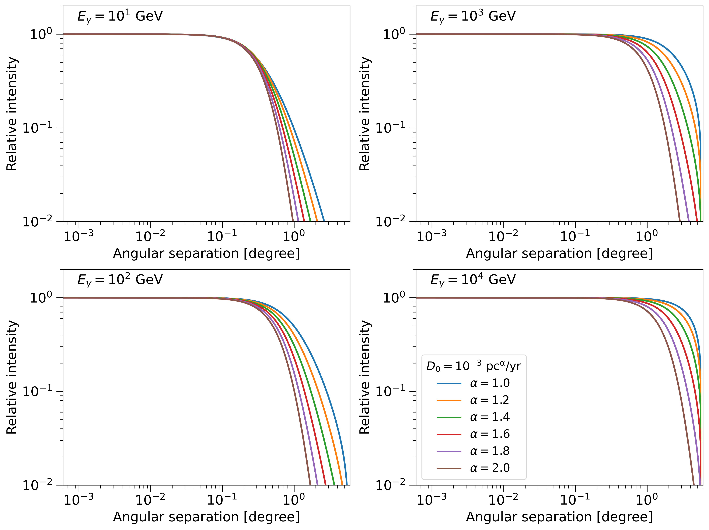
图注：The relative intensity radial profiles of $\gamma$ rays with $E_\gamma=$ 10 (top left panel), 100 (bottom left panel), 1000 (top right panel), and 10000 (bottom right panel) GeV at $t=10^3$ years after the impulsive injection by an accelerator, when $D_0=0.001~\mathrm{pc^\alpha/yr}$ with $\alpha=$ 1 (blue lines), 1.2 (orange lines), 1.4 (green lines), 1.6 (red lines), 1.8 (purple lines), and 2 (brown lines). The distance to the accelerator is $d=$ 1 kpc, and the dimension of $\gamma$-ray emission volume is $R=$ 100 pc. The total kinetic energy injected into CR protons is $W_\mathrm{p}=10^{50}~\mathrm{erg}$, the electron-to-proton ratio $K_\mathrm{ep} = 0.001$, the injection spectral index $s=2.2$ for both CR protons and electrons, and the diffusion exponent $\delta=0.5$. The ambient gas density, magnetic field strength, and ISRFs surrounding the accelerator are the same as those specified in discussing Fig. \(\ref{fig:cooltime}.\)
对应解读：对应摘要中“通过γ射线形态区分超扩散与正常扩散”的核心结论，也是建议重点查看的模型比较/形态诊断图。
入选理由：该图直接给出不同超扩散参数α下、不同γ射线能量的相对强度径向轮廓，是论文最关键的可观测预言。相比仅展示粒子谱或总通量的图，它最能支撑作者关于现有和下一代切伦科夫望远镜可用γ射线形态识别超扩散的主张。
来源与置信度：\(arxiv_source\)；high；\(arxiv_source\) / main.tex:figure[11]
Fig08
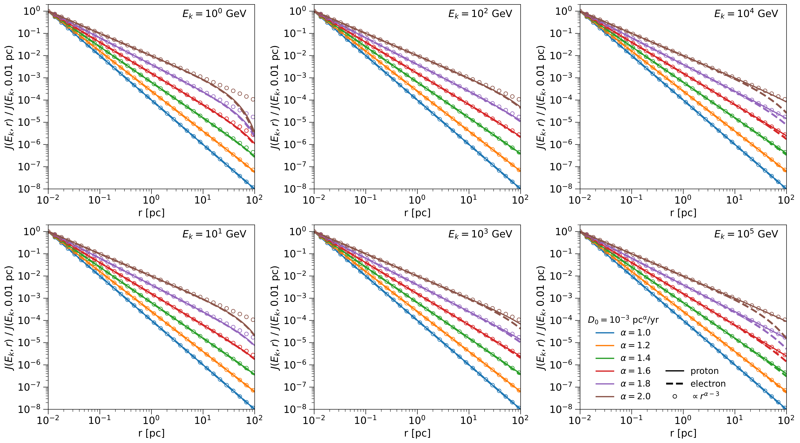
图注：The radial profiles, which are normalized at $r=0.01$ pc, of CR protons (solid lines) and electrons (dashed lines) with $E_\mathrm{k}=1$ (top left panel), 10 (bottom left panel), $10^2$ (top middle panel), $10^3$ (bottom middle panel), $10^4$ (top right panel), and $10^5$ (bottom right panel) GeV at $t=10^6$ years after the stationary injection starting from $t=0$ by an accelerator, when $D_0=0.001~\mathrm{pc^\alpha/yr}$ with $\alpha=$ 1 (blue lines), 1.2 (orange lines), 1.4 (green lines), 1.6 (red lines), 1.8 (purple lines), and 2 (brown lines). In each subplot, the open circles show the radial profiles proportional to $r^{\alpha - 3}$. The total kinetic power injected into CR protons is $\dot{W}_\mathrm{p}=10^{37}~\mathrm{erg/s}$, the electron-to-proton ratio $K_\mathrm{ep}=0.001$, the injection spectral index $s=2.2$, and the diffusion exponent $\delta=0.5$. The ambient gas density, magnetic field strength, and ISRFs surrounding the accelerator are the same as those specified in discussing Fig. \(\ref{fig:cooltime}.\)
对应解读：对应摘要中“稳态注入时CR质子径向轮廓趋于r^{α-3}，电子因能量损失可偏离”的模型诊断段落。
入选理由：该图同时展示稳态注入下质子和电子在多个能量、多个α取值的径向分布，并用空心圆标出r^{α-3}参考关系，直接检验论文最重要的解析标度结论之一。
来源与置信度：\(arxiv_source\)；high；\(arxiv_source\) / main.tex:figure[8]
Fig05
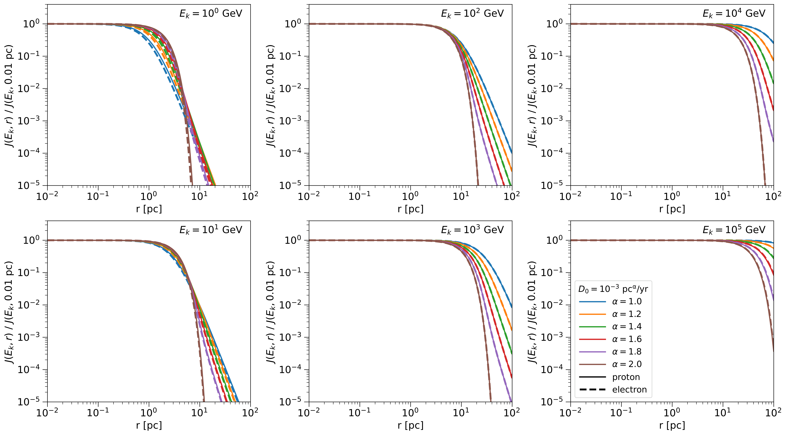
图注：The radial profiles, which are normalized at $r=0.01$ pc, of CR protons (solid lines) and electrons (dashed lines) with $E_\mathrm{k}=1$ (top left panel), 10 (bottom left panel), $10^2$ (top middle panel), $10^3$ (bottom middle panel), $10^4$ (top right panel), and $10^5$ (bottom right panel) GeV at $t=10^3$ years after the impulsive injection by an accelerator, when $D_0=0.001~\mathrm{pc^\alpha/yr}$ with $\alpha=$ 1 (blue lines), 1.2 (orange lines), 1.4 (green lines), 1.6 (red lines), 1.8 (purple lines), and 2 (brown lines). The total kinetic energy injected into CR protons is $W_\mathrm{p}=10^{50}~\mathrm{erg}$, the electron-to-proton ratio $K_\mathrm{ep}=0.001$, the injection spectral index $s=2.2$, and the diffusion exponent $\delta=0.5$. The ambient gas density, magnetic field strength, and ISRFs surrounding the accelerator are the same as those specified in discussing Fig. \(\ref{fig:cooltime}.\)
对应解读：对应摘要中“瞬时注入时CR分布近似常数径向轮廓，并在大半径出现α相关尾部”的粒子分布导读。
入选理由：该图给出瞬时注入后不同能量、不同α下质子和电子的归一化径向轮廓，能直观看出超扩散参数如何改变源附近CR空间分布，是理解后续γ射线形态的物理基础。
来源与置信度：\(arxiv_source\)；high；\(arxiv_source\) / main.tex:figure[5]
Fig09
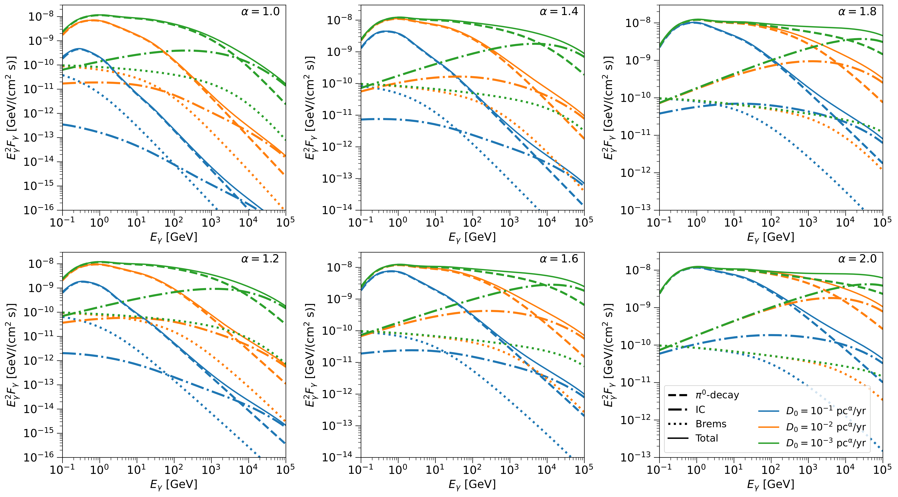
图注：The $\gamma$-ray fluxes at $t=10^3$ years after the impulsive injection by an accelerator, when $D_0=$ 0.1 (blue lines), 0.01 (orange lines), and 0.001 (green lines) $\mathrm{pc^\alpha/yr}$ with $\alpha=$ 1, 1.2, 1.4, 1.6, 1.8, and 2 in each subplot from top to bottom and from left to right. The distance to the accelerator is $d=$ 1 kpc, and the dimension of $\gamma$-ray emission volume is $R=$ 100 pc. The total kinetic energy injected into CR protons is $W_\mathrm{p}=10^{50}~\mathrm{erg}$, the electron-to-proton ratio $K_\mathrm{ep} = 0.001$, the injection spectral index $s=2.2$ for both CR protons and electrons, and the diffusion exponent $\delta=0.5$. The ambient gas density, magnetic field strength, and ISRFs surrounding the accelerator are the same as those specified in discussing Fig. \(\ref{fig:cooltime}.\) In each subplot, the dashed, dotdashed, and dotted lines show the fluxes of $\gamma$ rays generated from the decay of $\pi^0$-mesons, IC, and bremsstrahlung, respectively, while the solid lines show the total fluxes.
对应解读：对应γ射线发射计算部分：瞬时注入、不同D0和α下100 pc区域内的γ射线能谱及辐射成分分解。
入选理由：该图把CR输运模型转化为可观测γ射线通量，并区分π0衰变、IC和轫致辐射贡献；对于判断超扩散参数和扩散系数如何影响整体γ射线谱最有价值。
来源与置信度：\(arxiv_source\)；high；\(arxiv_source\) / main.tex:figure[9]
Fig12
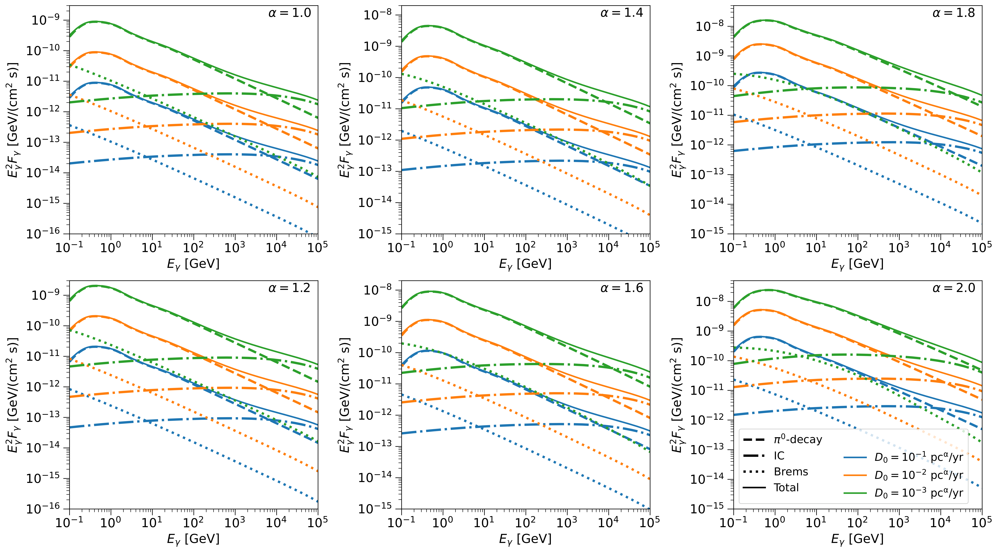
图注：The $\gamma$-ray fluxes at $t=10^6$ years after the stationary injection starting from $t=0$ by an accelerator, when $D_0=$ 0.1 (blue lines), 0.01 (orange lines), and 0.001 (green lines) $\mathrm{pc^\alpha/yr}$ with $\alpha=$ 1, 1.2, 1.4, 1.6, 1.8, and 2 in each subplot from top to bottom and from left to right. The distance to the accelerator is $d=$ 1 kpc, and the dimension of $\gamma$-ray emission volume is $R=$ 100 pc. The total kinetic power injected into CR protons is $\dot{W}_\mathrm{p}=10^{37}~\mathrm{erg/s}$, the electron-to-proton ratio $K_\mathrm{ep} = 0.001$, the injection spectral index $s=2.2$ for both CR protons and electrons, and the diffusion exponent $\delta=0.5$. The ambient gas density, magnetic field strength, and ISRFs surrounding the accelerator are the same as those specified in discussing Fig. \(\ref{fig:cooltime}.\) In each subplots, the dashed, dotdashed, and dotted lines show the fluxes of $\gamma$ rays generated from the decay of $\pi^0$-mesons, IC, and bremsstrahlung, respectively, while the solid lines show the total fluxes.
对应解读：对应γ射线发射计算部分：稳态注入情形下不同D0和α的γ射线总通量与成分分解。
入选理由：该图是Fig09的稳态注入对应版本，可用于比较瞬时源和持续源在超扩散输运下的γ射线谱差异，补足论文对两类注入历史的核心讨论。
来源与置信度：\(arxiv_source\)；high；\(arxiv_source\) / main.tex:figure[12]
Fig10
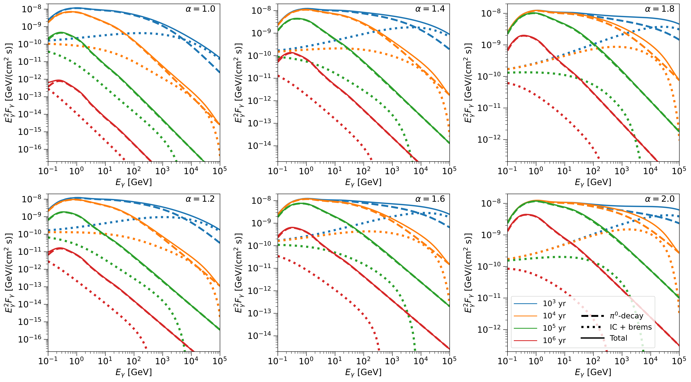
图注：The $\gamma$-ray fluxes at $t=10^3$ (blue lines), $10^4$ (orange lines), $10^5$ (green lines), and $10^6$ (red lines) years after the impulsive injection by an accelerator, when $D_0=0.001~\mathrm{pc^\alpha/pc}$ with $\alpha=$ 1, 1.2, 1.4, 1.6, 1.8, and 2 in each subplot from top to bottom and from left to right. The distance to the accelerator is $d=$ 1 kpc, and the dimension of $\gamma$-ray emission volume is $R=$ 100 pc. The total kinetic energy injected into CR protons is $W_\mathrm{p}=10^{50}~\mathrm{erg}$, the electron-to-proton ratio $K_\mathrm{ep} = 0.001$, the injection spectral index $s=2.2$ for both CR protons and electrons, and the diffusion exponent $\delta=0.5$. The ambient gas density, magnetic field strength, and ISRFs surrounding the accelerator are the same as those specified in discussing Fig. \(\ref{fig:cooltime}.\) In each subplot, the dashed and dotted lines show the fluxes of $\pi^0$-decay and IC plus bremsstrahlung $\gamma$ rays, respectively, while the solid lines show the total fluxes.
对应解读：对应瞬时注入γ射线演化部分：固定D0时不同年龄和α下的γ射线能谱变化。
入选理由：该图展示源年龄从10^3到10^6年变化时γ射线谱如何随α演化，并分离强子π0分量与轻子IC/轫致辐射合并分量，有助于理解时间演化对观测判别的影响。
来源与置信度：\(arxiv_source\)；high；\(arxiv_source\) / main.tex:figure[10]
强相关工作
本文不是具名事件或单一源论文，因此不存在“同一事件”后续观测链；相关源语境应按同类对象和基础方法查找。最直接的同类观测背景是 TeV halo 和源附近扩散研究，例如 Geminga/Monogem 周围 HAWC 观测、LHAASO 对扩展 TeV 源的研究、以及 H.E.S.S./MAGIC/VERITAS 对超新星遗迹和脉冲星风云周围弥散辐射的形态分析。可从 HAWC 官方论文页或 arXiv 检索关键词 “Geminga TeV halo diffusion HAWC”，公共入口包括 https://arxiv.org/abs/1711.06223 和 HAWC collaboration 页面 https://www.hawc-observatory.org/ 。
基础理论方面，应检索“cosmic ray anomalous diffusion”, “fractional diffusion cosmic rays”, “Levy flights cosmic ray propagation”, “superdiffusion cosmic rays near sources”等关键词。正常扩散背景可对照 GALPROP/DRAGON/PICARD 等银河宇宙线传播框架，公共资源包括 GALPROP 项目页 https://galprop.stanford.edu/ 和 DRAGON 项目相关论文检索页 https://ui.adsabs.harvard.edu/ 。分数阶扩散的数学基础则可从 fractional Laplacian、stable distribution、anomalous transport 文献进入，再回到天体物理中的应用。
可能存在张力的工作包括两区扩散模型、各向异性扩散模型、源附近抑制扩散模型以及自激发湍流模型。这些模型也能产生不同于银河平均扩散的源附近伽马射线形态，因此与本文的超扩散解释存在模型竞争关系。建议检索 “two-zone diffusion TeV halo”, “anisotropic diffusion cosmic rays gamma-ray morphology”, “self-generated turbulence cosmic ray escape SNR” 等关键词，并比较它们是否也能给出类似的径向外翼或能量依赖。
若要寻找原型或历史类比，可查超新星遗迹与分子云相互作用的伽马射线研究，因为从源逃逸的宇宙线照亮附近云团时，形态和谱形对扩散模型十分敏感。检索路径包括 NASA ADS 的对象类关键词 “SNR molecular cloud cosmic-ray diffusion gamma rays” 和 “escaped cosmic rays gamma-ray emission”。这些不是同一源工作，但可作为判断本文模型可观测性的历史参照。
同一事件 / 同类源线索：
（未提供）
相似工作：
（未提供）
基础理论 / 方法工作：
（未提供）
相反观点 / 张力线索：
（未提供）
3. Search for GeV gamma-ray emission from PSZ G181.06+48.47 galaxy cluster using Fermi-LAT data
- 来源：arXiv / astro-ph.HE
- 链接：https://arxiv.org/abs/2607.11316v1
- 作者：Anuja Deshpande, Siddhant Manna, Shantanu Desai
- 评分：novelty 8/10，importance 8/10，relevance 10/10，final 9.70/10
- 推荐理由：使用17.9年Fermi-LAT数据报告星系团PSZ2 G181.06+48.47的GeV扩展伽马射线候选，TS和延展显著性较高；虽谱主要来自低能段且需警惕弥散背景系统学，但伽马射线星系团/宇宙线内容高度相关，值得读。
中文题目：用费米 LAT 数据搜索星系团 PSZ G181.06+48.47 的 GeV 伽马射线辐射
做了什么：这篇文章用 17.9 年的 Fermi-LAT 数据，在 \(1\)--\(300\,\mathrm{GeV}\) 搜索 Planck 星系团 PSZ2 G181.06+48.47 的伽马射线辐射。作者用 16 年 LAT 源表建立背景模型，做分箱似然分析；若把信号当作点源，得到 \(\mathrm{TS}=19.0\)，约 \(4.3\sigma\)，但中心仍有明显残差。改用径向高斯扩展模板后，拟合显著改善，最佳宽度约 \(\sigma=0.4^\circ\)，扩展显著性 \(\mathrm{TS}_{\rm ext}=36.8\)，总探测 \(\mathrm{TS}=55.0\)，约 \(7.4\sigma\)。谱能量分布显示信号主要集中在最低能段 \(1.0\)--\(3.13\,\mathrm{GeV}\)，更高能段多为上限，说明它是一个软谱、空间扩展的候选星系团伽马源，而不是一个简单的未分辨点源。
为什么重要：星系团内弥散伽马射线是检验宇宙线质子、湍流再加速、并合激波、暗物质次级辐射和星系团磁场模型的关键观测量，但长期以来 Fermi-LAT 对星系团的结果多是非探测或边缘探测。PSZ2 G181.06+48.47 若真有 \(\sim0.4^\circ\) 量级的扩展 GeV 辐射，将是少数能把空间形态与谱形一起用于物理解释的案例。
理论 / 观测 / 仪器方法价值：方法上的价值在于，它展示了在长时间 LAT 曝光、更新源表和扩展模板比较下，点源假设可能把弥散信号拟合坏，残差图和扩展似然检验对结论非常关键。观测上的价值在于给出一个软谱、低能主导的星系团候选信号；理论上的价值在于为宇宙线强子模型、星系团并合遗迹和弥散非热成分提供了一个可检验目标。
为什么应该关注：如果你关心星系团非热物理，这篇文章值得看，因为它不是只报一个 \(\mathrm{TS}\) 值，而是比较了点源和扩展源模型，并把残差是否消失作为核心证据。如果你做 LAT 数据分析，它也是一个典型案例：低能软谱信号、银河弥散背景、源表邻源和空间扩展之间的退化关系，正是 GeV 弥散源搜索最容易出问题的地方。
展开详细解读：文章讲解、背景、理论、重点章节、图表与相关工作
文章详细讲解
科学问题：星系团是宇宙中最大的引力束缚系统，除了热等离子体的 X 射线辐射和 Sunyaev-Zel'dovich 信号外，还可能含有由结构形成激波、并合、活动星系核反馈或星系风注入的非热粒子。若星系团内存在高能宇宙线质子，它们与团内介质发生 \(p p\) 碰撞会产生 \(\pi^0\)，随后衰变为 GeV 到 TeV 伽马射线。问题是，过去 Fermi-LAT 对大多数星系团并没有稳健探测，因此任何单个星系团的正信号都必须认真区分：它到底是团内弥散辐射，还是一个未编目的活动星系核、背景涨落或弥散模型误差。
作者怎么做：本文选取 PSZ2 G181.06+48.47，在 \(1\)--\(300\,\mathrm{GeV}\) 使用 17.9 年 Fermi-LAT 数据做分箱似然分析。背景模型基于 16 年 LAT 源表，并包含标准银河弥散和各向同性背景。作者先把候选信号建模为位于星系团位置的点源，拟合光子谱指数 \(\Gamma\) 和积分光子流量；然后检查残差图，发现点源模型不能充分解释星系团中心的剩余辐射。随后用 RadialGaussian 空间模板替代点源，并扫描或优化空间宽度 \(\sigma\)，用似然差定义扩展显著性 \(\mathrm{TS}_{\rm ext}\)。
关键结果：点源模型给出 \(\mathrm{TS}=19.0\)，对应约 \(4.3\sigma\)，光子指数为 \(\Gamma=3.20\pm0.62\)，积分光子流量为 \((9.75\pm2.74)\times10^{-11}\,\mathrm{ph\,cm^{-2}\,s^{-1}}\)。但点源拟合后仍留下统计上显著的中心残差。扩展高斯模型显著改善拟合，最佳宽度为 \(\sigma=0.4^\circ\)，扩展显著性 \(\mathrm{TS}_{\rm ext}=36.8\)，约 \(6.0\sigma\)；采用扩展模型后，源探测显著性达到 \(\mathrm{TS}=55.0\)，约 \(7.4\sigma\)，谱指数变硬到 \(\Gamma=2.62\pm0.26\)，积分光子流量升至 \((3.22\pm0.50)\times10^{-10}\,\mathrm{ph\,cm^{-2}\,s^{-1}}\)。谱能量分布只在 \(1.0\)--\(3.13\,\mathrm{GeV}\) 有显著信号，更高能段与上限相容，说明信号很软，并且没有 \(\gtrsim5\,\mathrm{GeV}\) 的明确辐射。
局限和下一步：这类结果最大的风险来自低能 LAT 点扩散函数较宽、银河弥散背景不确定性、邻近未建模源、源表源谱形误差，以及空间模板选择本身。\(\sigma=0.4^\circ\) 的扩展若与星系团的 X 射线、SZ 或星系分布尺度一致，会增强物理可信度；若与 LAT 低能 PSF 或背景残差尺度相近，则需要更谨慎。下一步应包括替换不同银河弥散模型、改变 ROI 和能量下限、检查前后时间段稳定性、搜索对应的射电晕或硬 X 射线非热辐射，并与同方向已知或候选 AGN 逐一交叉匹配。
关键结果是怎么做出来的
本文最重要的证据链不是“某处有一个 \(\mathrm{TS}\) 峰”，而是点源模型与扩展模型的比较。数据选择为 Fermi-LAT 近 18 年曝光，能区 \(1\)--\(300\,\mathrm{GeV}\)，这避免了 \(<1\,\mathrm{GeV}\) 最严重的 PSF 和弥散背景问题，但最低能段 \(1.0\)--\(3.13\,\mathrm{GeV}\) 仍然主导结果。背景模型使用 16 年 LAT 源表，意味着绝大多数长期稳定的 LAT 点源应已进入模型；因此，在星系团位置加入新源后得到的似然改进可解释为候选新增辐射，但仍需排除未编目软源和弥散背景误差。
事件数没有在摘要中直接给出，但分箱似然的核心是每个空间与能量 bin 内观测计数和模型计数的比较。点源假设下，新增源使 \(\mathrm{TS}=19.0\)，若按 Wilks 定理的近似 \(\sqrt{\mathrm{TS}}\) 估算，相当于约 \(4.3\sigma\)。这个结果本身属于值得关注但还不够放心的强度，因为源谱很软，\(\Gamma=3.20\pm0.62\)，流量也较低。更关键的是点源拟合后残差图在星系团中心仍有结构，说明模型没有吸收全部信号。
扩展模型是本文的主要论据。作者用径向高斯模板描述表面亮度，最佳 \(\sigma=0.4^\circ\)。与点源模型相比，扩展模型的似然提高对应 \(\mathrm{TS}_{\rm ext}=36.8\)，约 \(6.0\sigma\)。采用该模板后，总源显著性达到 \(\mathrm{TS}=55.0\)，约 \(7.4\sigma\)，并且中心残差降到与零相容。这个“残差消失”比单纯显著性增加更有说服力，因为它说明扩展模板确实在描述空间结构，而不只是多加参数吃掉噪声。
谱能量分布是另一个限制解释的重要结果。虽然全能段拟合给出 \(\Gamma=2.62\pm0.26\)，但分能段 SED 显示显著信号只在 \(1.0\)--\(3.13\,\mathrm{GeV}\)，高能段为上限。这意味着统计显著性主要由低能光子贡献，因而对银河弥散模型、仪器 PSF 和有效面积系统误差敏感。读者应特别检查 SED 图中每个能段的 \(\mathrm{TS}\)、上限定义和是否固定谱指数。
稳健性方面，摘要明确提到点源残差和扩展模型残差对比，但没有列出所有系统误差检验。专业读者应在正文中查找：不同 ROI 半径、不同能量下限、邻近源参数是否释放、银河弥散归一化是否自由、是否加入额外候选点源、以及扩展模板宽度的似然剖面。如果这些检验都支持 \(\sigma\approx0.4^\circ\)，结论会更稳；如果显著性随背景设置大幅波动，则应把它视为候选而非确证星系团弥散辐射。
展开背景、理论、公式、模型、章节和图表导读
背景知识
PSZ2 G181.06+48.47 是 Planck SZ 星系团目录中的一个目标。SZ 选择对热电子压力积分敏感，因此能发现大质量星系团；但 SZ 信号本身并不直接告诉我们高能宇宙线、磁场和非热压力的大小。伽马射线搜索的目标，就是看团内是否存在足够多的 relativistic hadrons 或 leptons，使它们通过 \(p p\) 碰撞、逆康普顿散射或轫致辐射产生 Fermi-LAT 可见的 GeV 光子。
星系团伽马射线问题已经持续十多年。理论上，结构形成激波和并合会把一部分引力能转化为宇宙线能量，强子宇宙线在团内约 \(\mathrm{Gyr}\) 时间尺度上可被磁场束缚，因此累积效应似乎应该可观。可是 Fermi-LAT 对 Coma、Virgo、Perseus、Fornax 以及堆叠星系团样本的限制普遍很强，很多简单强子模型被压低。Perseus 方向的信号还受到 NGC 1275 和 IC 310 等 AGN 污染，使“星系团弥散伽马射线”的判定更困难。
为什么现在值得重新看？首先，LAT 的曝光随时间线性增长，17.9 年数据相对早期 \(2\)--\(6\) 年分析有更好的统计。其次，源表更新能显著减少邻近点源遗漏造成的假扩展。第三，低表面亮度、软谱、角尺度接近 LAT PSF 的弥散源，往往只有在长曝光和精细残差检验后才显现。本文正好利用了长时间基线和 16 年源表，将一个原先可能被背景吸收的候选信号重新检查。
该领域常见误区之一是把 \(\sqrt{\mathrm{TS}}\) 直接等同于最终物理发现显著性。对边界参数、扩展半径扫描、多个目标试验和背景模型系统误差而言，这个近似可能过于乐观。另一个误区是把空间扩展自动解释为星系团弥散辐射；实际上，多个未分辨软点源、银河前景结构或源表谱形不准确也能产生类似残差。因此，本文的价值在于提出了一个有趣候选，但物理解释仍依赖多波段和系统误差交叉检验。
基础理论 / 方法脉络
从物理图像看，星系团伽马射线可来自两大类过程。强子过程是宇宙线质子与热气体质子碰撞，产生中性 pion，随后 \(\pi^0\rightarrow2\gamma\)。这种辐射通常跟气体密度和宇宙线密度的乘积相关，因此可能比较集中，也可能随并合和湍流分布扩展。轻子过程包括高能电子对 CMB 或红外光子的逆康普顿散射，以及在团内气体中的非热轫致辐射；它们对电子冷却、磁场和加速历史更敏感。
Fermi-LAT 观测的是天空方向、能量和到达时间上的 photon counts。对一个候选源，分析并不直接“看见流量”，而是通过仪器响应函数把一个假设的天空模型卷积成每个像素和能量 bin 的预期计数，再与实际计数比较。这里的关键量包括源谱指数 \(\Gamma\)、积分光子流量、空间模板宽度 \(\sigma\)、背景归一化，以及每个源和弥散分量的贡献。
本文的模型假设相对直接：谱形可近似为幂律，空间形态可先试点源，再试径向高斯扩展源。点源模型适合 AGN 或远小于 LAT PSF 的源；径向高斯模板则是经验模板，不等价于某个唯一物理模型，但能测试辐射是否比仪器 PSF 更宽。若扩展模板显著优于点源，并且残差图不再在团中心留下系统结构，就说明空间信息支持弥散解释。
常见退化关系在这篇文章中非常重要。低能段 LAT PSF 较宽，软谱源的大部分权重集中在低能，于是源扩展 \(\sigma\)、谱指数 \(\Gamma\)、银河弥散背景归一化和邻近源流量会互相耦合。若提高低能阈值，PSF 改善但光子数下降；若释放更多背景源参数，候选源显著性可能降低；若冻结背景模型，残差可能被错误归因给新源。因此读者应把 \(\mathrm{TS}\)、残差图和系统误差检验一起看。
公式与推导
第一步，把候选源的光子谱写成幂律，这是 LAT 源搜索最常见的经验模型：
这里 \(dN/dE\) 是单位能量光子通量，\(N_0\) 是参考能量 \(E_0\) 处的归一化，\(\Gamma\) 是光子指数。本文点源模型给出较软的 \(\Gamma=3.20\pm0.62\)，扩展模型给出 \(\Gamma=2.62\pm0.26\)。
第二步，由微分谱得到能段 \([E_1,E_2]\) 内积分光子流量：
这里 \(F_{12}\) 对应论文报告的 \(1\)--\(300\,\mathrm{GeV}\) 积分流量。软谱情况下，积分流量对低能端 \(E_1\) 特别敏感，因此最低能段是否稳健非常关键。
第三步，把天体模型变成 LAT 预期计数。对空间像素 \(p\) 和能量 bin \(k\)，可写成
这里 \(\mu_{pk}\) 是预期计数，\(A_{\rm eff}\) 是有效面积，\(P\) 是点扩散函数，\(S_s\) 是第 \(s\) 个源或弥散分量的天空强度，\(B_{pk}\) 表示剩余背景项。扩展源判定本质上依赖 \(S_s\) 与 \(P\) 卷积后是否比点源更符合数据。
第四步，径向高斯模板可写为
这里 \(\theta\) 是距星系团中心的角距离，\(\sigma\) 是角宽度。论文得到 \(\sigma\approx0.4^\circ\)，表示最佳表面亮度模板在天空上有可观扩展，但该宽度仍需与能量相关 PSF 和物理半径比较。
第五步，分箱 Poisson 似然为
这里 \(n_{pk}\) 是观测计数，\(\mu_{pk}\) 是模型计数。所有源参数、背景归一化和候选源模板参数都通过最大化 \(\ln\mathcal{L}\) 来估计。
第六步，源探测统计量定义为
若正则条件近似成立，常用 \(Z\simeq\sqrt{\mathrm{TS}}\) 把 \(\mathrm{TS}\) 转成高斯显著性。本文点源 \(\mathrm{TS}=19.0\)，扩展源 \(\mathrm{TS}=55.0\)，对应约 \(4.3\sigma\) 和 \(7.4\sigma\)。
第七步，扩展显著性可由点源和扩展源的似然差给出：
这里 \(\mathrm{TS}_{\rm ext}=36.8\) 表示扩展模板比点源显著更优。但由于 \(σ\ge0\) 是边界参数且可能经过扫描，严格显著性最好用仿真或经验校准。
第八步，残差诊断可用标准化残差表示：
若模型正确，\(R_{pk}\) 应围绕零随机波动；若在星系团中心出现同号连贯残差，说明空间模板、谱形或背景模型不足。本文强调扩展模型把中心残差降到与零相容，这是支持扩展解释的关键。
模型拟合 / 应用方法
本文的拟合量主要包括候选源的谱归一化、光子指数 \(\Gamma\)、空间模板类型，以及高斯模板宽度 \(\sigma\)。背景侧通常包括源表内邻近源的归一化或谱参数、银河弥散模板归一化和各向同性模板归一化。由于候选信号集中在低能段，\(\Gamma\) 与 \(N_0\) 的相关性会很强：软谱可以用更多低能光子提高总流量，但高能上限又限制谱不能过硬。
似然函数是分箱 Poisson 似然，模型比较通过 \(\mathrm{TS}\) 和 \(\mathrm{TS}_{\rm ext}\) 完成。点源模型和扩展模型不是只差一个参数那么简单，因为扩展模板改变了计数在空间像素中的分配；因此应同时看全局似然、最佳拟合参数和残差图。若 \(\mathrm{TS}_{\rm ext}\) 高，但残差图仍有结构，说明模板仍不合适；若 \(\mathrm{TS}_{\rm ext}\) 高且残差消失，结论更可信。
主要系统误差来自几类退化。第一是银河弥散模型，尤其在低能和大角尺度上会与软扩展源竞争。第二是邻近源建模，未编目或谱形不准确的 AGN 可在残差中表现为假扩展。第三是 LAT PSF 和能量响应，低能事件的角分辨率会把点源扩散成宽结构。第四是试验因子：若作者扫描了多个模板宽度、能段或候选位置，名义显著性应相应折减。
实际读拟合结果时，应关注剖面似然曲线而不是只看最佳值。\(\sigma=0.4^\circ\) 是否有窄的置信区间？\(\sigma=0\) 是否被强烈排除？当能量下限从 \(1\,\mathrm{GeV}\) 提高到 \(2\,\mathrm{GeV}\) 或 \(3\,\mathrm{GeV}\) 时，扩展显著性是否仍存在？这些问题决定了结果是稳健空间扩展，还是低能系统误差驱动。
如果把该模型用于后续物理解释，还需要把角宽度转成物理半径，并与星系团的 \(R_{500}\)、X 射线亮度分布、SZ 压力分布和成员星系分布比较。只有当伽马射线形态与团内介质或并合结构有一致性，而不是与 LAT 背景残差或已知点源分布一致时，才能进一步讨论宇宙线能量密度、非热压力比例或强子模型参数。
重点章节 / 结果段落怎么读
-
数据和 ROI 设置：优先看作者如何选择 Fermi-LAT 事件类型、时间范围、能段 \(1\)--\(300\,\mathrm{GeV}\)、ROI 大小、天顶角切除和质量筛选。这里决定了低能 PSF、地球边缘背景和曝光均匀性的基础。若正文给出源表版本和弥散模板文件名，也应记录下来。
-
背景模型和点源基准拟合：这一部分应检查 16 年源表源如何纳入模型、哪些邻近源参数被释放、银河弥散和各向同性背景是否自由。点源结果 \(\mathrm{TS}=19.0\)、\(\Gamma=3.20\pm0.62\) 和流量只是基准，更重要的是点源拟合后的 residual map。
-
扩展模板分析：这是全文核心。读者应看 RadialGaussian 模板如何定义、\(\sigma\) 是否扫描、最佳 \(\sigma=0.4^\circ\) 的不确定性如何估计，以及 \(\mathrm{TS}_{\rm ext}=36.8\) 是否经过自由度和边界效应处理。若有 extension likelihood profile，这一图比表格更重要。
-
谱能量分布：SED 章节说明信号是否跨多个能段存在。本文的关键信息是显著信号只在 \(1.0\)--\(3.13\,\mathrm{GeV}\)，高能段为上限。读者应看每个 bin 的 \(\mathrm{TS}\)、上限置信度、谱指数是否固定，以及低能 bin 是否独自驱动全局 \(\mathrm{TS}\)。
-
讨论和系统误差：重点看作者如何排除未分辨点源、弥散背景误差和已知多波段对应体。若有改变 ROI、能量范围、背景源释放方案、不同空间模板或模拟检验的附录，应把这些视为判断可信度的关键章节。
建议重点查看的图表
-
全能段 \(\mathrm{TS}\) map 或 residual \(\mathrm{TS}\) map：看峰值是否与 PSZ2 G181.06+48.47 对齐，周围是否有多个未建模热点。
-
点源模型后的残差图：看星系团中心残差是否连贯、是否具有近似圆对称扩展，还是呈现沿银河弥散结构的条带。
-
扩展高斯模型后的残差图：看中心残差是否确实降到与零相容；若仍有正负结构，说明模板或背景仍有问题。
-
\(\sigma\) 的似然剖面或 \(\mathrm{TS}_{\rm ext}\) 曲线：看最佳 \(\sigma=0.4^\circ\) 是否明显，\(\sigma=0\) 或很大 \(\sigma\) 是否被排除。
-
SED 图：看 \(1.0\)--\(3.13\,\mathrm{GeV}\) 的数据点和高能上限之间是否与单一幂律一致，是否存在高能截断或只是统计不足。
-
邻近源和背景模型表：看哪些源最接近目标、它们的拟合参数是否异常变化，是否可能吸收或制造候选源信号。
-
系统误差或稳健性表：看改变能量下限、ROI、背景源自由参数和模板选择后，\(\mathrm{TS}\)、\(\mathrm{TS}_{\rm ext}\)、\(\Gamma\) 与流量是否稳定。
关键图表逐图导读
图 1：通常应是目标区域的 counts map、model map 或 \(\mathrm{TS}\) map。横纵轴应为赤经和赤纬或银经和银纬，颜色表示计数、模型强度或 \(\mathrm{TS}\)。读图时不要只看最亮像素，而要看 PSZ2 G181.06+48.47 的标记是否落在统计峰中心，以及附近是否有源表点源或未建模热点。陷阱是低能 LAT PSF 可把邻源光子扩散到目标位置。
图 2：点源拟合后的 residual map 最关键。坐标同天空图，颜色应代表观测计数减模型计数，或标准化残差。若点源模型正确，目标中心附近不应有连贯正残差；本文称点源模型留下统计显著的中心残差，因此图上应能看到围绕星系团位置的剩余结构。陷阱是色标范围若过窄，会夸大随机起伏。
图 3：扩展高斯模型后的 residual map 应与图 2 对照阅读。若扩展模板有效，目标中心正残差应显著减弱，残差分布更接近零均值随机噪声。读者应检查是否只是把中心正残差变成周围负环；若出现负环，说明模板可能过宽或背景归一化被拉偏。
图 4：扩展宽度 \(\sigma\) 的似然剖面或 \(\mathrm{TS}_{\rm ext}\) 曲线应显示横轴为 \(\sigma\)，纵轴为 \(-2\Delta\ln\mathcal{L}\)、\(\Delta\ln\mathcal{L}\) 或 \(\mathrm{TS}\)。最佳点在 \(0.4^\circ\) 附近。读图时要看置信区间宽度和曲线是否平坦；若 \(0.2^\circ\)--\(0.8^\circ\) 都差不多，则物理尺度解释不应过度。
图 5：SED 图通常横轴为能量，纵轴为 \(E^2 dN/dE\) 或能段积分通量。本文的重点是只有 \(1.0\)--\(3.13\,\mathrm{GeV}\) 有显著点，高能为上限。读者应检查幂律模型线是否由最低能点主导，以及高能上限是否已经排除较硬谱模型。
图 6：若论文有系统误差或替代模型表，应把它当作图表核心。表中应比较点源、扩展源、不同 \(σ\)、不同能量范围下的 \(\mathrm{TS}\)、\(\Gamma\) 和流量。结论稳健时，这些数值不应因小的分析选择而大幅跳变。
论文原图 / 可嵌入图片
Fig01
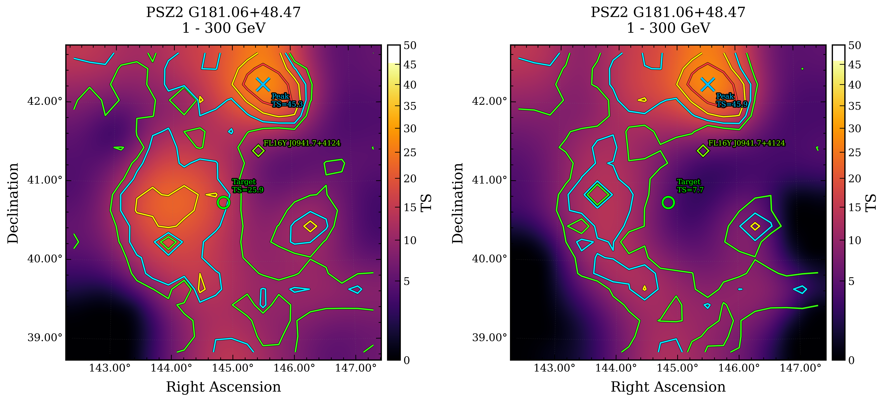
图注：Comparison of TS maps of the region surrounding PSZ2~G181.06+48.47 in the 1--300~GeV energy band. The green circle marks the target cluster position, and the blue cross marks the pixel of maximum TS. Contours are drawn on the unsmoothed TS map at TS $= 9, 16, 25, 36$, shown in green, cyan, yellow, and red, respectively. The nearby green diamond indicates the nearest catalog source from the ROI background model. The field of view shown is $\sim4^\circ \times 4^\circ$ in both panels. (\textbf{a}) TS map obtained using the baseline model consisting of the FL16Y catalog and diffuse backgrounds only. A significant excess is observed at the cluster position with $\mathrm{TS}=25.9$, while the brightest excess in the ROI has $\mathrm{TS}=45.3$ at $(145.53^{\circ},\,42.25^{\circ})$. (\textbf{b}) Residual TS map after adding a point source at the cluster position and performing a maximum-likelihood fit. The residual TS at the cluster decreases to $7.7$, indicating that the added source accounts for most of the emission associated with the cluster, whereas the nearby excess remains the dominant residual ($\mathrm{TS}=45.9$).
对应解读：对应“建议重点查看的图表”第1、2项，以及“关键图表逐图导读”中的图1和图2：全能段TS map与加入点源后的residual TS map。
入选理由：这张图直接展示1--300 GeV全能段在星系团位置的TS峰值、峰值像素与目标标记的相对位置，并给出点源模型拟合后的残差TS。它最能支撑日报中关于“点源模型有4.3σ探测但仍留下中心残差、附近还有未建模热点”的核心判断，是判断信号是否与PSZ2 G181.06+48.47对齐以及是否可能受邻近热点污染的首要图。
来源与置信度：\(arxiv_source\)；high；\(arxiv_source\) / apssamp.tex:figure[1]
Fig02
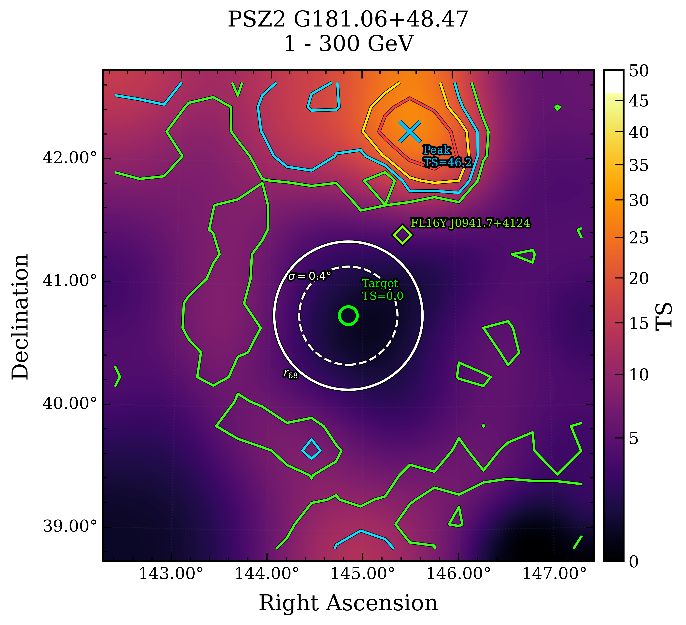
图注：Residual TS map obtained after fitting PSZ2~G181.06+48.47 with the preferred RadialGaussian spatial model ($\sigma=0.4^\circ$). The white dashed circle marks the best-fit Gaussian's standard deviation ($\sigma=0.4^\circ$), and the white solid circle marks the corresponding 68\% containment radius ($r_{68}=1.51\sigma\simeq0.604^\circ$). Green, cyan, yellow, and red contours correspond to TS~$=9,16,25,36$, respectively. The residual emission at the cluster position is almost completely removed, whereas the prominent hotspot located approximately $1.58^\circ$ from the cluster center remains essentially unchanged.
对应解读：对应“建议重点查看的图表”第3项，以及“关键图表逐图导读”中的图3：扩展高斯模型后的residual TS map。
入选理由：这张图是验证扩展模型是否真正改善拟合的关键证据。图中标出σ=0.4°和68% containment半径，并显示采用RadialGaussian模板后星系团中心残差几乎被消除，同时邻近热点仍存在。它直接支撑日报中“TS_ext高且中心残差降到与零相容”的解读。
来源与置信度：\(arxiv_source\)；high；\(arxiv_source\) / apssamp.tex:figure[2]
Fig04
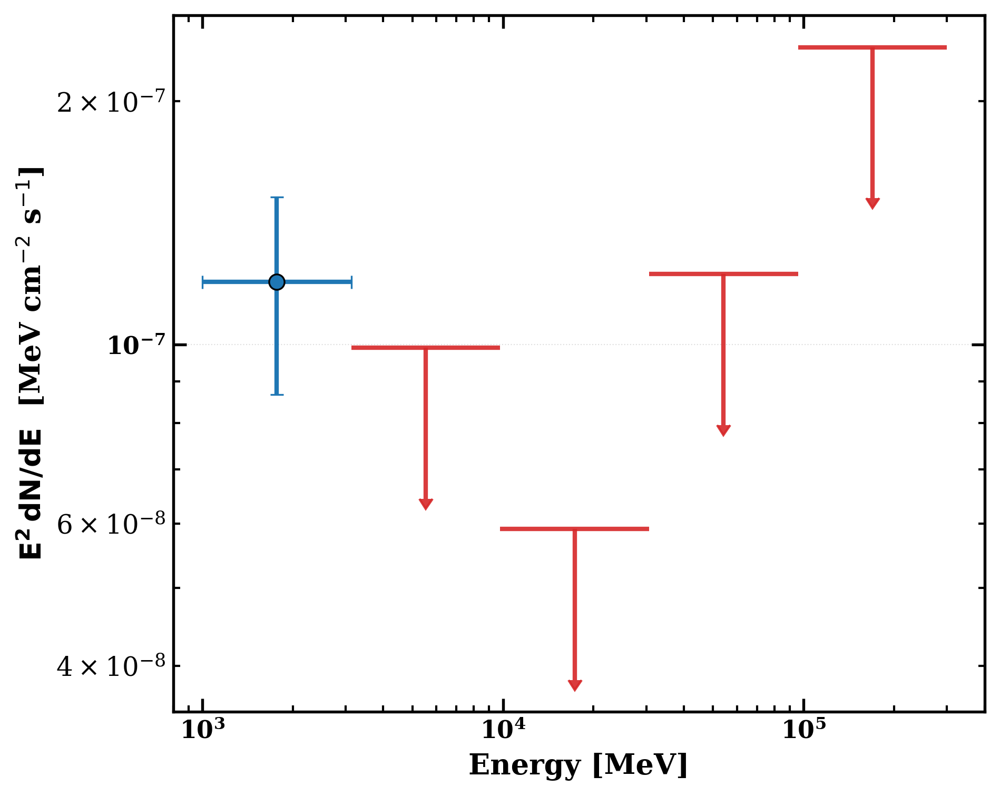
图注：Spectral energy distribution (SED) of PSZ2~G181.06+48.47 obtained with \(\texttt{easyFermi}\) over the 1--300~GeV range, using five logarithmically spaced energy bins. The blue filled circle marks the only bin with a significant detection (TS~$\geq9$, $\approx3\sigma$), with vertical and horizontal error bars showing the $1\sigma$ statistical uncertainty and the bin width, respectively. Red downward arrows denote $95\%$ confidence-level upper limits for the remaining bins (TS~$<9$), with horizontal bars again indicating the bin width.
对应解读：对应“建议重点查看的图表”第5项，以及“关键图表逐图导读”中的图5：SED图。
入选理由：这张SED图直接检验本文谱学结论：只有最低能段有显著探测，其余能段为95%置信上限。它支撑日报中关于软谱、无明显高于约5 GeV辐射、幂律拟合可能主要由最低能点驱动的讨论，是空间扩展结果之外最重要的物理诊断图。
来源与置信度：\(arxiv_source\)；high；\(arxiv_source\) / apssamp.tex:figure[4]
Fig03
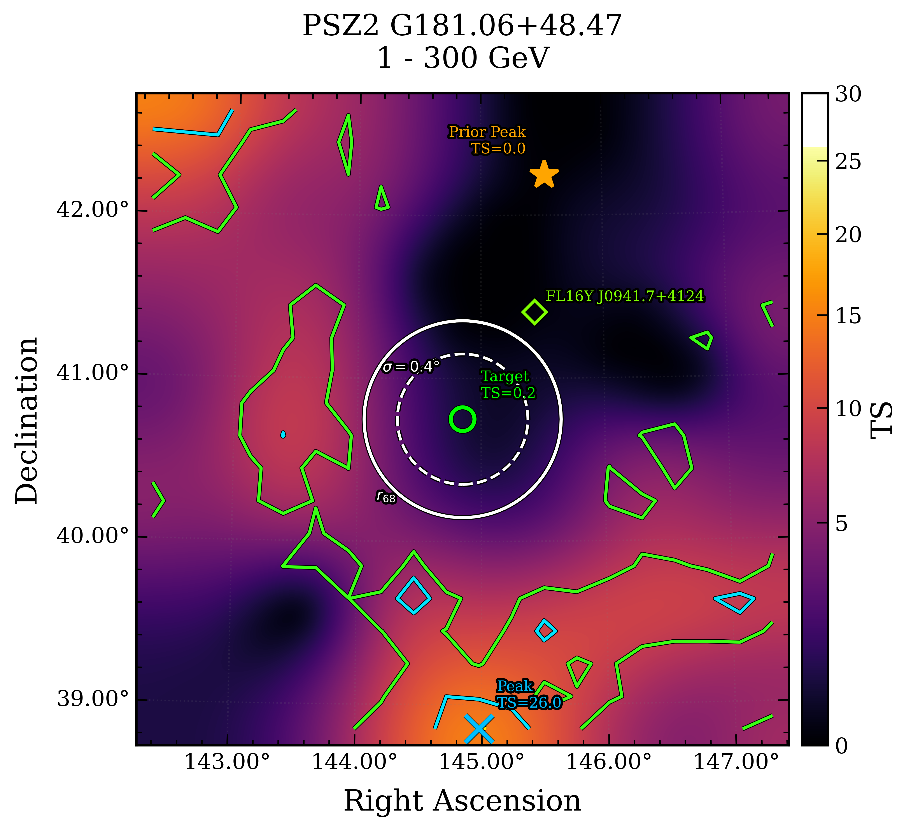
图注：Residual TS map obtained after simultaneously fitting the $\sigma=0.4^{\circ}$ RadialGaussian model for PSZ2~G181.06+48.47 together with an additional RadialGaussian source at the position of the neighboring residual hotspot. The green circle marks the cluster position, while the orange diamond marks the centroid of the second source. The residual TS at both source positions is consistent with zero ($TS_{\rm cluster}=0.2$ and $TS_{\rm residual}\approx0$), demonstrating that the two-source model successfully accounts for the dominant $\gamma$-ray emission in the ROI. The brightest remaining residual ($TS_{\max}=26.0$) is located nearly $2^{\circ}$ south of the cluster and is therefore unlikely to affect the derived properties of PSZ2~G181.06+48.47.
对应解读：对应“建议重点查看的图表”第1、2、3、6项，以及模型拟合段落中关于邻近未建模源和两源退化的讨论。
入选理由：这张图在扩展星系团模板之外同时加入邻近残差热点的RadialGaussian模型，显示两个源位置的残差均接近零。它对排除邻近热点吸收或制造星系团扩展信号非常重要，能支撑日报中关于邻源污染、背景模型和多源拟合稳健性的讨论。
来源与置信度：\(arxiv_source\)；high；\(arxiv_source\) / apssamp.tex:figure[3]
Fig06
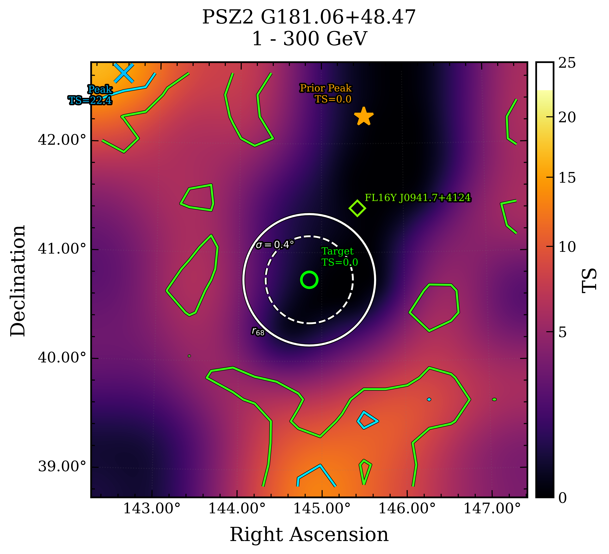
图注：Residual TS map for the $1.0$--$3.2$~GeV analysis after simultaneously modeling PSZ2~G181.06+48.47 and the neighboring hotspot with two RadialGaussian spatial templates of fixed width $\sigma=0.4^{\circ}$. No statistically significant residual emission remains at either source position ($TS_{\rm residual}=0.0$ for both the cluster and the neighboring hotspot). The brightest residual in the field has $TS_{\rm max}=22.4$ and is located approximately $2.55^{\circ}$ from the cluster center, indicating that it is unrelated to the two modeled sources. This provides strong evidence that the two excesses are distinct emission components and that the extended emission associated with PSZ2~G181.06+48.47 is robust against contamination from the neighboring hotspot.
对应解读：对应“建议重点查看的图表”第7项，以及模型拟合段落中关于改变能段后检验稳健性的讨论。
入选理由：这张图聚焦1.0--3.2 GeV低能段，并在同时建模星系团和邻近热点后显示两处残差均为零。由于SED表明信号主要来自最低能段，该图能检验低能信号是否仍可被两个空间上分离的扩展成分解释，对判断结果是否由邻近热点污染有较高价值。
来源与置信度：\(arxiv_source\)；high；\(arxiv_source\) / apssamp.tex:figure[6]
Fig05
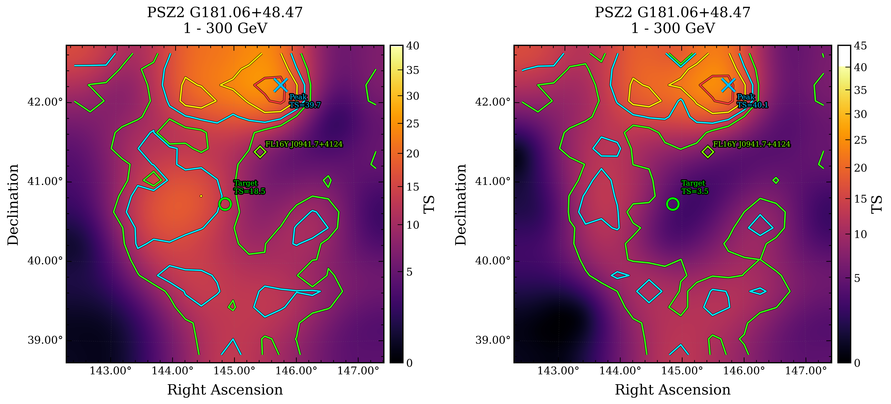
图注：Residual TS maps for the $1.0$--$3.2$~GeV analysis. The left panel shows the residuals obtained using only the diffuse background components and FL16Y catalog sources, revealing a significant excess at the position of PSZ2~G181.06+48.47 with $TS_{\rm residual}=18.5$. The right panel shows the residual TS map after introducing a point source at the cluster position, reducing the residual at the cluster center to $TS_{\rm residual}=3.6$. In both panels, the brightest residual hotspot remains at $(\alpha,\delta)\approx(145.80^{\circ},\,42.25^{\circ})$, demonstrating that it is spatially distinct from the cluster emission.
对应解读：对应“建议重点查看的图表”第1、2、7项，以及低能段残差和能量下限稳健性讨论。
入选理由：这张图展示1.0--3.2 GeV低能段在加入点源前后的残差TS变化，说明最低能段中星系团位置确有 excess，且邻近最亮热点与星系团空间上分离。它补充SED最低能探测的空间证据，但相较Fig06和Fig02，对最终扩展模板结论的支撑稍弱。
来源与置信度：\(arxiv_source\)；high；\(arxiv_source\) / apssamp.tex:figure[5]
强相关工作
这项工作应放在 Fermi-LAT 星系团搜索的长期脉络中理解。同类研究包括对 Coma、Virgo、Fornax、Perseus 等单个星系团的上限或候选信号，以及对星系团样本的堆叠分析。多数结果对简单强子宇宙线模型给出强限制，因此 PSZ2 G181.06+48.47 若确认为扩展 GeV 源，会成为少数值得多波段跟进的目标。检索关键词可用 “Fermi LAT galaxy clusters gamma rays”, “cluster cosmic rays gamma-ray limits”, “Coma cluster Fermi LAT”, “Perseus cluster gamma rays NGC 1275”。
理论相关工作包括强子模型下的 \(p p\) 碰撞伽马射线、宇宙线在星系团中的积累、并合激波和湍流再加速，以及射电晕与伽马射线上限之间的张力。相反观点或需警惕的解释包括未分辨 AGN 群、低能银河弥散背景残差、源表不完整造成的假扩展，以及暗物质湮灭或衰变的过度解释。检索关键词可用 “Pinzke Pfrommer cluster gamma rays”, “cosmic ray induced gamma rays galaxy clusters”, “Fermi diffuse background systematics extended sources”。
对于命名对象 PSZ2 G181.06+48.47，读者还应查同源文献：Planck SZ 目录条目、可能的 X 射线确认论文、光学成员星系或红移测量、射电巡天中是否有 radio halo 或 tailed radio galaxies，以及 Fermi-LAT 源表中邻近源。本文是同一星系团的 GeV 候选辐射研究；要确认物理归属，必须把同源 SZ、X 射线、射电和光学数据放在一起。
同一事件 / 同类源线索：
相似工作：
基础理论 / 方法工作：
相反观点 / 张力线索：
4. Fermi-Large Area Telescope Detection of Very High Energy (>100 GeV) Emission from Compton-Dominated Blazars
- 来源：arXiv / astro-ph.HE
- 链接：https://arxiv.org/abs/2607.10407v1
- 作者：P N Naseef Mohammed, Vaidehi S. Paliya, C D Ravikumar
- 评分：novelty 8/10，importance 8/10，relevance 10/10，final 9.70/10
- 推荐理由：Fermi-LAT系统搜索626个Compton主导耀变体的>100 GeV辐射，发现14个候选/显著源并扩展VHE FSRQ样本，直接涉及GeV-TeV伽马射线、Fermi和CTA后续，是高优先级论文。
中文题目：费米大面积望远镜探测到康普顿主导耀变体的甚高能（\(>100\,\mathrm{GeV}\)）辐射
做了什么：这篇文章用约 \(17.5\) 年的 Fermi-LAT 数据，在 \(626\) 个康普顿主导耀变体（康普顿优势 \(>1\)）中系统搜索 \(>100\,\mathrm{GeV}\) 的伽马射线信号。作者报告 \(14\) 个源达到 \(>4\sigma\) 的甚高能探测置信度，其中 \(4\) 个源是首次以 \(>5\sigma\) 显著性在该能段被探测到；另有 \(21\) 个目标至少记录到一个甚高能光子。核心物理结论是：这些具有宽发射线、外辐射场很强的耀变体仍可产生可逃逸的 \(>100\,\mathrm{GeV}\) 光子，因此发射区通常不能深埋在宽线区内部，而应位于宽线区外侧，约大于 \((1.1\text{--}1.4)R_{\mathrm{BLR}}\)。
为什么重要：FSRQ 和其他宽线耀变体通常被认为有强宽线区光子场，既能提供外康普顿散射的种子光子，也会通过 \(\gamma\gamma\) 吸收强烈压低 \(>100\,\mathrm{GeV}\) 光子。本文把问题从少数著名个例扩展到一个大样本统计搜索：甚高能 FSRQ 不是孤立奇例，而是可以在长期 LAT 数据中系统挖掘出的群体。这个结论直接约束喷流辐射区位置、外康普顿模型、喷流耗散尺度以及未来 CTAO 对 FSRQ 的观测策略。
理论 / 观测 / 仪器方法价值：对理论而言，文章提供了一个检验宽线区吸收、外康普顿辐射和多区喷流模型的样本；对观测而言，它给出了一批适合地面切伦科夫望远镜后随观测的候选源；对方法而言，它展示了如何在 LAT 长时基线数据中针对 \(>100\,\mathrm{GeV}\) 稀有光子做样本化搜索，并把光子到达时间、源活动状态和 \(\gamma\gamma\) 透明度联系起来。
为什么应该关注：如果你关心耀变体的高能辐射机制，这篇文章值得看，因为它挑战了“宽线区内的 FSRQ 很难看到 \(>100\,\mathrm{GeV}\)”这一简单图像。如果你做 CTAO、MAGIC、H.E.S.S.、VERITAS 或 LST 后随观测，它给出了一批高价值候选目标。如果你做喷流物理，它把一个关键尺度问题——发射区在 \(R_{\mathrm{BLR}}\) 内还是外——转化成了可由 LAT 光子统计和吸收光深共同约束的问题。
展开详细解读：文章讲解、背景、理论、重点章节、图表与相关工作
文章详细讲解
科学问题：FSRQ 的光学宽发射线说明其吸积盘和宽线区是辐射效率较高的系统。宽线区光子可以被相对论喷流中的电子逆康普顿散射，产生强烈的 GeV 辐射，因此许多 FSRQ 的谱能量分布表现为康普顿主导，即高能峰亮度超过同步辐射峰。但同一宽线区光子场也会吸收 \(>100\,\mathrm{GeV}\) 光子，尤其当伽马射线发射区位于宽线区内部时，\(\gamma\gamma\to e^+e^-\) 的光深可能很大。这就形成了一个张力：为什么少数宽线耀变体仍能在 VHE 能段被探测到？这些光子是在宽线区外产生，还是通过特殊几何、快速耀发或级联过程逃逸？
作者怎么做：论文从康普顿优势大于 \(1\) 的 \(626\) 个耀变体出发，使用约 \(17.5\) 年 Fermi-LAT 观测数据，在 \(>100\,\mathrm{GeV}\) 能段做系统搜索。这样的设计有两个优点：一是样本不是只挑已知 TeV 源，而是针对外康普顿成分强、理论上容易受宽线区吸收影响的对象；二是 LAT 的长时基线能累积稀有 VHE 光子，也能检查这些光子是否集中在 GeV 活动期或低活动期。作者还结合宽线区尺度估计，计算 \(\gamma\gamma\) 吸收光深，用透明度条件反推发射区距中心黑洞的下限。
关键结果：作者在样本中找到 \(14\) 个 \(>4\sigma\) 的 VHE 发射源，其中 \(4\) 个源此前未以 \(>5\sigma\) 高显著性在 VHE 能段被确认。除此之外，有 \(21\) 个目标至少关联到一个 \(>100\,\mathrm{GeV}\) 光子，这扩展了可疑或候选 VHE 宽线耀变体的名单。一个重要细节是，VHE 光子并不只在明显 GeV 耀发期出现，也可在低喷流活动状态被记录到。这提示 VHE 辐射区可能不是单一、短暂、只在耀发中开启的区域，而可能与更外侧、更长期存在的耗散区有关。
局限和下一步：LAT 在 \(>100\,\mathrm{GeV}\) 的有效面积和光子统计有限，因此单个源的光谱形状、短时变和吸收截断通常难以精确测量；源关联、背景建模、河外背景光吸收、能量重建误差和试验因子都会影响显著性解释。作者的宽线区透明度约束依赖宽线区半径、光子场谱形、几何分布和发射区各向异性等假设。因此后续最关键的是多波段同步监测，尤其是 CTAO、MAGIC、H.E.S.S.、VERITAS 和 LST 对这些候选源的快速或深度观测，以区分宽线区外的外康普顿、尘埃环种子光子、同步自康普顿、多区模型以及可能的强子成分。
关键结果是怎么做出来的
本文证据链的第一步是样本定义。作者不是从所有 LAT 源中盲搜，而是选择 \(626\) 个康普顿优势 \(>1\) 的耀变体。这个选择让样本集中在高能峰强、外部光子场重要的对象上，尤其适合检验宽线区吸收与 VHE 逃逸之间的冲突。读者需要注意这里的样本选择会偏向 GeV 亮源和 SED 已有较好覆盖的源，因此“VHE FSRQ 占比”不能直接解释为母体宇宙学发生率。
第二步是用约 \(17.5\) 年 Fermi-LAT 数据在 \(>100\,\mathrm{GeV}\) 搜索源信号。论文报告 \(14\) 个源达到 \(>4\sigma\)，其中 \(4\) 个为首次 \(>5\sigma\) 高显著性 VHE 探测。对这类稀有光子工作，显著性通常来自似然检验或源模型加入前后的检验统计量变化，而不仅是“看见几个高能光子”。因此读者应检查文中是否给出每个源的测试统计量、局部显著性、是否校正多源搜索的试验因子，以及背景模型改变后结果是否稳定。
第三步是单光子层面的补充证据。作者还列出 \(21\) 个至少有一个 VHE 光子的对象。这个结果不等同于 \(21\) 个稳健源探测，但它很有价值：在 LAT 的点扩散函数、能量依赖的有效面积、源方向附近背景和事件类别筛选都被考虑后，高能光子的空间和时间分布可以作为地面望远镜后随观测的候选触发列表。读者应重点看光子能量、到达时间、与源位置的角距离、事件重建质量以及该时刻 GeV 光变状态。
第四步是时间关联分析。作者发现 VHE 光子既可出现在伽马射线耀发期，也可出现在低活动期。这一点削弱了“只有极端耀发瞬间才能突破宽线区吸收”的简单解释。若 VHE 光子在低态也出现，那么更自然的解释包括：发射区常位于宽线区外；喷流中存在多个辐射区；或某些较外侧区域在 GeV 总光度不高时仍能产生硬的 VHE 分量。读者应检查相关图中光变曲线的时间 bin、VHE 光子标记、低态定义以及是否存在曝光变化造成的假相关。
第五步是透明度约束。作者估计宽线区光子场导致的 \(\gamma\gamma\) 光深，并要求观测到的 \(>100\,\mathrm{GeV}\) 光子满足近似透明条件。由此得到发射区距黑洞应在宽线区外，约 \(r\gtrsim(1.1\text{--}1.4)R_{\mathrm{BLR}}\)。这个数值不是几何无关的硬边界，而是依赖宽线区半径、线光度、光子场角分布和所用最高能光子能量。稳健性检验应关注不同宽线区模板、不同光子能量阈值、不同河外背景光模型和不同 Doppler 因子的影响。
展开背景、理论、公式、模型、章节和图表导读
背景知识
研究对象是康普顿主导耀变体，尤其是带宽发射线的 FSRQ。它们的相对论喷流几乎指向观测者，因此同步辐射和逆康普顿辐射被强烈多普勒增强。FSRQ 与 BL Lac 的一个核心差别是前者通常有可观的宽线区和吸积盘辐射，外部光子场强，导致其高能峰常由外康普顿过程主导。
历史上，FSRQ 在 GeV 能段很亮，但在 TeV 或 \(>100\,\mathrm{GeV}\) 能段相对少见。一个常用解释是宽线区吸收：紫外线和光学线光子与 VHE 伽马射线相互作用产生正负电子对，使宽线区内部对高能光子不透明。早期 MAGIC、H.E.S.S. 和 VERITAS 对少数 FSRQ 的 VHE 探测已经显示，简单的一区、宽线区内发射模型不总是足够。
为什么现在值得重新看？因为 Fermi-LAT 已积累了超过十几年的全天巡天数据，VHE 光子虽然稀少，但长期积分能显著提高发现概率；同时 CTAO 即将提供更高灵敏度的 VHE 后随能力。一个经过 LAT 长时基线筛选的候选样本，可以直接影响未来 CTAO 的目标优先级和触发策略。
该领域常见误区之一是把“康普顿主导”直接等同于“发射区必在宽线区内”。实际上，外康普顿种子光子也可能来自尘埃环、外侧宽线区残余辐射或喷流鞘层。另一个误区是把“看见一个 \(>100\,\mathrm{GeV}\) 光子”当成源探测；对 LAT 来说，必须同时考虑角距离、背景、曝光、事件类别和试验因子。第三个误区是忽略河外背景光吸收：对于较高红移 FSRQ，观测到的 VHE 光谱还受到星系际红外—光学背景的能量依赖吸收。
基础理论 / 方法脉络
基本物理图像从相对论喷流辐射开始。喷流中非热电子在磁场中产生同步辐射，形成低能峰；同一批或相关电子把低能光子逆康普顿散射到 X 射线和伽马射线，形成高能峰。如果种子光子主要来自喷流自身同步辐射，就是同步自康普顿；如果主要来自吸积盘、宽线区或尘埃环，就是外康普顿。FSRQ 中外部光子场强，因此常呈现康普顿主导。
康普顿优势通常可理解为高能峰光度与同步峰光度之比。若 \(L_{\mathrm{IC}}/L_{\mathrm{syn}}>1\)，说明粒子看到的辐射能量密度相对于磁场能量密度较高。这个量不是单独的物理参数，而是由电子分布、磁场、Doppler 因子、外部光子场能量密度和辐射区位置共同决定，因此存在明显退化。
VHE 透明度由 \(\gamma\gamma\) 吸收控制。一个能量为 \(E_\gamma\) 的伽马光子与能量为 \(\epsilon\) 的软光子相遇，若质心能量超过 \(2m_ec^2\)，即可产生 \(e^+e^-\)。宽线区包含 Ly\(\alpha\)、Balmer 线、连续谱和再处理的紫外光子，正好能有效吸收几十到几百 GeV 的伽马光子。若发射区位于宽线区外，软光子场能量密度和碰撞角分布都会改变，光深快速下降。
观测方法上，LAT 的 VHE 搜索依赖事件级数据、仪器响应函数、背景模型和似然统计。由于 \(>100\,\mathrm{GeV}\) 光子很少，不能只看光变曲线平均通量；需要把每个候选源方向附近的光子空间分布、能量分布和背景期望结合起来。时间上，再把 VHE 光子叠加到较低能段的 GeV 光变曲线上，判断它们是否与耀发同步。
主要系统误差包括：银河弥散背景和各向同性背景建模、邻近源污染、LAT 在高能端的有效面积和能量重建、源红移与河外背景光模型、宽线区半径估计、宽线区几何和各向异性。主要退化包括：更大的 Doppler 因子可以降低内禀光度要求，较外的发射区可以降低宽线区吸收，但也会改变外部种子光子密度；尘埃环种子光子与外侧宽线区种子光子在宽带 SED 上可能相互混淆。
公式与推导
第一步，从相对论辐射的观测增强写起。若发射区以体洛伦兹因子 \(\Gamma\) 运动、视线夹角为 \(\theta_{\mathrm{v}}\)，Doppler 因子为
其中 \(\beta c\) 是喷流速度。对耀变体，\(\theta_{\mathrm{v}}\lesssim1/\Gamma\)，因此 \(\delta\) 较大，观测到的同步和康普顿辐射都被增强。
第二步，用康普顿优势连接辐射能量密度。近似在 Thomson 区，逆康普顿与同步辐射的光度比可写为
其中 \(U'_{\mathrm{rad}}\) 是喷流共动系中的种子光子能量密度，\(U'_B\) 是磁场能量密度。本文样本要求 \(q_{\mathrm{C}}>1\)，即高能辐射相对同步辐射占优。
第三步，宽线区尺度常用经验关系估计：
其中 \(L_{\mathrm{d}}\) 是吸积盘光度。若只有宽线光度 \(L_{\mathrm{BLR}}\)，常采用 \(L_{\mathrm{BLR}}\simeq f_{\mathrm{cov}}L_{\mathrm{d}}\)，其中 \(f_{\mathrm{cov}}\) 是覆盖因子。
第四步，宽线区光子场的能量密度可粗略写为
其中 \(\xi_{\mathrm{BLR}}\) 是被宽线区再处理的盘光度比例，\(r\) 是发射区距黑洞的距离，\(g(r/R_{\mathrm{BLR}})\) 描述离开宽线区后能量密度随半径下降和角分布改变。
第五步，\(\gamma\gamma\) 产额阈值由
给出，其中 \(E_\gamma\) 是伽马光子能量，\(\epsilon\) 是软光子能量，\(\psi\) 是两光子的夹角。对 \(E_\gamma\sim100\,\mathrm{GeV}\)，紫外—光学宽线光子正处在高效吸收范围。
第六步，沿路径的吸收光深为
其中 \(n(\epsilon,\Omega,s)\) 是软光子数密度角分布，\(\sigma_{\gamma\gamma}\) 是成对产生截面。观测到 VHE 光子要求通常近似为 \(\tau_{\gamma\gamma}\lesssim1\)。
第七步，LAT 源探测常用似然比检验统计量表示为
其中 \(\mathcal{L}\) 是包含源模型、背景模型和仪器响应的泊松似然，\(\hat{\boldsymbol{\theta}}_{\mathrm{src}}\) 是最佳拟合源参数。大样本近似下，显著性常近似为 \(\sqrt{\mathrm{TS}}\)，但在低计数和边界参数情形需谨慎。
第八步，事件计数的泊松似然可写为
其中 \(n_i\) 是空间—能量—时间 bin 中的观测计数，\(\mu_i\) 是源和背景模型经 LAT 响应卷积后的期望计数。这个式子说明 VHE 搜索不是简单数光子，而是比较“有源”和“无源”模型对事件分布的解释力。
第九步，观测通量与内禀通量之间还需考虑吸收：
其中 \(\tau_{\mathrm{EBL}}\) 是河外背景光吸收光深，\(z\) 是红移。本文用观测到的 \(>100\,\mathrm{GeV}\) 光子反推 \(\tau_{\gamma\gamma}^{\mathrm{BLR}}\) 不能太大，从而得到 \(r\gtrsim(1.1\text{--}1.4)R_{\mathrm{BLR}}\) 的发射区位置约束。
模型拟合 / 应用方法
这类工作首先要拟合或固定 LAT 区域模型。区域内包含目标源、邻近 LAT 编目源、银河弥散背景和各向同性背景；每个源的谱形可为幂律、对数抛物线或指数截断形式。对 \(>100\,\mathrm{GeV}\) 搜索，源光子数少，背景也少，因此每个高能事件的空间权重和能量权重都很重要。拟合量通常包括目标源归一化、谱指数或固定谱形下的通量，以及背景归一化。
参数估计依赖泊松似然而不是高斯 \(\chi^2\)。在低计数区，置信区间可能是不对称的，上限比点估计更有信息。若论文给出 \(>4\sigma\) 或 \(>5\sigma\) 源，读者应区分局部显著性和全样本搜索后的全局显著性。\(626\) 个目标和多个时间窗、能量阈值都会引入试验因子；若没有充分校正，候选源列表更适合作为后随目标，而不是严格发生率统计。
透明度模型的拟合或约束通常不是直接拟合唯一的 \(r\)，而是用宽线区参数计算在不同 \(r/R_{\mathrm{BLR}}\) 下的 \(\tau_{\gamma\gamma}\)。当最高能光子 \(E_{\max}\) 被观测到时，要求 \(\tau_{\gamma\gamma}(E_{\max},r)\lesssim1\) 给出 \(r\) 的下限。这里的退化包括 \(R_{\mathrm{BLR}}\) 与 \(L_{\mathrm{d}}\) 的经验关系、覆盖因子 \(\xi_{\mathrm{BLR}}\)、宽线区几何、软光子谱形和发射角分布。
残差诊断应看两类。第一类是 LAT 似然残差：目标周围是否还有未建模点源、弥散背景是否在高纬或低纬区域产生结构性残差、VHE 事件是否集中在 PSF 允许范围内。第二类是物理残差：若用宽线区内发射模型预测强吸收，却观测到硬的 \(>100\,\mathrm{GeV}\) 分量，说明模型需要更外侧发射区、多区结构或时间依赖的粒子加速。
模型可能失败的场景包括：单个高能光子被误关联到目标源；邻近硬谱源或未编目源贡献事件；太阳、月亮或地球边缘背景处理不充分；红移较高时 \(\tau_{\mathrm{EBL}}\) 使内禀谱要求过硬；或者宽线区并非球壳而是扁平、团块化结构，使透明度有强方向依赖。因此，实际应用中应把本文候选列表与同步光学偏振、毫米波 VLBI 结构、X 射线谱和地面 VHE 观测结合，而不是只依赖 LAT 单能段结果。
重点章节 / 结果段落怎么读
数据与样本部分应首先阅读。重点确认 \(626\) 个康普顿主导耀变体如何定义，康普顿优势来自哪类 SED 或编目量，FSRQ 与其他宽线耀变体如何分类，以及是否排除了低银纬、邻近强源或红移未知对象。这个部分决定了后面统计结论能否推广。
LAT 分析方法部分是第二个重点。读者应看事件选择、能量阈值 \(>100\,\mathrm{GeV}\)、时间范围约 \(17.5\) 年、ROI 设置、仪器响应函数、弥散背景模板、邻近源处理和显著性定义。尤其要确认 \(>4\sigma\) 与 \(>5\sigma\) 是如何从似然或光子概率中得到的。
结果部分应重点看 \(14\) 个显著 VHE 源和 \(21\) 个至少一个 VHE 光子的候选对象。表格中应检查源名、红移、分类、最高能光子能量、检测显著性、VHE 通量或上限，以及是否已有地面 VHE 探测记录。这个部分直接决定本文“扩展 VHE FSRQ 群体”的力度。
时间分析部分应看 VHE 光子与 GeV 活动状态的对应关系。若文中有光变曲线，重点不是只看耀发峰，而是看 VHE 光子是否落在曝光良好、背景稳定、且与低能活动状态定义一致的时间段。这个部分支撑“VHE 可在耀发和低态均出现”的结论。
讨论与透明度约束部分应最后细读。作者把宽线区吸收模型与观测到的 VHE 光子结合，得到发射区位于 \((1.1\text{--}1.4)R_{\mathrm{BLR}}\) 外的约束。读者应检查宽线区半径、盘光度、覆盖因子和河外背景光模型的取值，并判断这些系统误差是否会显著改变下限。
建议重点查看的图表
-
样本或 SED 诊断图：看康普顿优势 \(q_{\mathrm{C}}\) 的分布、红移分布和源类别分布，确认 VHE 候选是否只是最高亮度或最低红移子样本。
-
VHE 显著性或 \(\mathrm{TS}\) 分布图：看 \(626\) 个源中高显著性尾部是否明显超出背景期望，\(>4\sigma\) 和 \(>5\sigma\) 阈值附近是否有边界样本。
-
源列表表格：检查 \(14\) 个显著源的源名、红移、最高能光子、显著性、是否首次高显著性探测，以及已有 VHE 观测状态。
-
单光子关联表：对 \(21\) 个至少一个 VHE 光子的对象，看光子能量、角距离、事件类别、到达时间和源关联概率。
-
光变曲线图：看 VHE 光子标记是否与 GeV 耀发峰重合，或者落在低态；同时检查 bin 宽、误差棒、上限和曝光间断。
-
\(\gamma\gamma\) 光深曲线：看 \(\tau_{\gamma\gamma}\) 随 \(E_\gamma\) 和 \(r/R_{\mathrm{BLR}}\) 的变化，特别是 \(\tau_{\gamma\gamma}=1\) 线如何给出 \((1.1\text{--}1.4)R_{\mathrm{BLR}}\) 的下限。
-
稳健性或系统误差表：若有，应看不同背景模型、不同 EBL 模型、不同宽线区参数和不同事件选择对显著性及发射区下限的影响。
关键图表逐图导读
图 1：若论文给出样本选择或康普顿优势分布，横轴通常是 \(q_{\mathrm{C}}\)、红移 \(z\)、GeV 光度或谱指数，纵轴是源数。读图时要看 VHE 探测源是否集中在高 \(q_{\mathrm{C}}\)、低 \(z\)、硬谱或高通量端。陷阱是把这种分布直接解释为物理偏好；它也可能由 LAT 灵敏度和 EBL 吸收选择效应造成。
图 2：若为 VHE 检测显著性或 \(\mathrm{TS}\) 图，横轴可能是源序号或 \(\mathrm{TS}\)，纵轴为显著性、\(\mathrm{TS}\) 或概率。模型线或阈值线应标出 \(4\sigma\) 与 \(5\sigma\)。读者应看 \(14\) 个源是否清楚越过阈值，边缘源是否依赖少数光子。陷阱是忽略 \(626\) 个目标带来的多重检验。
图 3：若为光变曲线，横轴为时间，纵轴为 LAT GeV 通量或能流，VHE 光子用竖线或符号标出。主要结论是 VHE 光子既可对应耀发，也可对应低态。读图时要检查低态点是否只是大误差或上限，VHE 光子所在时间段是否有足够曝光，以及时间 bin 是否过宽导致短耀发被稀释。
图 4：若为最高能光子或单光子关联图，坐标可能是天空角距离、能量或到达时间。数据点代表 \(>100\,\mathrm{GeV}\) 事件，误差或圆圈代表 LAT 高能 PSF。读者应看事件与源位置的角距离是否小于合理包含半径，并与附近源距离比较。陷阱是高能 PSF 虽小，但邻近硬谱源或未建模源仍可能污染。
图 5：若为 \(\tau_{\gamma\gamma}\) 曲线，横轴多为 \(r/R_{\mathrm{BLR}}\) 或 \(E_\gamma\)，纵轴为光深 \(\tau_{\gamma\gamma}\)。不同曲线代表不同光子能量、宽线区参数或源。关键是 \(\tau_{\gamma\gamma}=1\) 的交点是否落在 \(1.1\text{--}1.4R_{\mathrm{BLR}}\)。陷阱是把该交点看成精确半径；实际上它是模型依赖的透明度下限。
图 6：若为 VHE 源与已有地面探测源的比较图，横轴可能是红移或 GeV 光度，纵轴为 VHE 通量、谱指数或最高能光子。读者应看新发现源是否填补了参数空间，还是只延伸了已知 VHE FSRQ 的低红移高亮端。这个图能帮助判断 CTAO 后随观测优先级。
论文原图 / 可嵌入图片
Fig02
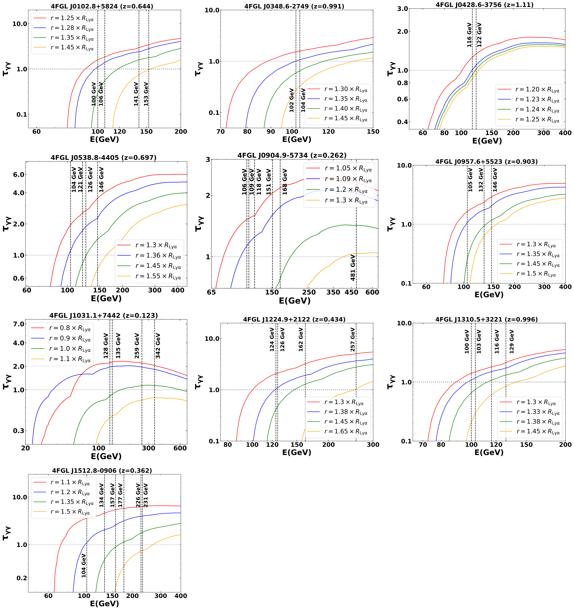
图注：Optical depth due to $\gamma\gamma$ pair production with the BLR photons as a function of $\gamma$-ray photon energy for different distances of the emission region from the photon field. Energies of detected VHE photons are highlighted by the vertical dotted lines. See the text for details.
对应解读：对应“建议重点查看的图表”第6项和“关键图表逐图导读”图5：γγ光深曲线；也对应模型拟合段落中用τγγ(Emax,r)≤1约束发射区半径下限。
入选理由：这张图直接展示BLR光子场导致的γγ吸收光深随伽马射线能量和发射区距离变化，并用竖线标出已探测VHE光子能量，是支撑论文核心物理结论——VHE发射区需位于BLR外侧、约大于1.1–1.4倍R_BLR——的最关键图。相比其他候选图，它最直接连接观测到的最高能光子与透明度约束。
来源与置信度：\(arxiv_source\)；high；\(arxiv_source\) / VHE.tex:figure[2]
Fig01
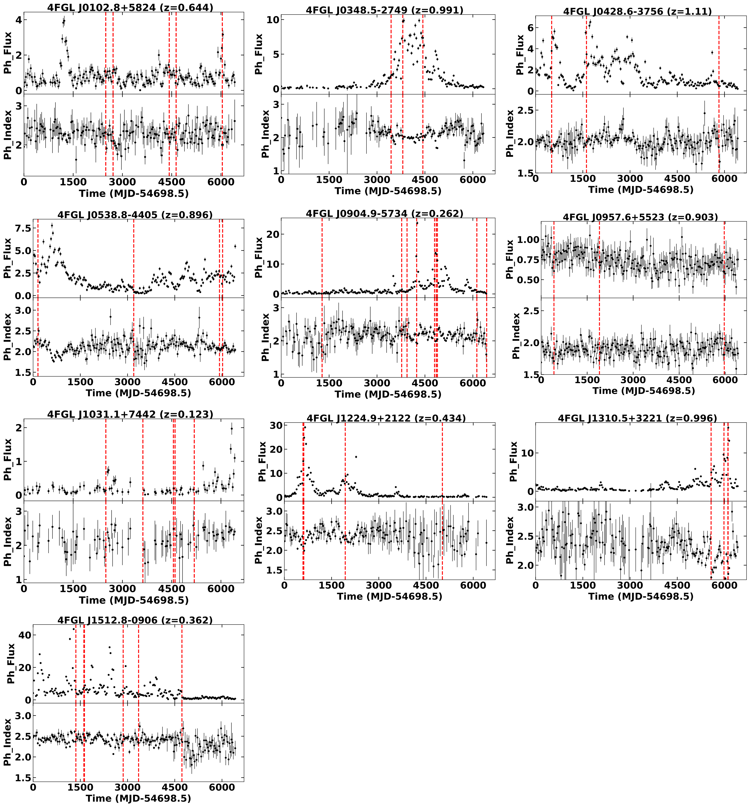
图注：Monthly-binned light curves of VHE sources (TS$>$25) in the energy range 0.1$-$100 GeV constructed using the data taken from Fermi-LAT Light Curve Repository. In each plot, top panel represents the photon flux in units of ${10^{-7}}$ ph ${\ cm^{-2}\ s^{-1}}$, and bottom panel refers to the photon index. The red dashed vertical lines represent the time of arrival of VHE photons.
对应解读：对应“建议重点查看的图表”第5项和“关键图表逐图导读”图3：LAT光变曲线与VHE光子到达时间的关系。
入选理由：图中给出0.1–100 GeV月尺度光变曲线、光子指数以及VHE光子到达时间的红色虚线，可直接检验日报强调的结论：VHE光子既可能出现在GeV耀发期，也可能出现在低活动期。它对于判断VHE事件是否与喷流活动状态相关、是否可能被宽时间bin稀释非常重要。
来源与置信度：\(arxiv_source\)；high；\(arxiv_source\) / VHE.tex:figure[1]
Fig03
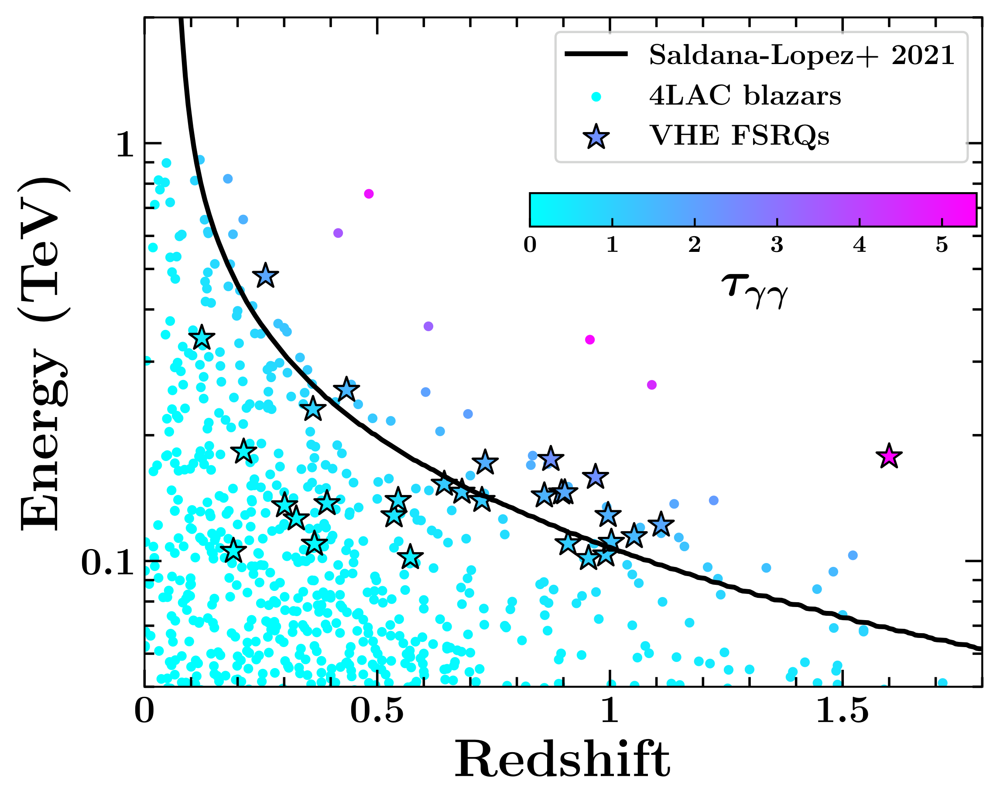
图注：Cosmic $\gamma$-ray horizon. The black solid line indicates the opacity regime corresponding to an EBL optical depth of $\tau_{EBL} = 1$ \(\citep{2021MNRAS.507.5144S}.\) Source markers are color coded by their respective EBL optical depth values derived from the same model. The VHE-emitting FSRQs are shown as stars, whereas, filled circles refer to blazars present in the fourth catalog of the Fermi-LAT detected AGN \(\citep\)[4LAC;][]{2020ApJ...892..105A}.
对应解读：对应“关键图表逐图导读”图6以及模型局限中关于EBL吸收和VHE源参数空间比较的讨论。
入选理由：这张宇宙γ射线视界图用红移、EBL光深和源类别比较VHE发射FSRQ与4LAC耀变体的位置，有助于判断新探测源是否受EBL吸收选择效应影响，以及它们在已知VHE耀变体参数空间中的位置。虽然不如光深和光变曲线直接支撑主结论，但能补充解释红移与EBL系统效应。
来源与置信度：\(arxiv_source\)；high；\(arxiv_source\) / VHE.tex:figure[3]
强相关工作
本文与少数经典 VHE FSRQ 探测直接相关，例如 \(3\mathrm{C}\,279\)、\(4\mathrm{C}+21.35\) 或 PKS \(1222+216\) 等源的 MAGIC、H.E.S.S. 或 VERITAS 观测。这些个例长期被用来论证发射区在宽线区外、喷流存在紧凑子结构，或需要非常大的 Doppler 因子。本文的贡献是把个例问题变成一个 \(626\) 源样本上的 LAT 长时基线搜索。检索关键词可用 “VHE FSRQ MAGIC 3C 279”, “PKS 1222+216 VHE”, “Fermi LAT \(>100\,\mathrm{GeV}\) blazars”, “broad line region gamma gamma absorption blazars”。
理论上，本文与外康普顿模型、宽线区吸收模型和耀变体序列讨论相连。相近基础工作包括 Ghisellini 与 Tavecchio 关于 FSRQ 辐射区和外部光子场的模型，以及 Poutanen 与 Stern 关于宽线区对 GeV 到 VHE 谱形吸收特征的讨论。潜在张力来自一部分 SED 拟合仍偏好宽线区内 GeV 发射区，而 VHE 透明度要求发射区在外；一种折中是 GeV 和 VHE 来自不同区域。检索关键词可用 “external Compton dusty torus FSRQ”, “BLR opacity gamma gamma”, “multi-zone blazar emission”, “CTAO FSRQ very high energy”。
同一事件 / 同类源线索：
相似工作：
基础理论 / 方法工作：
相反观点 / 张力线索：
5. AT2019ijn: a fast-rising, slow-decaying blue optical transient with exceptionally bright radio emission
- 来源：arXiv / astro-ph.HE
- 链接：https://arxiv.org/abs/2607.11545v1
- 作者：Hucheng Ding, Xinwen Shu, Luming Sun, Liangduan Liu, Lei Yang, Yunwei Yu, Xueguang Zhang, Ying Gu
- 评分：novelty 8/10，importance 8/10，relevance 8/10，final 9.00/10
- 推荐理由：AT2019ijn是快速蓝光学暂现源且射电极亮，可能为离轴相对论喷流TDE/中等质量黑洞事件；对相对论暂现源、喷流人口和射电发现离轴高能事件有较高价值。
中文题目：AT2019ijn：快速上升、缓慢衰减的蓝色光学暂现源及其异常明亮的射电辐射
做了什么：这篇文章报告了位于红移 \(z=0.273\) 的矮星系核区暂现源 AT2019ijn。它在光学上只用约 \(5\) 天升至 \(M_g\simeq -21.1\)，之后一个多月缓慢衰减，并维持 \(T_{\rm BB}\sim 1.5\text{--}1.6\times10^4\,{\rm K}\) 的高黑体温度；但真正反常的是射电：在光学发现后约 \(640\) 天达到 \(L_\nu\sim2\times10^{31}\,{\rm erg\,s^{-1}\,Hz^{-1}}\)，比同一晚期阶段的已知射电亮快速蓝色光学暂现源和超新星亮至少两个数量级。作者认为，一个视角约 \(40^\circ\) 的离轴相对论喷流可以解释其晚峰、长寿命、高亮度射电辐射；物理起源上更倾向于一颗 \(\sim10^5\,M_\odot\) 中等质量黑洞造成的带喷流潮汐瓦解事件，但不能完全排除带喷流磁星方案。
为什么重要：AT2019ijn 把两个通常分开的现象连接起来：光学上像快速蓝色光学暂现源，射电上却像相对论喷流事件，且发生在矮星系核区。这意味着一些离轴喷流事件可能在光学巡天中只表现为“奇怪的蓝色快变源”，而真正的能量尺度和几何信息要到数百天后的射电才暴露出来。
理论 / 观测 / 仪器方法价值：对理论而言，它提供了一个检验离轴相对论喷流、潮汐瓦解事件和磁星驱动外流之间退化关系的案例。对观测而言，它强调了长期射电随访的价值：若只看早期光学，AT2019ijn 很容易被归入普通快速蓝色暂现源；若没有晚期射电监测，就会漏掉最关键的喷流证据。对方法而言，文章展示了如何联合光学黑体演化、宿主核区位置、射电光变曲线和喷流视角模型来约束源的物理本质。
为什么应该关注：如果你关心快速蓝色光学暂现源、潮汐瓦解事件、中等质量黑洞或多波段时域天文学，AT2019ijn 都值得看。它提示我们：未来 Rubin、ZTF 后续、VLA、MeerKAT、ASKAP、SKA 路径下发现的“光学快变源”中，可能隐藏着一批离轴喷流事件；这些事件是寻找低质量星系核中黑洞、测量喷流产生条件和评估暂现源总体率的重要样本。
展开详细解读：文章讲解、背景、理论、重点章节、图表与相关工作
文章详细讲解
科学问题：AT2019ijn 的核心问题不是“又发现一个亮的蓝色暂现源”，而是它的光学和射电性质是否能放进已有类别。光学上，它快速上升、蓝、热、亮，类似快速蓝色光学暂现源或某些核区暂现源；射电上，它在光学发现约 \(640\) 天后才达到极高峰值，且单色光度 \(L_\nu\sim2\times10^{31}\,{\rm erg\,s^{-1}\,Hz^{-1}}\)，远高于普通核心坍缩超新星或多数已知射电亮 FBOT 在相似时标的表现。问题因此变成：这是一个极端超新星、磁星驱动爆炸、带喷流潮汐瓦解事件，还是一个新型相对论暂现源？
作者怎么做：文章从光学发现和宿主星系环境出发，给出 AT2019ijn 在 \(z=0.273\) 的绝对星等、上升时间、衰减时标和黑体温度演化；随后将其射电光变与已知 FBOT、射电超新星以及喷流 TDE 进行横向比较。关键不是单一波段拟合，而是把“核区位置”“矮星系宿主”“快速蓝色光学峰”“持久高温”“晚期极亮射电峰”共同作为判据。射电部分使用离轴相对论喷流解释：当喷流减速后相对论性 beaming 变弱，原本偏离视线的喷流辐射进入观测视角，于是出现晚期射电增亮和迟峰。
关键结果：作者给出的最重要结论是，AT2019ijn 的射电亮度和峰值时间很难由常规超新星激波解释，至少在经验比较上，它比已知射电亮 FBOT 和超新星在类似晚期时标亮两个数量级以上。离轴喷流模型能自然给出晚峰，且视角约为 \(40^\circ\) 的几何解释与“光学没有表现为典型正轴喷流 TDE”相容。物理起源方面，文章偏向中等质量黑洞的喷流潮汐瓦解事件，黑洞质量量级为 \(\sim10^5\,M_\odot\)，这与矮星系核区环境相当契合。
局限和下一步：这类个例的最大困难是模型不唯一。喷流 TDE、磁星驱动外流、低密度环境中的极端超新星或复杂 CSM 相互作用都可能在某些参数区间产生蓝色光学暂现和强射电。文章明确说磁星模型不能完全排除，说明现有数据对中心引擎、喷流能量、外部密度剖面、微物理参数和视角仍有退化。下一步最需要的是更密集的多频射电光变、晚期高分辨率成像、宿主核区定位、深层 X 射线限制，以及对类似光学快变源的系统射电随访，以确定 AT2019ijn 是孤例还是一个真实新族群的首批成员。
关键结果是怎么做出来的
本文证据链的第一环是样本定义：AT2019ijn 是一个单个但多波段覆盖的暂现源，位于 \(z=0.273\) 的矮星系核区。光学数据给出它在约 \(5\) 天内达到 \(M_g\simeq -21.1\)，随后在一个多月尺度上缓慢变暗。作者通过多色光度和黑体拟合得到持续较高的 \(T_{\rm BB}\sim1.5\text{--}1.6\times10^4\,{\rm K}\)，这说明早期辐射不是典型快速冷却的普通超新星光球，也使它落入快速蓝色光学暂现源和核区蓝色暂现源的交界区域。
第二环是射电异常性。文章强调 AT2019ijn 的射电峰值出现在光学发现后约 \(640\) 天，峰值单色光度约 \(2\times10^{31}\,{\rm erg\,s^{-1}\,Hz^{-1}}\)。这个数值本身非常关键，因为作者不是只说“探测到射电”，而是把它放到同类事件的 \(L_\nu\)-时间图上比较：在相似时标，它比已知射电亮 FBOT 和射电超新星至少高两个数量级，却接近喷流 TDE 的射电光度范围。读者应重点检查相应比较图中 AT2019ijn 与 AT2018cow 类、CSS161010 类、普通 Ib/c 射电超新星以及 Swift J1644+57 类喷流 TDE 的位置关系。
第三环是模型解释。晚期峰值是离轴喷流的典型诊断之一：早期喷流相对论 beaming 锥角窄，视线在喷流外时辐射被压低；随着喷流扫掠外部介质并减速，洛伦兹因子 \(\Gamma\) 下降，等效可见角 \(1/\Gamma\) 变大，辐射逐渐进入视线，形成迟到的射电峰。作者称视角约为 \(40^\circ\) 的离轴喷流能解释其长寿命、高亮度、晚峰射电演化，这一结论应主要由射电光变形状、峰值时间、峰值光度和多频谱演化共同支撑。
第四环是源的本质判断。若只是射电很亮，可能仍可诉诸极端核心坍缩或磁星注能；但 AT2019ijn 位于矮星系核区，并且所需中心引擎能量和喷流形态接近已知喷流 TDE，因此作者偏向一颗 \(\sim10^5\,M_\odot\) 中等质量黑洞造成的潮汐瓦解事件。这里的统计显著性更像是多证据模型比较而非单一 \(p\) 值发现：宿主位置、光学温度、射电光度、峰值时标和同类源对比共同排除了大部分普通爆炸模型。
稳健性方面，读者应留意几个系统误差：核区位置的天体测量误差是否足以证明与星系中心一致；宿主红移和消光修正如何影响 \(M_g\) 与黑体半径；射电流量定标和宿主/AGN 背景扣除是否可靠；喷流模型中外部密度、电子能量分数、磁场能量分数和视角之间的退化是否会改变“必须是 TDE”的判断。若论文给出替代磁星模型参数，应检查这些参数是否需要极端初始自转、磁场或外流质量。
展开背景、理论、公式、模型、章节和图表导读
背景知识
AT2019ijn 属于近年来时域天文学中越来越常见的“分类边界对象”：光学上快速、蓝、亮，射电上却显示出长期能量注入或相对论外流。这类事件挑战传统按光学光变和光谱分类的暂现源体系，因为早期光学峰值往往只反映最外层、最短时标的辐射，而中心引擎和喷流几何可能要到晚期射电才显现。
快速蓝色光学暂现源通常指上升快、峰值高、温度高、衰减较快的一类事件。AT2018cow 是这一类的代表，但这个类别内部非常不均一：有些更像被稠密星周介质包裹的恒星爆炸，有些显示中心引擎，有些有相对论或亚相对论外流。误区之一是把所有快速蓝色源都当成同一种物理机制；实际上“快速、蓝、亮”只是观测表象，背后可能是超新星激波冷却、CSM 相互作用、磁星注能、黑洞吸积或潮汐瓦解。
潮汐瓦解事件发生在恒星靠近大质量黑洞并被潮汐力撕裂时。传统 TDE 多在星系核区、紫外和软 X 射线较强，光变时标通常比 FBOT 更长；但带喷流 TDE，如 Swift J1644+57，能产生强烈非热 X 射线和射电辐射。若喷流不正对地球，早期高能信号可能不明显，射电则可能在喷流减速后延迟变亮。因此，离轴喷流 TDE 是解释“早期光学不太像典型喷流 TDE、晚期射电却极亮”的自然框架。
中等质量黑洞是本文的另一个背景重点。矮星系核区被认为是寻找 \(10^4\text{--}10^6\,M_\odot\) 黑洞的重要环境，但这些黑洞平时吸积弱、AGN 特征不明显，难以通过常规活动星系核方法确认。TDE 能临时点亮这类黑洞，因此核区蓝色暂现源和晚期射电喷流可能成为发现中等质量黑洞的间接途径。AT2019ijn 若确为中等质量黑洞 TDE，将对低质量星系黑洞占有率和喷流形成条件都有价值。
为什么现在值得重新看？一方面，光学巡天已经能发现大量快速暂现源，但分类依赖早期数据，容易遗漏后期能量释放；另一方面，射电巡天和快速随访能力正在提高，使得数百天尺度的迟发喷流信号可以被系统捕捉。常见误区是认为没有早期强 X 射线或伽马射线就没有喷流；离轴几何恰恰说明，高能非热辐射可能被 beaming 隐藏，而晚期射电才是较各向同性、较持久的喷流示踪。
基础理论 / 方法脉络
基本物理图像从两个辐射区开始。早期光学通常可以近似为热辐射光球，观测到的是一个随时间变化的温度、半径和总光度；晚期射电通常来自非热电子在冲击放大的磁场中作同步辐射。AT2019ijn 的特殊性在于，光学热成分很亮且高温维持较久，而射电非热成分在数百天后达到非常高的峰值，说明光学光球和射电冲击区未必是同一个物理层。
离轴喷流的关键概念是相对论 beaming。若喷流洛伦兹因子为 \(\Gamma\)，大部分辐射集中在角宽约 \(1/\Gamma\) 的锥内。观测视角 \(\theta_{\rm obs}\) 大于喷流开角 \(\theta_j\) 时，早期正轴辐射被强烈压低；喷流扫掠外部介质后减速，\(1/\Gamma\) 逐渐增大，当可见锥接近视线方向时，射电光变会出现迟发上升和峰值。本文所称约 \(40^\circ\) 的视角正是这一几何诊断。
潮汐瓦解模型的基础是潮汐半径与黑洞引力半径的比较。若恒星在被黑洞吞入前能在潮汐半径附近瓦解，部分碎片返回并形成吸积流，可能驱动风和喷流。黑洞质量越低，回落时标通常越短，峰值回落率越高；这使 \(\sim10^5\,M_\odot\) 中等质量黑洞有可能产生较快、较热、较亮的核区暂现源。本文的光学快速上升和矮星系核区位置因此与中等质量黑洞 TDE 情景相互支持。
射电建模还依赖外部介质密度和微物理参数。同步辐射峰值光度、峰值频率和峰值时间不仅由喷流能量决定，也由外部密度 \(n\)、电子能量分数 \(\epsilon_e\)、磁场能量分数 \(\epsilon_B\)、电子谱指数 \(p\) 和视角共同决定。因此“离轴喷流可解释”并不等于所有参数都唯一确定；模型拟合中常见退化是较高能量配较低密度、较小 \(\epsilon_B\) 配较高能量、较大视角配更强喷流等。
观测上，光学绝对星等需要红移距离、消光和 \(K\) 修正，黑体温度需要多波段同时性；射电单色光度需要准确的通量密度、频率、光度距离和谱指数修正。核区判定则需要高精度天体测量，把暂现源位置与宿主星系光心或核区结构比较。AT2019ijn 的解释强度取决于这些观测量是否彼此一致，而不是任何单独一个数字。
公式与推导
第一步是把观测流量转为光度。对红移为 \(z\) 的源，光度距离为 \(D_L\)，若观测到频率 \(\nu_{\rm obs}\) 处的通量密度为 \(F_{\nu_{\rm obs}}\)，对应静止系频率 \(\nu_{\rm rest}=(1+z)\nu_{\rm obs}\) 的单色光度可写为
这里 \(L_{\nu_{\rm rest}}\) 是本文比较射电亮度的核心量，AT2019ijn 的峰值达到约 \(2\times10^{31}\,{\rm erg\,s^{-1}\,Hz^{-1}}\)。
第二步是光学黑体近似。若早期光学辐射可由温度 \(T_{\rm BB}\) 和半径 \(R_{\rm BB}\) 的光球表示，则总热光度为
其中 \(\sigma_{\rm SB}\) 是 Stefan-Boltzmann 常数。由多波段 SED 拟合得到 \(T_{\rm BB}\sim1.5\text{--}1.6\times10^4\,{\rm K}\)，再结合 \(L_{\rm BB}\) 可估算光球半径和膨胀速度量级。
第三步是把绝对星等和光度联系起来。若采用某一波段太阳绝对星等 \(M_{\odot,g}\)，则
这个关系说明 \(M_g\simeq-21.1\) 对应非常高的光学峰值光度，远亮于多数普通核心坍缩超新星，也使 AT2019ijn 进入高能中心引擎候选范围。
第四步是潮汐瓦解的几何条件。恒星质量和半径分别为 \(M_*\) 与 \(R_*\)，黑洞质量为 \(M_\bullet\)，潮汐半径近似为
只有当 \(r_t\) 大于吞没尺度时，恒星才有机会在视界外被撕裂并产生可观测 TDE。对 \(M_\bullet\sim10^5\,M_\odot\) 的黑洞，主序星瓦解条件通常较容易满足。
第五步是回落率的基本标度。最简单的冻结能量分布近似给出晚期质量回落率
这里 \(t\) 是相对于最早回落时间的时间。真实 TDE 早期会受恒星结构、轨道穿透因子和圆化效率影响，但 \(t^{-5/3}\) 标度是判断 TDE 能量供给时标的基准。
第六步是喷流减速。若各向同性等效能量为 \(E_{\rm iso}\)，外部介质数密度为 \(n\)，扫掠质量达到显著值时的减速半径可用
其中 \(m_p\) 是质子质量，\(c\) 是光速，\(\Gamma_0\) 是初始洛伦兹因子。这个式子说明高能量、低密度或高 \(\Gamma_0\) 都会推迟喷流减速和射电峰值。
第七步是离轴可见条件。对观测角 \(\theta_{\rm obs}\) 和喷流开角 \(\theta_j\)，晚期增亮通常在
附近变得明显。该式不是精确光变模型，而是几何判据：当相对论 beaming 锥变宽到覆盖视线方向时，离轴观测者看到的射电流量快速上升。
第八步是同步辐射谱。若冲击加速电子满足 \(N(\gamma_e)\propto \gamma_e^{-p}\)，在光学薄频段 \(\nu_m<\nu<\nu_c\) 中，通量密度近似为
这里 \(E\) 是动力学能量，\(\epsilon_e\) 与 \(\epsilon_B\) 是电子和磁场能量分数。该式展示了射电拟合的主要退化：能量、密度和微物理参数可以相互补偿。
第九步是模型比较的统计量。若射电观测为 \(F_i\)，误差为 \(\sigma_i\)，模型预测为 \(F_{\rm mod}(t_i,\nu_i;\boldsymbol{\theta})\)，常用高斯似然对应
参数向量 \(\boldsymbol{\theta}\) 可包括喷流能量、密度、视角、开角、\(\epsilon_e\)、\(\epsilon_B\) 和 \(p\)。比较离轴喷流、超新星 CSM 相互作用和磁星模型时，残差结构与所需参数是否物理合理同样重要。
模型拟合 / 应用方法
本文这类工作的拟合通常分两层。第一层是经验量提取：用多波段光学 SED 拟合 \(T_{\rm BB}\)、\(R_{\rm BB}\) 和 \(L_{\rm BB}\)，用光变曲线测量上升时间、峰值绝对星等和衰减率；用射电多频通量密度拟合谱指数、峰值时间和峰值单色光度。这一层主要给出与其他暂现源可直接比较的观测坐标。
第二层是物理模型拟合。离轴喷流模型需要同时解释射电峰值时间、峰值亮度、上升斜率、衰减斜率和谱形。参数包括喷流能量、初始洛伦兹因子、喷流开角、观测视角、外部介质密度及其径向剖面、电子谱指数和微物理能量分数。文章给出约 \(40^\circ\) 的视角，说明射电光变对几何有一定约束，但这个角度仍可能与能量和密度存在退化。
若考虑磁星模型，拟合量会变成初始自转周期、磁场强度、喷出物质量、动能、热化效率以及是否有准相对论外流。磁星可以解释部分光学高亮和长时间注能，但要同时产生 AT2019ijn 这样晚期且极亮的射电，往往需要强外流和合适的外部密度。模型是否“可行”不仅取决于 \(\chi^2\)，也取决于参数是否落在合理物理范围内。
残差诊断非常重要。若离轴喷流模型只匹配峰值光度但不能匹配上升斜率或多频谱峰移动，就可能不是唯一解释；若 CSM 相互作用模型需要异常高的质量损失率或不合理的密度结构，也会削弱超新星解释。读者应关注模型线在早期射电非探测、峰前上升、峰后衰减和不同频率之间是否同时成立。
系统误差方面，光学消光会影响温度和半径，宿主星系污染会影响晚期光学衰减，射电通量定标和背景源混淆会影响峰值光度，天体测量误差会影响“核区”结论。实际应用中，这篇文章的价值在于给出一个筛选路径：对快速蓝色光学暂现源，不应只做早期光谱分类，而应把长期射电随访纳入模型判别。
重点章节 / 结果段落怎么读
一、发现、宿主与光学性质部分应先读。重点看 AT2019ijn 的红移、宿主星系类型、暂现源相对核区的位置、光学采样和峰值约束。这里决定了它是否真的属于核区暂现源，也决定 \(M_g\simeq-21.1\) 和 \(5\) 天上升时间的可靠性。
二、黑体拟合与光学演化部分是判断其是否普通超新星的关键。读者应看多波段 SED 如何拟合，\(T_{\rm BB}\sim1.5\text{--}1.6\times10^4\,{\rm K}\) 是否持续，半径演化是否平滑，以及是否存在颜色变化或谱线证据支持某一种物理解释。
三、射电观测与同类源比较是全文最重要的结果段落。应重点看峰值时间约 \(640\) 天、峰值 \(L_\nu\sim2\times10^{31}\,{\rm erg\,s^{-1}\,Hz^{-1}}\) 的测量依据，以及与 FBOT、射电超新星、喷流 TDE 的对比图。这个部分支撑“异常明亮”和“类似喷流 TDE”的判断。
四、离轴喷流建模部分应关注参数而非只看拟合线。视角约 \(40^\circ\) 如何得到？外部密度、喷流能量和微物理参数是否合理？早期非探测和晚期峰后数据是否同时被解释？这些决定离轴喷流结论的强弱。
五、起源讨论部分应按排除法阅读。作者为何不优先选择普通核心坍缩超新星或典型 FBOT？为何偏向中等质量黑洞 TDE？磁星模型在哪些方面仍可行、在哪些方面吃力？这一节通常最容易被摘要简化，但也是理解论文科学含义的关键。
建议重点查看的图表
-
光学多波段光变图：看 \(g\) 波段峰值、上升约 \(5\) 天的约束是否来自足够密集的早期采样，衰减是否真的慢于典型 FBOT，是否有上限点限制爆发时间。
-
黑体温度、半径和光度演化图：看 \(T_{\rm BB}\sim1.5\text{--}1.6\times10^4\,{\rm K}\) 是否在误差内稳定，\(R_{\rm BB}\) 是否单调演化，是否存在拟合退化或某些波段系统偏差。
-
宿主星系和位置图：看暂现源与矮星系核区的角距离和物理投影距离，误差圆是否小于核区尺度，是否可能是偶然投影的星形成区事件。
-
射电光变图：看光学后约 \(640\) 天的峰值是否由多次观测支撑，峰前是否有上升趋势，峰后是否有衰减，多个频率是否一致。
-
射电光度与时间的同类源比较图：看 AT2019ijn 相对于 AT2018cow 类 FBOT、CSS161010 类事件、普通射电超新星和 Swift J1644+57 类喷流 TDE 的位置，尤其注意比较是否在相近频率和静止系时间下完成。
-
离轴喷流模型拟合图或参数置信区间：看模型线是否同时穿过多频数据，视角 \(\sim40^\circ\) 的不确定度有多大，能量、密度和微物理参数是否存在长尾退化。
-
替代模型对比表：若论文提供超新星、磁星和 TDE 参数表，应看哪些参数被迫取极端值，哪些模型只是定性可行而非定量优选。
关键图表逐图导读
图 1：通常应是发现图像、宿主图像或光学光变。若坐标轴为观测时间或相对发现时间对星等，读者应检查上升段是否被真实探测点夹住，而不是由最后一个非探测和第一个探测粗略推断。模型线若给出多项式、模板或黑体光变，只能用于描述形状，不应被误读为物理机制证明。
图 2：多波段 SED 和黑体演化图。横轴可能是波长或时间，纵轴可能是 \(\nu L_\nu\)、通量密度、\(T_{\rm BB}\)、\(R_{\rm BB}\) 或 \(L_{\rm BB}\)。重点看光学/紫外数据是否足以约束黑体峰；如果只有光学红侧数据，温度会与消光和宿主扣除强退化。持续高温是本文的重要事实，但误差条和波段覆盖决定其可信度。
图 3：射电光变。横轴通常为光学发现后的天数，纵轴为通量密度或单色光度，不同颜色代表不同频率。主要结论是晚期约 \(640\) 天出现高亮峰。读图陷阱是把不同频率点直接连成单一光变而忽略谱演化；还要看峰值是不是由单点决定，若是单点，模型解释应更谨慎。
图 4：与已知暂现源的射电光度比较。横轴为爆发后时间，纵轴为 \(L_\nu\)，AT2019ijn 应显著高于普通射电超新星和多数 FBOT，并接近喷流 TDE 区域。陷阱是比较样本的频率、红移修正和发现时间定义可能不同；若未统一到静止系频率或相近频段，两个数量级差异仍很强，但细节排序不宜过度解读。
图 5：离轴喷流模型拟合。坐标轴可能是时间对射电通量或光度，模型线对应不同视角、能量或密度。读者应看 \(\theta_{\rm obs}\sim40^\circ\) 的模型是否不仅匹配峰值，还匹配峰前上升和峰后衰减。若图中存在多个几乎同样好的模型线，说明参数退化明显。
图 6：物理起源或参数空间比较图。若给出 TDE、磁星、超新星模型参数区间，应关注 AT2019ijn 落在何处：是否更接近喷流 TDE 的射电能量和时标，是否需要 \(\sim10^5\,M_\odot\) 黑洞，磁星模型是否要求极端初始自转或磁场。该图的作用通常是模型可行性排序，而不是严格贝叶斯证据判决。
论文原图 / 可嵌入图片
Fig05
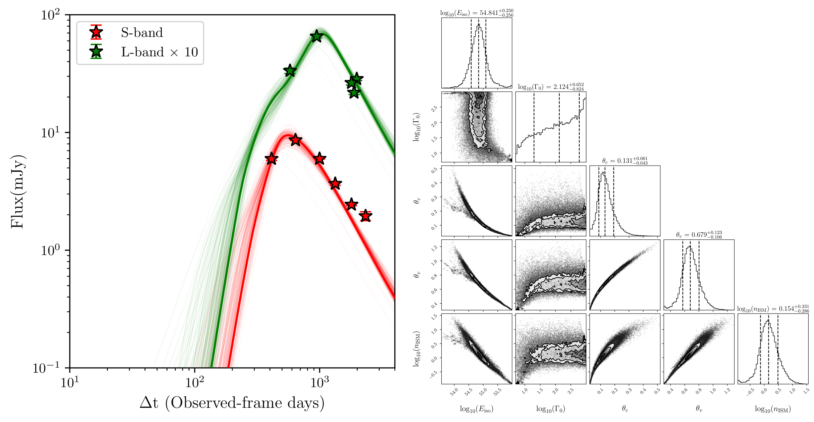
图注：Left: the results of modeling the S-band (3 GHz) and L-band ($\sim 1.3-1.7$ GHz in Table \ref{tab:table1}) data in the framework of radio afterglow emission from a jet interacting with surrounding medium. The colored lines represent model realizations: the light lines are based on 200 random samples from the MCMC chains, and the dark line represents the maximum likelihood. Right: Corner plots showing the posterior distributions of the afterglow model parameters.
对应解读：对应“建议重点查看的图表”第6项离轴喷流模型拟合或参数置信区间，以及“关键图表逐图导读”图5和“模型拟合”中关于视角约40度、能量/密度/微物理参数退化的讨论。
入选理由：这是候选图中唯一且高度核心的物理模型图：左 panel 直接展示 S-band 和 L-band 射电光变的离轴喷流余辉模型线是否能同时穿过多频数据，右 panel 给出 MCMC 后验角图，可用于判断观测视角、能量、外部介质和微物理参数的不确定度与退化。它直接支撑论文最关键的解释——晚期极亮射电峰来自离轴相对论喷流，而不仅是经验光变描述。
来源与置信度：\(arxiv_source\)；high；\(arxiv_source\) / \(v4_revised_ms_AT2019ijn.tex\):figure[5]
强相关工作
AT2019ijn 应与三类工作放在一起读。第一类是快速蓝色光学暂现源，特别是 AT2018cow、CSS161010、ZTF18abvkwla 等显示强射电或中心引擎迹象的事件；检索关键词可用 “fast blue optical transient radio luminous engine AT2018cow CSS161010”。这些事件帮助判断 AT2019ijn 的光学行为是否在 FBOT 连续谱内，以及它的射电是否真的超出已知 FBOT 范围。
第二类是喷流潮汐瓦解事件，原型包括 Swift J1644+57，并可扩展到离轴或弱正轴喷流 TDE 搜索；检索关键词可用 “jetted tidal disruption event off-axis radio Swift J1644+57 intermediate mass black hole”。这些工作给出相对论喷流射电迟峰、同步辐射建模和核区宿主判据，是理解本文离轴喷流解释的基础。
第三类是磁星驱动超亮超新星和引擎驱动外流模型；检索关键词可用 “magnetar powered fast blue optical transient radio outflow” 和 “engine driven supernova radio synchrotron”。这些模型是本文需要面对的主要替代解释。当前张力在于：磁星或极端超新星能否在不调用黑洞 TDE 的情况下，同时产生快速蓝色光学峰、核区位置和 \(640\) 天左右的极高射电峰值。
同一事件 / 同类源线索：
相似工作：
- https://arxiv.org/abs/1810.10720
- https://arxiv.org/abs/2003.01288
- https://ui.adsabs.harvard.edu/abs/2011Sci...333..203B/abstract
基础理论 / 方法工作：
- https://ui.adsabs.harvard.edu/abs/1988Natur.333..523R/abstract
- https://ui.adsabs.harvard.edu/abs/1979ApJ...232...34B/abstract
- https://ui.adsabs.harvard.edu/abs/1973ApJ...182L..85S/abstract
相反观点 / 张力线索：
（未提供）
6. GRACE: An Open-Source Framework for GPU-Accelerated Numerical Relativity
- 来源：arXiv / astro-ph.HE
- 链接：https://arxiv.org/abs/2607.09854v1
- 作者：Carlo Musolino, Christian Ecker, Konrad Topolski, Marie Cassing, Keneth Miler, Harry Ho-Yin Ng, Khalil Pierre, Elias R. Most
- 评分：novelty 8/10，importance 8/10，relevance 8/10，final 9.00/10
- 推荐理由：发布开源GPU加速数值相对论GRMHD框架GRACE，含AMR、约束输运和多类验证，覆盖黑洞、BNS并合等高能天体应用；方法可复用性和仪器/理论计算价值高。
中文题目：GRACE：一个面向 GPU 加速数值相对论的开源框架
做了什么：这篇论文发布并验证了数值相对论代码 GRACE：它从头实现、完全基于开源库，使用 Kokkos 获得跨 CPU/GPU 的性能可移植性，用 p4est 做自适应网格细化，并能自洽演化理想广义相对论磁流体力学与 \(Z4c\) 形式的爱因斯坦方程。作者用从平直时空磁流体测试、黑洞 Bondi 吸积、扰动 Kerr 黑洞振铃、中子星振荡，到双黑洞和双中子星并合的一系列标准问题验证代码，并报告了单设备吞吐量以及多种 CPU/GPU 架构上的强、弱标度性能。核心结论是：GRACE 已经达到可用于双致密星并合等高能天体物理问题的物理正确性和并行效率，并作为开源工具连同基础后处理环境 GRACEpy 发布。
为什么重要：双中子星并合、磁化中子星、黑洞吸积和引力波源建模越来越依赖三维广义相对论磁流体模拟，但这类模拟对 GPU、异构超算和自适应网格的要求很高。一个开源、可移植、带 \(Z4c\) 动力学时空与守恒磁场处理的框架，可以降低不同小组之间复现实验、比较波形、比较喷流形成机制和做参数扫描的门槛。
理论 / 观测 / 仪器方法价值：对理论工作者，GRACE 提供了一个可检查、可扩展的数值实验平台；对观测解释，尤其是引力波和电磁对应体建模，它有助于把数值误差、分辨率误差和代码差异纳入系统误差预算；对方法和仪器层面，它展示了 Kokkos 加 p4est 在数值相对论中的性能可移植路线，避免把代码长期锁死在某一种 GPU 编程模型或网格基础设施上。
为什么应该关注：如果你关心双中子星并合的物质效应、磁场放大、后并合频谱、短伽马暴中心引擎或多信使参数估计，这篇文章值得看，因为它不是只给一个新代码名字，而是展示了从基础测试到真实并合问题的完整验证链。它也提醒我们：未来限制并合模拟的不只是物理模型，还包括代码开放性、异构硬件适配、自适应网格和后处理生态。
展开详细解读：文章讲解、背景、理论、重点章节、图表与相关工作
文章详细讲解
科学问题：数值相对论已经是研究双黑洞、双中子星和黑洞—中子星系统的基础工具，但领域内长期存在两个实际瓶颈。第一，物理模型越来越复杂，需要同时演化动力学时空、相对论流体、强磁场和现实物态方程；第二，主流高性能计算平台正在转向 GPU 和异构架构，传统 CPU 中心代码如果不能有效移植，参数空间探索会受到严重限制。GRACE 试图解决的不是某一个具体天体源，而是构建一个面向下一代数值相对论应用的开源基础设施。
作者怎么做：论文介绍了一个从头开发的框架，核心选择是用 Kokkos 实现性能可移植，用 p4est 支持自适应网格细化。物理上，代码演化理想广义相对论磁流体力学，并通过受限输运保持磁场散度约束，同时把物质场与 \(Z4c\) 形式的爱因斯坦方程自洽耦合。测试覆盖面相当广：从平直时空下的磁化激波管和磁转子，到 Schwarzschild 黑洞上的磁化 Bondi 吸积；从扰动自旋 puncture 黑洞的振铃，到固定和动力学时空下的中子星振荡；再到双黑洞并合和两个双中子星并合算例。
关键结果：从摘要可见，GRACE 在这些标准测试中通过了物理验证，尤其是双中子星并合算例的 inspiral 动力学与 FIL 代码符合良好。两个并合测试分别代表较简单和较真实的极端：一个是等质量、无磁、理想气体物态方程系统；另一个是不等质量、磁化、有限温度表格式物态方程系统。这说明代码不仅能处理教科书测试，也能进入当前多信使天体物理真正关心的物理设置。性能方面，作者报告了单设备吞吐量以及多 GPU、多 CPU 架构上的强标度和弱标度，意图证明框架不只是可运行，而且适合现代超算生产任务。
局限和下一步：从摘要无法判断每个测试的误差阶、约束收敛、磁场散度误差、波形相位误差和 AMR 边界反射具体数值，因此读者需要在正文中仔细检查验证图和收敛表。GRACE 当前强调理想 GRMHD；对中微子输运、辐射磁流体、非理想电阻效应、核反应网络、亚网格湍流模型等，更可能是后续扩展方向。下一步最值得关注的是：它能否在多个独立小组中复现同一并合波形；能否与现有代码如 Einstein Toolkit、WhiskyTHC、GRChombo、SpEC/SpECTRE 或 FIL 做系统交叉验证；以及开源生态能否形成稳定的测试、文档和后处理工作流。
关键结果是怎么做出来的
本文最重要的证据链是“物理正确性验证 \(+\) 并合问题交叉比较 \(+\) 异构硬件性能标度”。样本不是天文观测样本，而是一组数值测试问题。它覆盖了局部 Riemann 问题、二维磁流体问题、黑洞背景吸积、动力学黑洞扰动、中子星本征振荡、双黑洞并合和双中子星并合。这样的测试矩阵很关键，因为数值相对论代码很容易在单个简单测试中表现良好，却在 AMR、强场、磁场约束或动力学时空耦合时暴露问题。
在流体和磁流体部分，应关注作者是否用标准解析解、半解析解或高分辨率参考解来比较。磁化激波管检验守恒格式对间断面的捕捉能力；磁转子测试磁张力、Alfvén 波和多维磁场结构；Bondi 吸积测试曲率背景下守恒变量、原始变量恢复和内边界处理。这里的“事件数”可以理解为测试问题数和每个问题的网格分辨率序列，而显著性不是观测统计显著性，主要体现为误差范数、收敛阶、约束违背量和与参考解的残差。
在强场动力学部分，扰动自旋黑洞振铃和双黑洞并合是对 \(Z4c\) 时空演化、规范条件、puncture 处理、波形抽取和约束阻尼的综合检验。关键应看准正规模频率是否与 Kerr 黑洞线性微扰理论一致，双黑洞波形的相位和振幅是否与已知基准相符，以及哈密顿量约束和动量约束是否随分辨率按预期下降。若论文给出 \(\psi_4\)、外推波形或辐射能角动量，读者应看不同提取半径和不同分辨率之间的系统差异。
双中子星并合是最能支撑论文应用价值的结果。摘要说作者演化了两个系统：等质量、无磁、理想气体物态方程，以及不等质量、磁化、有限温度表格式物态方程，并发现 inspiral 动力学与 FIL 代码符合良好。这里应重点检查正文中比较的是轨道相位、坐标分离、约束、重子质量守恒、最大密度、引力波相位，还是接触时间和并合后频谱。若只在 inspiral 阶段符合，而并合后差异较大，那可能反映数值耗散、物态方程插值、磁场处理或 AMR 策略差异。
统计或模型比较方面，代码论文通常不使用天文观测中的 \(p\)-value，而是用误差范数、收敛阶、残差曲线和墙钟时间标度来建立可信度。强标度图应显示固定问题规模下随设备数增加的加速比；弱标度图应显示每个设备负载近似固定时总效率是否保持。稳健性检验应包括不同分辨率、不同网格层级、不同硬件后端、不同边界位置和不同 AMR 触发准则。如果论文表格列出吞吐量，需确认比较是在同一物理问题、同一重构/通量算法和相同输出频率下完成，而不是混合了不同工作负载。
展开背景、理论、公式、模型、章节和图表导读
背景知识
研究对象不是一个单一天体源，而是数值相对论中的通用计算框架。数值相对论的任务是把爱因斯坦方程写成适合初值演化的形式，并与相对论流体、磁场、辐射或微物理耦合，用离散网格模拟强引力系统的非线性演化。双黑洞并合已经因 LIGO/Virgo/KAGRA 观测成为高精度波形建模的核心；双中子星并合则进一步引入核物质状态方程、磁场、中微子和喷流等复杂物理。
历史上，数值相对论经历了从“能否稳定演化黑洞”到“能否系统生成波形目录”的转变。\(3+1\) 分解、BSSN、广义谐和、moving puncture、约束阻尼等技术解决了长期稳定性问题。与此同时，GRMHD 代码发展出守恒格式、高分辨率激波捕捉、受限输运和原始变量恢复等技术，使磁化中子星并合和黑洞吸积盘模拟成为可能。GRACE 位于这两条技术路线的交汇处：动力学时空加理想 GRMHD。
为什么现在值得重新看？因为硬件环境变了。大规模超算越来越依赖 GPU 加速，单纯依赖 MPI 加 OpenMP 的传统 Fortran/C/C++ 代码很难充分利用异构节点。另一方面，数值相对论中常见的 AMR、复杂边界、守恒量更新和约束投影并不天然适合 GPU。Kokkos 这类性能可移植层试图让同一套源代码在 NVIDIA、AMD、Intel GPU 和多核 CPU 上运行；p4est 则提供森林四叉树/八叉树 AMR 基础设施。GRACE 的价值正是在这个转折点上把物理算法和硬件抽象结合起来。
该领域常见误区之一是把“代码能跑一个双中子星并合动画”误认为“代码已经物理可靠”。实际上，可靠性要看多个层次：守恒律、约束违背、收敛性、波形相位、磁场散度、物态方程处理、AMR 边界误差以及与其他独立代码的交叉验证。另一个误区是把 GPU 加速只理解为更快；对数值相对论来说，GPU 化还会改变数据布局、通信模式、负载均衡和输出策略，因此可能影响可维护性和可复现性。
基础理论 / 方法脉络
基础物理图像可以从 \(3+1\) 分解开始：把四维时空切成一系列空间超曲面，每一层上有空间度规、外曲率和物质场，时间推进由 lapse 和 shift 规定。数值相对论代码的核心任务，是在满足约束方程的初始数据上，稳定推进这些变量，并控制哈密顿量和动量约束的数值违背。\(Z4c\) 形式的目标是在演化系统中引入约束监测和阻尼变量，使约束违背不至于在长期演化中污染物理解。
GRMHD 部分的基础是理想磁流体近似，即流体共动系中电场为零，磁场冻结在流体中。相对论情形下，能动张量同时包含物质内能、压强、速度和磁场贡献。数值上通常演化守恒变量，例如质量密度、动量密度、能量密度和磁场分量，再通过非线性求解恢复原始变量，如密度、压强、三速度和温度。这个原始变量恢复在强磁化、低密度大气和有限温度表格式物态方程中尤其容易失败。
磁场处理的关键约束是 \(\nabla\cdot\mathbf{B}=0\)。如果离散误差让磁单极子积累，会产生非物理力并污染流体演化。受限输运方法通过在交错网格或等价离散形式中更新磁通，使离散散度在机器精度或很小误差内保持为零。对双中子星并合这类问题，磁场放大、剪切层、Kelvin-Helmholtz 不稳定和可能的喷流形成都对磁场散度控制高度敏感。
观测和数据分析连接在于引力波波形、并合后频谱、电磁对应体模型和核物态方程推断。代码本身不直接“观测”，但它产生的 \(h(t)\)、\(\psi_4\)、喷出物质量、盘质量、最大密度演化和频谱峰值会进入观测解释。常见退化包括数值分辨率与真实物理耗散的退化、物态方程与质量比的退化、磁场初始条件与后并合磁能增长的退化，以及规范坐标量与物理不变量之间的混淆。
公式与推导
第一步是把四维时空写成 \(3+1\) 形式：
这里 \(\alpha\) 是 lapse，\(\beta^i\) 是 shift，\(\gamma_{ij}\) 是空间三度规。这个分解把爱因斯坦方程转化为约束方程加演化方程，是 GRACE 这类代码推进动力学时空的基础。
第二步是定义外曲率：
其中 \(K_{ij}\) 描述空间切片如何嵌入四维时空，\(\mathcal{L}_{\boldsymbol{\beta}}\) 是沿 shift 的 Lie 导数。黑洞振铃、双黑洞轨道和双中子星潮汐变形都通过 \(\gamma_{ij}\) 与 \(K_{ij}\) 的演化体现。
第三步是约束方程。哈密顿量约束可写为
动量约束可写为
这里 \(R\) 是三维 Ricci 标量，\(D_j\) 是与 \(\gamma_{ij}\) 相容的协变导数，\(E\) 和 \(S^i\) 是 Eulerian 观测者测得的能量密度和动量密度。验证代码时，\(\mathcal{H}\) 与 \(\mathcal{M}^i\) 的范数应随分辨率下降或被阻尼控制。
第四步是物质守恒。GRMHD 的连续性方程是
能动量守恒是
其中 \(\rho\) 是静质量密度，\(u^\mu\) 是四速度，\(T^{\mu\nu}\) 包含流体和电磁场贡献。守恒格式离散这些方程，因而激波管、Bondi 吸积和中子星并合中的质量与能量误差是核心诊断量。
第五步是理想 GRMHD 的能动张量常用形式：
这里 \(h=1+\epsilon+p/\rho\) 是比焓，\(p\) 是压强，\(\epsilon\) 是比内能，\(b^\mu\) 是流体共动系磁场四矢量，\(b^2=b_\mu b^\mu\)。这个式子说明磁场不仅提供磁压，还提供各向异性张力。
第六步是磁场无散约束：
其中 \(B^i\) 是 Eulerian 磁场，\(\gamma=\det(\gamma_{ij})\)。受限输运的目标是在离散层面保持这个式子，而不是只在连续方程上满足它。
第七步是守恒型数值更新的抽象形式：
这里 \(\mathbf{U}\) 是守恒变量向量，\(\mathbf{F}^i\) 是数值通量，\(\mathbf{S}\) 是曲率、规范和源项贡献。高分辨率激波捕捉方法的关键是怎样在单元界面构造 \(\mathbf{F}^i\)，并在不产生非物理振荡的情况下解析间断。
第八步是收敛诊断。若某个可观测量 \(Q\) 的数值误差近似满足
则 \(p\) 是有效收敛阶，\(C\) 是问题相关常数。代码论文中的分辨率测试、约束范数和波形相位误差都可以用这个标度关系评估。
第九步是性能标度。固定总问题规模时强标度效率可写为
其中 \(T_1\) 是单设备耗时，\(T_N\) 是 \(N\) 个设备耗时。弱标度效率常写为
前者衡量并行加速，后者衡量每设备负载固定时通信、负载均衡和 AMR 开销是否随规模恶化。
模型拟合 / 应用方法
这篇文章不是传统观测拟合论文，但它仍然有“模型—数据—残差”的结构。这里的模型是离散化后的 Einstein-GRMHD 方程组、规范条件、重构与 Riemann 求解器、受限输运、AMR 策略和硬件并行执行模型；“数据”是解析解、半解析解、已知基准解、独立代码结果以及性能计时；残差则是误差范数、约束违背、波形相位差、守恒量漂移和吞吐量偏离理想标度。
参数估计在代码验证中表现为分辨率序列和算法选项扫描。读者应关注不同 \(\Delta x\)、不同 AMR 层级、不同重构阶数、不同 Courant 因子、不同边界位置下结果是否稳定。若误差随分辨率下降但波形相位仍有系统偏移，可能说明主导误差不是局部截断误差，而是 AMR 边界、规范选择、初始数据差异或原始变量恢复误差。
退化关系尤其重要。双中子星 inspiral 中，数值耗散会改变轨道相位，看起来类似潮汐效应或质量参数微小变化；并合后频谱中，分辨率不足可能移动主峰频率或抹平高频结构，看起来类似物态方程差异；磁化算例中，初始磁场拓扑、网格分辨率和数值电阻都会影响磁能增长，不能轻易把磁能演化差异解释为纯物理效应。
系统误差包括硬件相关和物理相关两类。硬件相关误差主要不是浮点舍入本身，而是不同后端的数据布局、并行归约顺序、AMR 负载均衡和通信隐藏策略导致的可重复性差异。物理相关误差包括大气处理、表格式物态方程插值、低密度磁化区的变量恢复失败、外边界反射和波形提取半径有限。实际应用中，GRACE 的输出如果要进入多信使参数推断，应把这些误差作为理论模板误差的一部分，而不是只给单条“最佳模拟”曲线。
重点章节 / 结果段落怎么读
第一，读“代码架构和数值方法”部分时，应重点看 GRACE 如何组织 Kokkos kernel、p4est AMR、守恒变量存储、ghost zone 通信和网格层级同步。这里决定了代码是否真的性能可移植，也决定了未来加入中微子输运或更复杂微物理的难度。
第二，读“Einstein 方程与 \(Z4c\) 演化”部分时，应检查规范条件、约束阻尼参数、puncture 处理、边界条件和波形抽取方法。对强场问题，漂亮的流体结果如果伴随较大的约束污染，物理可信度会下降。
第三，读“GRMHD 与受限输运”部分时，应关注守恒格式、通量计算、重构方法、原始变量恢复、低密度大气和磁场散度控制。磁化双中子星并合的可靠性很大程度上取决于这些看似技术性的细节。
第四，读“验证测试”部分时，建议按从简单到复杂的顺序看：激波管和磁转子检验局部 MHD；Bondi 吸积检验曲率背景；黑洞振铃和双黑洞检验动力学时空；中子星振荡和双中子星并合检验物质耦合。每一类测试都应寻找误差范数、收敛阶和与基准解的比较。
第五，读“性能结果”部分时，不要只看最高吞吐量数字。应看问题规模、每个 GPU 的网格单元数、AMR 层级、通信比例、输出频率、强标度饱和点和弱标度效率。不同硬件之间只有在工作负载和算法设置一致时才有可比性。
建议重点查看的图表
-
代码架构或数据流图：看 Kokkos、p4est、GRMHD 模块、\(Z4c\) 模块和后处理 GRACEpy 如何连接，尤其注意 AMR 与 GPU kernel 的边界。
-
激波管与磁转子测试图：看密度、压强、速度和磁场剖面是否与参考解重合；间断面附近是否有过冲；二维磁转子是否保持对称性。
-
Bondi 吸积测试图：看径向密度、速度、磁场或质量吸积率剖面；重点检查黑洞附近和网格细化边界处的残差。
-
黑洞振铃或双黑洞波形图：看 \(\psi_4\) 或 \(h(t)\) 的相位、振幅、准正规模频率，以及不同分辨率之间的相位差。
-
中子星振荡频谱图：看基频和泛音位置是否与线性扰动理论或参考代码一致；注意谱峰宽度可能反映数值耗散。
-
双中子星并合比较图：看轨道相位、重心分离、最大密度、引力波频率和并合时间与 FIL 的差异；尤其注意接触前后差异是否突然增大。
-
强标度和弱标度性能图：看加速比是否接近理想线，在哪个设备数开始饱和；弱标度中效率下降是否由通信、AMR 负载不均或 I/O 造成。
-
约束和磁场散度诊断表：看 \(\mathcal{H}\)、\(\mathcal{M}^i\) 和 \(\nabla\cdot\mathbf{B}\) 的范数随时间和分辨率的变化。
关键图表逐图导读
图 1：如果论文给出框架结构图，横向通常是物理模块和软件依赖，纵向可能是从网格、演化器到输出的工作流。读图时不要只看模块名称，而要看数据在 AMR 层级、GPU 内存和 CPU 端后处理之间如何移动。陷阱是架构图往往不显示通信成本和同步点，而这些正是强标度效率下降的来源。
图 2：流体或磁流体标准测试图一般以空间坐标为横轴，以 \(\rho\)、\(p\)、速度分量或 \(B^i\) 为纵轴，数据点为 GRACE 结果，实线为解析解或参考解。主要结论应是间断捕捉正确、振荡受控、磁结构合理。读图陷阱是视觉重合不等于收敛，需要配合误差范数或多分辨率曲线。
图 3：Bondi 吸积图通常显示径向剖面或相对误差，横轴为半径，纵轴为密度、径向速度、吸积率或磁场相关量。关键看黑洞附近、声点附近和 AMR 边界附近是否出现系统偏差。若误差在某一半径有尖峰，可能是坐标、边界或网格细化接口造成，而非物理吸积解本身。
图 4：黑洞振铃或双黑洞并合波形图通常横轴为 retarded time，纵轴为 \(\psi_4\)、\(h_+\) 或相位差。模型线可能来自参考代码或理论准正规模。关键结论是频率和阻尼时间是否正确、相位误差是否随分辨率收敛。读图陷阱是不同提取半径和时间对齐方法会显著影响相位差。
图 5：中子星振荡频谱图通常横轴为频率，纵轴为傅里叶功率或谱幅。关键看 \(f\)-mode 和可能的泛音峰是否落在预期频率，固定时空和动力学时空的差异是否合理。陷阱是有限演化时间会导致谱峰变宽，数值耗散会压低高频峰。
图 6：双中子星并合比较图可能横轴为时间，纵轴为轨道相位、引力波频率、最大密度或波形实部，GRACE 与 FIL 用不同颜色表示。应看 inspiral 阶段是否相位一致、接触时间是否一致、并合后是否分叉。陷阱是坐标分离不是规范不变量，最好用引力波相位或频率辅助判断。
图 7：性能标度图横轴为设备数，纵轴为加速比、效率或每秒更新单元数，常有理想线作为参考。关键看强标度何时偏离线性、弱标度效率是否随规模保持。陷阱是不同硬件的峰值吞吐量不能直接说明代码优劣，必须结合问题大小、内存带宽、通信拓扑和 AMR 负载均衡。
论文原图 / 可嵌入图片
Fig10
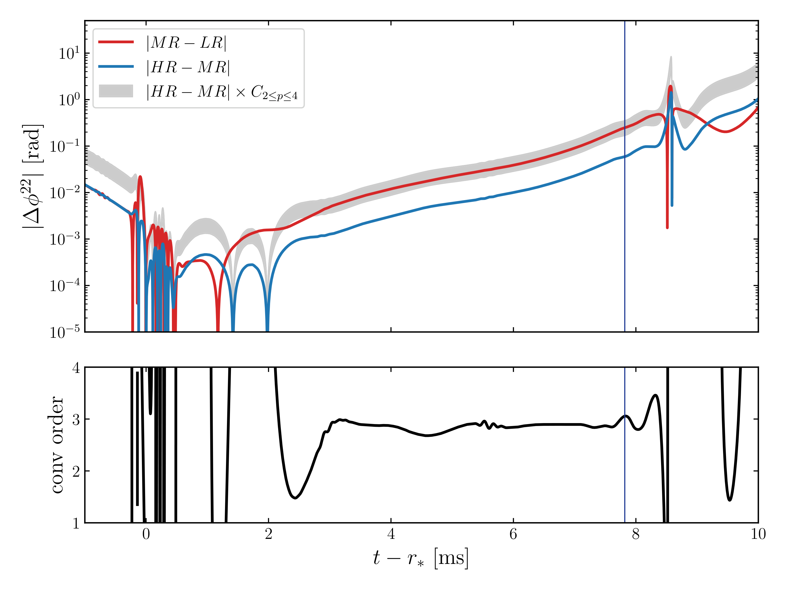
图注：Self-convergence of the GW phase for the unmagnetized $\Gamma=2$ equal-mass BNS inspiral as a function of retarded time; the vertical line marks the merger time. \(\textit{Top:}\) the red and blue curves are the pairwise differences $|\Delta\phi^{22}_{\rm MR-LR}|$ and $|\Delta\phi^{22}_{\rm HR-MR}|$; the gray band shows $|\Delta\phi^{22}_{\rm HR-MR}|$ rescaled by the self-convergence factor $C_p$ [Eq.~\(\eqref{eq:conv_order}\)] for $p\in[2,4]$. The coarser-pair difference remains within the band throughout the inspiral, near the $p\simeq2.8$ locus; the post-merger breakdown is expected~\(\cite{PhysRevD.85.104030}.\) \(\textit{Bottom:}\) pointwise convergence order obtained by solving Eq.~\(\eqref{eq:conv_order}\) for $p$ at each time, which remains roughly constant during the inspiral.
对应解读：对应“建议重点查看的图表”第6项双中子星并合比较图，以及“模型拟合”中关于分辨率序列、波形相位残差和收敛阶的讨论。
入选理由：这是候选图中最直接量化双中子星 inspiral 数值可靠性的图：给出不同分辨率之间的引力波相位差、自收敛因子区间以及逐时刻收敛阶，正好支撑日报中关于接触前相位是否一致、并合后收敛为何失效、数值耗散如何伪装成物理效应的解读。
来源与置信度：\(arxiv_source\)；high；\(arxiv_source\) / main.tex:figure[10]
Fig09
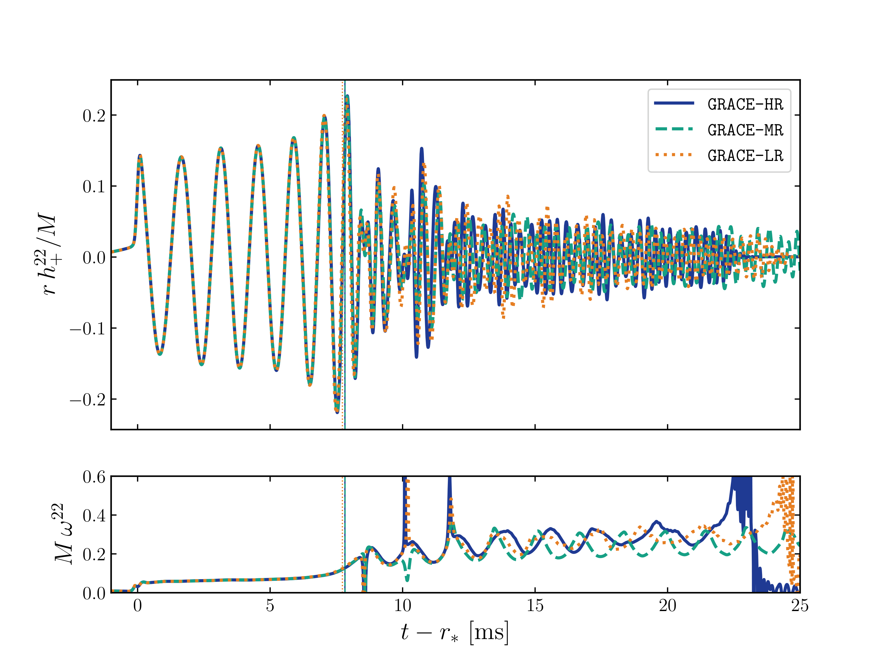
图注：Gravitational-wave signal from the unmagnetized $\Gamma=2$ equal-mass BNS inspiral, extracted at $R_{\rm GW}=500\,M_\odot$. \(\textit{Top}\): real part of the $\ell=m=2$ strain mode, $r h_+^{22}/M$, as a function of retarded time, for the three resolutions LR, MR and HR. \(\textit{Bottom}\): corresponding instantaneous angular frequency $M\omega^{22}=M\dot{\phi}^{22}$. The vertical line marks the merger time at $t_{\rm mer}\simeq 7.8\,\mathrm{ms}$. The three resolutions are visually indistinguishable throughout the inspiral, but start to disagree after merger, as expected.
对应解读：对应“建议重点查看的图表”第6项双中子星并合比较图，以及“关键图表逐图导读”图6关于波形、频率和并合时间的说明。
入选理由：该图展示等质量无磁双中子星的主导引力波 strain 与瞬时角频率，并标出并合时刻；三种分辨率在 inspiral 阶段几乎重合、并合后开始分叉，正是日报强调的接触前后差异是否突然增大的核心诊断。
来源与置信度：\(arxiv_source\)；high；\(arxiv_source\) / main.tex:figure[9]
Fig08
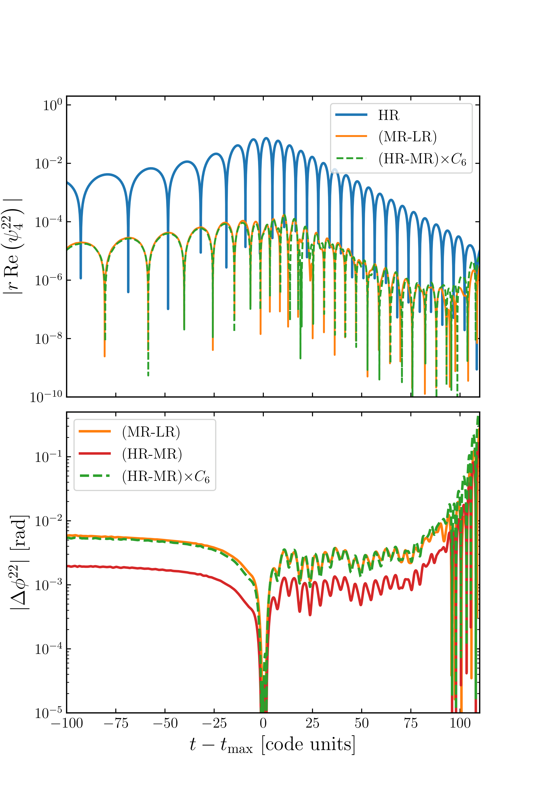
图注：\(\textit{Top:}\) Absolute value of the real part of the $\ell=m=2$ mode of $\Psi_4$, extracted at $r=R_{\rm GW}=100$, for the binary puncture simulation. The blue curve shows the high-resolution signal, the orange curve the medium--low resolution difference, and the green dashed curve shows the medium-to-high-resolution difference rescaled assuming sixth-order convergence. \(\textit{Bottom:}\) Absolute GW phase differences: medium--low in orange, high--medium in red, and the rescaled medium-to-high-resolution difference in dashed green.
对应解读：对应“建议重点查看的图表”第4项黑洞振铃或双黑洞波形图，以及“关键图表逐图导读”图4关于相位差和分辨率收敛的说明。
入选理由：该图同时给出双黑洞主导 Weyl 标量波形、不同分辨率差值以及按六阶收敛重标定后的相位差，是验证 GRACE 在纯引力动力学中波形精度和收敛性的关键证据，比单纯网格快照更能支撑科学结论。
来源与置信度：\(arxiv_source\)；high；\(arxiv_source\) / main.tex:figure[8]
Fig05
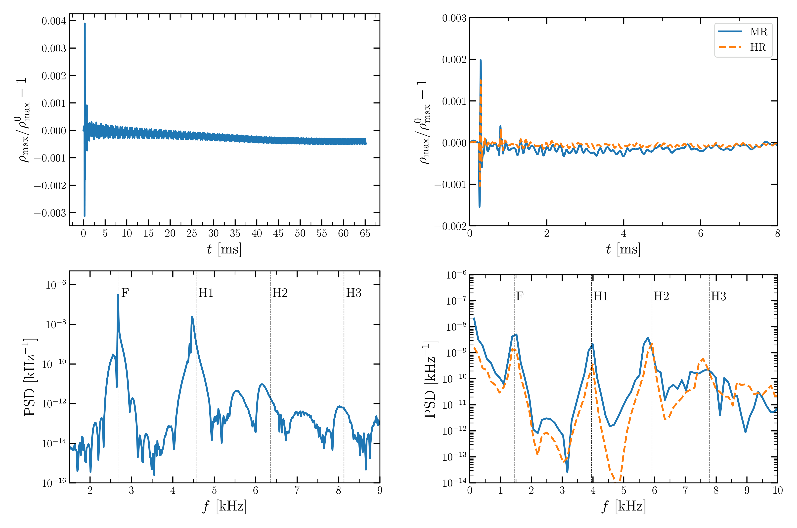
图注：Central-density oscillations in the TOV test (top panels) and their Fourier transform (bottom panels), where vertical lines indicate the fundamental mode and the first three overtones obtained from perturbation theory~\(\cite{Font:2001ew}.\) \(\textit{Left}\): fixed-metric evolution in the Cowling approximation. \(\textit{Right}\): evolution of the fully backreacted Z4c system.
对应解读：对应“建议重点查看的图表”第5项中子星振荡频谱图，以及“关键图表逐图导读”图5关于 f-mode 和泛音峰的说明。
入选理由：该图把 TOV 中心密度振荡与傅里叶频谱放在一起，并用垂直线标出线性扰动理论给出的基频和前三个泛音，能够直接检验固定时空和完整 Z4c 动力学时空下的中子星振荡频率是否正确。
来源与置信度：\(arxiv_source\)；high；\(arxiv_source\) / main.tex:figure[5]
Fig03
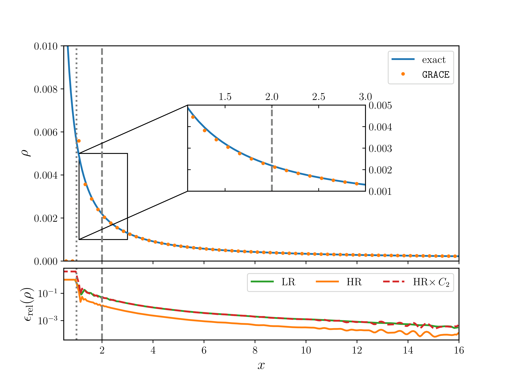
图注：\(\textit{Top:}\) Comparison of numerical and fiducial solutions for the rest-mass density of the fluid in the Bondi test at $t_{\rm final}\simeq 10\,t_{\rm acc}$. \(\textit{Bottom:}\) Convergence of the relative error on the density between low and high-resolution runs. In both panels the vertical dashed line indicates the location of the BH horizon, whereas the dotted line shows the boundary of the interior excision region.
对应解读：对应“建议重点查看的图表”第3项 Bondi 吸积测试图，以及“关键图表逐图导读”图3关于径向剖面、黑洞附近误差和收敛的说明。
入选理由：该图包含 Bondi 吸积密度的数值解与基准解比较，并在下方面板给出低、高分辨率相对误差收敛；同时标出黑洞视界和内部 excision 边界，正好用于检查日报强调的黑洞附近和网格/边界相关系统偏差。
来源与置信度：\(arxiv_source\)；high；\(arxiv_source\) / main.tex:figure[3]
Fig06
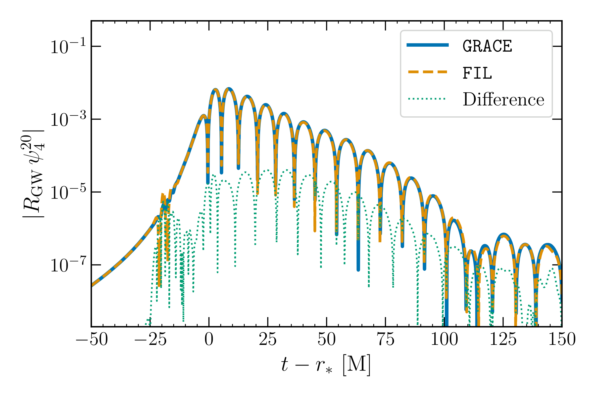
图注：Absolute value of the real part of the dominant ($\ell=2, m=0$) mode of the Weyl scalar $\Psi_4$ in the spinning puncture test extracted on a 2-sphere of radius $R_{\rm GW}=60\, M$. The solution obtained by \GRACE\ is compared to that of the \(\texttt{FIL}\)~code on a comparable grid structure. The difference of the results obtained by both codes is also shown as a green dotted line, highlighting the good agreement between them.
对应解读：对应“建议重点查看的图表”第4项黑洞振铃图，以及“模型拟合”中独立代码结果与残差比较的讨论。
入选理由：该图给出扰动自旋 puncture 黑洞的主导 Weyl 标量 Ψ4，并直接与 FIL 代码结果比较，还画出两者差值；这种独立代码交叉验证和残差曲线比仅展示单条波形更能说明 GRACE 的黑洞振铃实现是否可信。
来源与置信度：\(arxiv_source\)；high；\(arxiv_source\) / main.tex:figure[6]
强相关工作
这篇工作应放在“数值相对论开源框架”和“GPU/性能可移植 GRMHD”两条文献脉络中看。同类代码包括 Einstein Toolkit/Carpet 生态、GRChombo、WhiskyTHC、IllinoisGRMHD、SpEC/SpECTRE、AthenaK 或 HARM 类 GRMHD 代码等。检索关键词可用“numerical relativity open source GRMHD code GPU Kokkos AMR”、“Z4c formulation binary neutron star merger”、“constrained transport general relativistic magnetohydrodynamics”。
从相反观点或潜在张力看，性能可移植框架的代价是抽象层复杂、调优不一定达到手写 CUDA/HIP 的峰值，并且 AMR 加 GPU 的负载均衡很难。另一个张力是物理复杂性与代码验证之间的平衡：加入有限温度物态方程、磁场和未来中微子输运后，单元测试通过并不自动保证并合后喷出物和电磁对应体预测可靠。读者应把 GRACE 与现有独立代码的波形、约束和守恒误差比较作为后续关注点，而不是只关注发布声明。
同一事件 / 同类源线索：
相似工作：
- https://einsteintoolkit.org/
- https://github.com/GRChombo/GRChombo
- https://spectre-code.org/
- https://github.com/UIUC-PPL/GRMHD
基础理论 / 方法工作：
- https://github.com/kokkos/kokkos
- https://www.p4est.org/
- https://arxiv.org/abs/gr-qc/9810065
- https://arxiv.org/abs/gr-qc/0605030
相反观点 / 张力线索：
（未提供）
7. Low-hard to high-soft spectral state transitions in the faintest early-X-ray-detected optical tidal disruption event TDE 2025aarm
- 来源：arXiv / astro-ph.HE
- 链接：https://arxiv.org/abs/2607.09850v1
- 作者：Pietro Baldini, Arne Rau, Andrea Merloni, Jean Somalwar, Seán J. Brennan, Elias Kyritsis, Hannah C. I. Wichern, Peter Boorman
- 评分：novelty 8/10，importance 8/10，relevance 8/10，final 9.00/10
- 推荐理由：近距离TDE 2025aarm的深度X射线监测发现热TDE中罕见的低硬到高软状态转变，并达到极低早期X射线光度，直接影响TDE吸积物理和X射线随访选择效应理解。
中文题目：最暗早期 X 射线潮汐瓦解事件 TDE 2025aarm 中的低硬态到高软态光谱转变
做了什么：这篇文章报告了近邻潮汐瓦解事件 TDE 2025aarm 的半年密集 X 射线监测和光学光谱跟进。它在光学峰附近只有约 \(7\times10^{39}\,{\rm erg\,s^{-1}}\) 的 \(0.2\)--\(10\,{\rm keV}\) X 射线光度，是目前早期就被探测到的最暗 X 射线 TDE；随后约四个月内增亮近两个数量级，到达约 \(5\times10^{41}\,{\rm erg\,s^{-1}}\)。作者发现其 X 射线谱从早期硬的幂律主导状态，随光度升高转为较软的盘主导状态，晚期又重新变硬，类似黑洞 X 射线双星中的低硬态到高软态演化。这说明热 TDE 的 X 射线“有无”和“软硬”可能强烈受观测深度、时标和吸积几何共同控制，而不只是源本身分成两类。
为什么重要：TDE 2025aarm 把 TDE 的早期 X 射线探测下限推到 \(10^{40}\,{\rm erg\,s^{-1}}\) 以下，并且首次在热 TDE 中给出类似 X 射线双星的低硬态到高软态转变证据。这个结果直接挑战过去把 TDE 简单分成 X 射线亮和 X 射线暗两族的做法，也为跨越恒星级黑洞到 \(10^{5}\)--\(10^{7}\,M_\odot\) 超大质量黑洞的吸积态统一图像提供了新样本。
理论 / 观测 / 仪器方法价值：观测上，它展示了深、密、持续数月的 X 射线跟踪可以揭示传统浅曝光会漏掉的低光度阶段；方法上，它用时变谱拟合把盘成分和康普顿化成分的相对贡献分开；理论上，它把 TDE 吸积盘、冕区和可能的再处理层演化与 XRB 状态转变语言连接起来。对未来 eROSITA、Einstein Probe、Swift、XMM-Newton、Chandra 和 Rubin 时代的 TDE 筛选与随访策略都有实际参考价值。
为什么应该关注：如果你关心黑洞吸积是否具有质量尺度无关性，这个事件是少数能在超大质量黑洞上看到“状态转变”痕迹的 TDE。如果你做 TDE 统计，它提醒你 X 射线未探测不等于 X 射线缺失，浅曝光和短随访会系统性改变样本分类。如果你做多波段瞬变随访，TDE 2025aarm 是一个很具体的案例：早期很暗并不代表后续不值得继续盯，真正的 X 射线峰可能滞后光学峰数月。
展开详细解读：文章讲解、背景、理论、重点章节、图表与相关工作
文章详细讲解
科学问题：TDE 的光学峰和 X 射线峰为什么常常不同步？为什么有些光学 TDE 在 X 射线中明亮，有些却长期未探测？过去常见解释包括视角遮挡、再处理层吸收、吸积盘形成延迟、外流包层、以及黑洞质量和穿透因子导致的回落率差异。TDE 2025aarm 的特殊性在于它很近，因此即使早期 X 射线光度低到 \(\sim7\times10^{39}\,{\rm erg\,s^{-1}}\)，仍能被深曝光监测捕捉到。这使它成为检验“X 射线暗 TDE 是否只是观测选择效应”的关键样本。
作者怎么做：论文结合了持续约六个月的 X 射线监测和 HET/LRS2 光学光谱随访。X 射线部分重点不是只报一个光变曲线，而是做分时段谱分析，比较幂律、热盘以及盘加康普顿化成分的贡献随时间如何变化。光学部分用于确认 TDE 分类，检查宽发射线和 Bowen 荧光特征，尤其是 \({\rm N\,III}\) Bowen 线，这些线有助于把它与普通活动星系核耀发或超新星区分开。
关键结果：TDE 2025aarm 在光学峰附近 X 射线极暗，但之后近两个数量级增亮，在光学峰后约四个月达到 \(0.2\)--\(10\,{\rm keV}\) 光度 \(\sim5\times10^{41}\,{\rm erg\,s^{-1}}\)。更重要的是，谱形并非单调冷却或单调变软：早期以硬的幂律成分为主，光度升高时热盘成分占优并进入软状态，晚期又出现硬化。作者把这种演化解释为盘和冕区相对强度变化，定性类似黑洞 X 射线双星中从低硬态到高软态再回硬的状态循环。
局限和下一步：该事件仍是单个 TDE，不能单独证明所有热 TDE 都经历类似状态转变。TDE 的吸积几何比 XRB 更复杂，可能有厚外流、再处理层、非轴对称碎片流和视角效应，简单的盘加冕模型未必唯一。下一步需要用更多近邻、低光度、早期深随访 TDE 建立样本，比较 X 射线峰相对光学峰的滞后分布、谱硬度-光度轨迹、以及光学 Bowen 线与 X 射线演化之间是否存在系统关联。
关键结果是怎么做出来的
样本和数据链条很清楚：本文聚焦单一近邻事件 TDE 2025aarm，但利用其距离优势和高强度 X 射线随访，把通常落在探测阈值以下的早期阶段纳入分析。关键样本不是许多 TDE 的横向统计，而是一个事件的高时间采样纵向演化。作者报告的早期 \(0.2\)--\(10\,{\rm keV}\) 光度约为 \(7\times10^{39}\,{\rm erg\,s^{-1}}\)，这是“早期已被 X 射线探测到”的 TDE 中最低的一端；这个数值本身依赖距离、吸收校正、谱模型和仪器响应，因此读者应检查光度表、曝光时间和谱拟合误差。
最核心的证据是 X 射线光变与谱演化的同步展示。光变曲线显示源在首次 X 射线探测之后继续增强，峰值在光学峰后约四个月，峰值光度约 \(5\times10^{41}\,{\rm erg\,s^{-1}}\)。这个滞后排除了“光学峰附近未见强 X 射线就代表没有盘发射”的简单判断，也说明短期随访会错过 X 射线最亮阶段。若论文给出分 bin 的计数率、通量和未吸收光度，重点应看早期低信噪谱点是否仍有稳定的正探测，以及后期增亮是否由单个异常观测驱动。
谱态转变的证据来自时变谱拟合和硬度演化。作者比较硬幂律主导、热盘主导、以及二者组合的模型，发现早期硬成分相对强，随光度升高软热成分增强，晚期再硬化。统计上应关注每个时间段的 \(\chi^2\)、C-stat、后验区间或信息准则差异，以及增加盘成分或康普顿化成分后是否只是过拟合低计数数据。硬度-光度图或类似的谱参数随时间图，是支持“状态转变”而不只是通量变化的关键图。
光学光谱提供分类稳健性。HET/LRS2 光谱确认该源具有 TDE 特征，并出现 \({\rm N\,III}\) Bowen 荧光线。Bowen 线需要高能 EUV/X 射线光子驱动级联过程，因此它与 X 射线弱探测并不矛盾：我们观测到的软 X 射线可能受几何、吸收或能带限制影响，而再处理气体可感受到更强的电离连续谱。读者应看线宽、线强随时间变化、宿主星系扣除和 AGN 窄线污染处理。
主要系统误差包括：银河和宿主吸收柱密度 \(N_{\rm H}\) 与软 X 射线温度的退化；低计数谱中幂律斜率与热盘温度的退化；不同仪器交叉定标；源区背景选择；以及将 \(0.2\)--\(10\,{\rm keV}\) 带限光度外推为物理吸积光度时的不确定性。稳健性检验应包括替代谱模型、不同时间 bin、固定或释放 \(N_{\rm H}\)、以及排除低信噪观测后状态轨迹是否仍存在。
展开背景、理论、公式、模型、章节和图表导读
背景知识
潮汐瓦解事件发生在恒星接近超大质量黑洞时，潮汐力超过恒星自引力，恒星被拉伸、撕裂，部分碎片被抛出，部分碎片回落并可能形成吸积流。经典预期中，回落率在峰后近似按 \(t^{-5/3}\) 衰减，但实际光变常因盘形成、外流、再处理和观测能带而偏离这一简单规律。
过去十多年，光学/紫外巡天发现了大量热 TDE，但它们的 X 射线性质非常不统一。有些源如 ASASSN-14li 早期就有明亮软 X 射线；有些光学 TDE 几乎没有 X 射线探测；还有一些源在光学峰后很久才变得 X 射线明亮。这个多样性曾被解释为内禀差异，也可能只是因为 X 射线随访不够深、不够早或不够久。
TDE 2025aarm 值得重新看，是因为它近、暗、且被密集跟踪。近邻源让低光度 X 射线阶段可探测，暗阶段又正好检验以前漏掉的参数空间。若同一个 TDE 在早期低硬态、随后高软态、晚期再硬化，那么 TDE 的 X 射线分类就不能只用单次观测决定，而必须放在时间演化轨道上理解。
该领域常见误区之一是把“X 射线未探测”直接等同于“没有内盘”或“没有吸积”。事实上，软 X 射线容易被中性或低电离气体吸收，也可能被再处理到 UV/光学，或者源在观测时尚未进入 X 射线亮阶段。另一个误区是把 XRB 状态名词机械搬到 TDE。XRB 的盘尺度、外盘供给和质量比与 TDE 完全不同，因此相似的低硬态/高软态语言应理解为谱成分和光度轨迹的类比，而不是一一对应的物理机制已经被证明。
基础理论 / 方法脉络
基本物理图像是：恒星碎片回落为黑洞提供随时间变化的质量供给，若能圆化并耗散角动量，就会形成吸积盘。盘的内区产生热辐射，特征温度随黑洞质量和吸积率变化；在盘上方或内流区，热电子可把低能光子逆康普顿散射到 X 射线能段，形成近似幂律的硬谱成分。
在 TDE 中，观测到的光学/UV 光通常不一定是盘本身的瑞利-金斯尾，也可能是高能辐射被外层碎片、风或包层再处理后的结果。因此光学峰和 X 射线峰不同步并不奇怪：光学可在外层再处理区迅速变亮，而 X 射线可能要等到内盘显露、吸收降低或冕区改变后才增强。
本文的谱解释可抽象为两个成分的竞争：一个是软的多温黑体盘成分，另一个是硬的幂律或康普顿化成分。低硬态意味着带限 X 射线中硬成分占比较高，通常对应相对弱的冷盘或较强的热电子散射；高软态意味着热盘成分增强并主导软 X 射线。晚期重新硬化可能对应吸积率下降后盘变弱、热内流或冕区相对增强。
观测上，真正拟合的是探测器记录的能谱计数，而不是直接的物理光度。模型光子谱要经过银河/宿主吸收和仪器响应矩阵，得到每个能道的预期计数，再用 Poisson 似然或 \(\chi^2\) 类统计量与数据比较。低计数早期谱尤其要注意 C-stat 的使用、背景处理和分箱策略。
常见退化包括：吸收柱密度 \(N_{\rm H}\) 增大可让软谱看起来更硬；盘温度 \(T_{\rm in}\) 与归一化共同决定软 X 射线通量；幂律光子指数 \(\Gamma\) 与热盘高能尾在有限能带内可能互相替代；距离误差、宿主污染和仪器交叉定标会进入光度和状态轨迹解释。
公式与推导
从潮汐瓦解的尺度开始。恒星半径 \(R_\star\)、质量 \(M_\star\)，黑洞质量 \(M_{\rm BH}\) 时，潮汐半径近似为
这里 \(r_{\rm t}\) 是恒星自引力与黑洞潮汐力相当的位置。只有当 \(r_{\rm t}\) 位于事件视界外且轨道足够深入时，才能产生可见 TDE。
碎片获得能量展宽 \(\Delta\epsilon\)，最束缚碎片的回落时间给出光变时标。常用近似是
这个式子说明为什么 TDE 的 X 射线和光学演化可持续数月；TDE 2025aarm 的 X 射线峰滞后光学峰约四个月，与回落、圆化和吸收演化时标在量级上可相容。
经典回落率写作
其中 \(\dot M_{\rm fb}\) 是回到近黑洞区域的质量供应率。它不是直接观测到的 X 射线光度，因为从回落到辐射还需要圆化、吸积、外流和再处理。
若一部分质量以效率 \(\eta\) 转为辐射，玻尔ometric 光度可写为
这里 \(\dot M\) 是实际通过内盘的吸积率，不一定等于 \(\dot M_{\rm fb}\)。TDE 2025aarm 的带限 \(0.2\)--\(10\,{\rm keV}\) 光度从 \(\sim7\times10^{39}\) 到 \(\sim5\times10^{41}\,{\rm erg\,s^{-1}}\)，只是 \(L_{\rm bol}\) 的一部分。
与爱丁顿尺度比较时使用
若黑洞质量在典型 TDE 范围内，本文报告的 X 射线带限光度是亚爱丁顿的，但玻尔ometric 修正和被遮挡 EUV 成分可能显著改变真实吸积状态判断。
薄盘的局部有效温度满足
这里 \(R_{\rm in}\) 是内盘半径，\(\sigma\) 是 Stefan-Boltzmann 常数。对 \(10^6M_\odot\) 量级黑洞，内盘热峰常在 EUV/软 X 射线，正是吸收和仪器能带最敏感的区域。
硬成分可用幂律近似：
其中 \(N(E)\) 是单位能量光子数谱，\(K\) 是归一化，\(\Gamma\) 是光子指数。较小的 \(\Gamma\) 表示较硬的谱；本文所谓早期低硬态，核心就是带限谱中类似该成分的贡献较强。
吸收会改变观测谱：
这里 \(F_{\rm int}(E)\) 是内禀能谱，\(N_{\rm H}\) 是氢柱密度，\(\sigma_{\rm pe}(E)\) 是光电吸收截面。由于 \(\sigma_{\rm pe}(E)\) 在软 X 射线很大，少量吸收就能让热盘看起来变暗或变硬。
仪器看到的是计数：
这里 \(\mu_i\) 是第 \(i\) 个能道的期望计数，\(t_{\rm exp}\) 是曝光时间，\(R_i(E)\) 是能量响应，\(A_{\rm eff}(E)\) 是有效面积，\(b_i\) 是背景计数。谱态结论最终来自 \(\mu_i\) 与观测计数的比较。
低计数谱常用 Poisson 似然或 C-stat：
其中 \(n_i\) 是观测计数。比较盘模型、幂律模型和复合模型时，读者应检查 \(C\) 的改善是否足以抵消新增参数，并确认硬到软的变化不是背景或吸收退化造成的。
模型拟合 / 应用方法
这类分析的直接拟合量是各时段 X 射线能道计数。作者需要为每个观测或合并时间段建立谱模型，通常包括银河吸收、可能的宿主吸收、热盘成分和幂律/康普顿化成分。输出参数包括未吸收通量、带限光度、盘温度、盘归一化、幂律光子指数 \(\Gamma\)、各成分通量占比以及硬度比。
统计上，低计数阶段应优先使用 Poisson 似然或 C-stat，而不是要求高斯误差的传统 \(\chi^2\)。如果谱被分箱到每 bin 足够计数，\(\chi^2\) 可作为诊断；但本文最关键的早期暗阶段很可能处在低计数 regime，因此背景建模、源区选择和响应文件生成对结果影响很大。模型比较不能只看拟合曲线“像不像”，还要看新增成分是否被统计显著需要。
主要退化是吸收-温度-幂律斜率退化。增加 \(N_{\rm H}\) 会压低软端，使一个本来软的盘谱看起来像硬谱；降低盘温度会把热峰移出观测能带；改变 \(\Gamma\) 可补偿盘高能尾。解决办法通常是固定银河 \(N_{\rm H}\)、测试不同宿主吸收假设、联合拟合多个时段但允许成分归一化变化、并用硬度比和独立光变趋势作为交叉检查。
残差阅读很重要。若单幂律模型在软能段有系统正残差，说明可能需要热盘；若单盘模型在高能端有正残差，说明有硬尾或康普顿化成分；若残差集中在仪器边缘或背景强线附近，则可能不是天体物理信号。对 TDE 2025aarm，真正支持状态转变的不是某一个时段的最佳模型，而是多个时段中成分占比随光度连续变化的轨迹。
模型可能失败的地方也要明确。TDE 的外流和再处理层可产生复杂吸收、部分覆盖和散射，简单的中性吸收乘以盘加幂律未必物理唯一。若存在离子化吸收或反射，带限连续谱拟合可能把这些复杂性错误解释为 \(\Gamma\) 或 \(T_{\rm in}\) 变化。未来更高信噪的 XMM-Newton 或 Chandra 谱、UV 同步数据和时间分辨光谱线诊断，会帮助区分冕区演化与吸收几何演化。
重点章节 / 结果段落怎么读
数据/样本部分应先看事件发现、宿主距离、光学峰时间定义和 X 射线观测日志。因为“最暗早期 X 射线探测”这一结论依赖距离、峰时和曝光深度，读者要确认光学峰附近的 X 射线观测不是事后稀疏采样或边缘探测。
X 射线光变部分是第二个重点。这里应检查 \(0.2\)--\(10\,{\rm keV}\) 计数率、通量和光度随时间的变化，尤其是从 \(\sim7\times10^{39}\) 到 \(\sim5\times10^{41}\,{\rm erg\,s^{-1}}\) 的增亮是否由多次观测连续支持，以及峰值相对光学峰约四个月滞后如何定义。
时变谱分析部分是全文核心。读者应关注作者如何分时间段、每段计数是否足够、采用哪些模型、哪些参数固定、拟合统计量如何变化。盘主导与幂律主导的判断，应优先看成分通量比例和置信区间，而不是只看最佳拟合曲线。
光学光谱部分用于确认 TDE 物理环境。重点看 HET/LRS2 光谱中的宽线、He/H 特征、\({\rm N\,III}\) Bowen 荧光线，以及宿主星系扣除。Bowen 线的存在为高能电离辐射提供间接证据，也与 X 射线能带观测到的弱亮度形成有意思的互补。
讨论和稳健性部分要看作者如何处理选择效应和与 XRB 类比的边界。一个近邻暗 TDE 被深随访探测到，并不自动说明所有 X 射线暗 TDE 都会变亮；但它强烈说明传统样本受曝光深度、cadence 和随访时长影响。读者应看作者是否与已有 TDE 的上限、探测深度和峰后观测时间做了公平比较。
建议重点查看的图表
-
多波段光变图：看光学峰时间、X 射线首次探测、X 射线峰值相对光学峰的滞后，以及早期低光度点的误差条或上限。
-
X 射线谱随时间图：看早期硬谱、中期软谱、晚期硬化是否在实际数据点中可见，而不只是模型外推。
-
硬度比或 \(\Gamma\)/盘温度随时间图：看谱态转变是否与光度变化同步，并检查置信区间是否重叠过大。
-
成分分解图：看盘成分和幂律/康普顿化成分在 \(0.2\)--\(10\,{\rm keV}\) 的相对通量如何变化，尤其是高软态是否确实由盘主导。
-
光学光谱序列：看 TDE 分类线、\({\rm N\,III}\) Bowen 特征、线宽和线强演化，确认不是 AGN 变源或超新星污染。
-
与其他 TDE 的比较图：看 TDE 2025aarm 在早期 X 射线光度、峰值光度、光学-X 射线延迟上的位置，注意比较样本的探测深度和非探测上限。
-
拟合残差或统计量表：看单成分模型失败在哪里，复合模型改善是否集中在物理合理的能段，而不是由单个能道或背景异常驱动。
关键图表逐图导读
图 1：通常应是发现和多波段光变概览。横轴应为相对光学峰的时间，纵轴可能是光学亮度、X 射线通量或光度。读图时要把探测点和上限分开看：早期 \(\sim7\times10^{39}\,{\rm erg\,s^{-1}}\) 的点若误差很大，结论是“极暗但探测到”；若后续多个点连续上升，则支持真实增亮而非随机波动。
图 2：应重点看 X 射线光谱或分时段谱拟合。横轴是能量，纵轴是计数谱、展开通量谱或 \(E F_E\)。模型线可能包括吸收后总模型、盘成分和幂律成分。读图陷阱是 unfolded spectrum 会依赖模型，不应把视觉上的平滑曲线当作直接观测；应同时看残差和计数空间拟合质量。
图 3：若有硬度-强度图或谱参数随时间图，它是状态转变的关键。横轴可能是时间或光度，纵轴是硬度比、\(\Gamma\)、盘温度或成分通量比例。低硬到高软的轨迹应表现为光度升高时硬度下降或盘占比上升；晚期硬化则应表现为光度下降后硬成分相对增强。要注意误差条是否允许无变化模型。
图 4：成分分解或盘-冕演化图应展示不同谱成分的带限光度。读者应看盘成分峰值是否与总 X 射线峰一致，幂律成分是否在早期和晚期占优，以及二者相加是否能解释总光变。若某成分只在模型中出现而置信区间跨零或极宽，其物理解释应保守。
图 5：光学光谱图应以波长为横轴、通量密度为纵轴，标出 H、He 和 \({\rm N\,III}\) Bowen 线。关键是线的宽度和相对强度是否符合 TDE，而不是窄线 AGN。读图时要确认宿主连续谱和窄线是否已扣除，否则 Bowen 附近的弱特征可能被误判。
图 6：若论文包含与文献 TDE 的对比图，横轴可能是相对峰时，纵轴是 X 射线光度或光学-X 射线比。TDE 2025aarm 应位于早期 X 射线光度极低区域。读图陷阱是不同事件的 X 射线上限深度差异很大；浅上限不能证明源本身比 TDE 2025aarm 更暗。
论文原图 / 可嵌入图片
Fig01
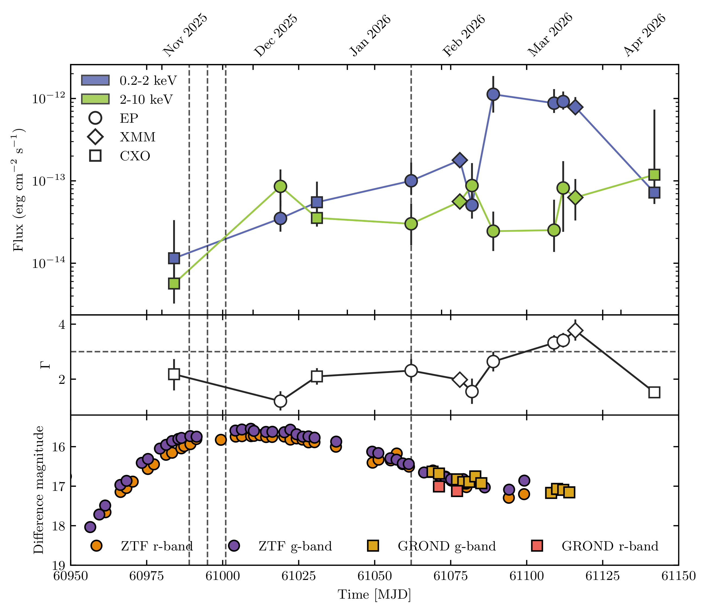
图注：X-ray and optical lightcurve of \(\aarm.\) In the top panel, we plot the X-ray lightcurve in the 0.2-2 and 2-10 keV bands. In the middle panel, we show the evolution of the photon index $\Gamma$ over time (see text for more details about the spectral analysis). While the flux is derived from the more complete \(\textsc{diskbb+powerlaw}\) model, $\Gamma$ is derived from the single powerlaw fit, as a neutral indicator spectral shape (see Sect. \ref{subsec:xrayspec}). We indicate with the dashed line a photon index value of $\Gamma=3$, as this is the canonical photon index threshold to distinguish between thermal and non-thermal emission in accreting SMBHs (e.g., \citealp{Grotova2025a, Grotova2025b}). The bottom panel shows the optical lightcurve collected with ZTF and GROND. The vertical dashed lines correspond to the epochs at which optical spectra were collected.
对应解读：建议重点查看的图表 1；关键图表逐图导读 图 1；光变与谱态同步演化段落。
入选理由：这张图同时给出0.2–2 keV、2–10 keV X射线光变、光子指数Gamma随时间变化以及ZTF/GROND光学光变，是判断光学峰、早期极低X射线探测、后续近两数量级增亮和X射线峰滞后的核心证据。它还直接把光度变化与谱变软/变硬联系起来，比单独的光学或X射线图更能支撑日报主线。
来源与置信度：\(arxiv_source\)；high；\(arxiv_source\) / main.tex:figure[1]
Fig03
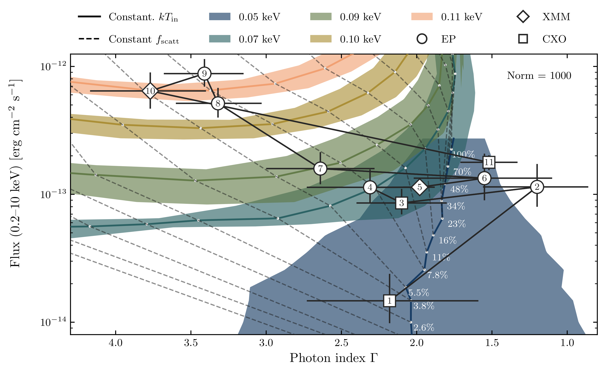
图注：Flux vs $\Gamma$ evolution for \(\aarm.\) The white markers with white facecolor represent the different values explored by \(\aarm,\) according to the single powerlaw fit. The background-colored curves and areas, and the dashed lines represent different combinations of temperature and scattering fraction values for the \textsc{simpl$\times$diskbb} model used as input to the simulations (refer to the text in section \(\ref{fis}\) for details). The effect of changing disk normalization is shown in Fig. \(\ref{fig:xrb_2}.\)
对应解读：建议重点查看的图表 3、4；关键图表逐图导读 图 3、图 4；模型拟合中关于低硬态到高软态再硬化的诊断。
入选理由：该图展示TDE 2025aarm在通量-Gamma平面中的演化，并叠加simpl×diskbb模型中不同盘温和散射比例的模拟轨迹，是检验‘光度升高时变软、盘/康普顿成分相对贡献变化’的关键诊断图。它比单纯时间序列更直接对应状态转变轨迹和盘-冕解释。
来源与置信度：\(arxiv_source\)；high；\(arxiv_source\) / main.tex:figure[3]
Fig02
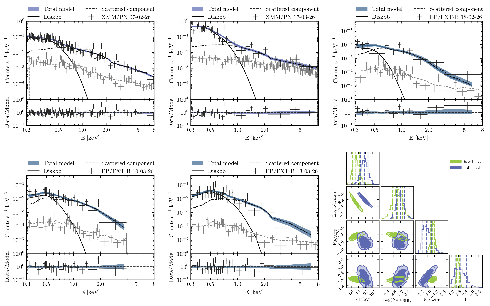
图注：The \textsc{simpl$\times$diskbb} model fit for XMM1,2 and EP4,5 and 6, Together with the XMM1 and XMM2 contour plots.
对应解读：建议重点查看的图表 2、4、7；关键图表逐图导读 图 2、图 4；模型拟合段落中复合模型、成分分解和置信区间讨论。
入选理由：该图给出关键时段XMM1、XMM2及EP4–6的simpl×diskbb模型拟合，并包含XMM1/XMM2等高价值时期的轮廓图，直接对应盘成分与散射/康普顿化成分是否被数据支持的问题。它能帮助读者判断高软态是否真的由热盘主导，以及参数退化和置信区间是否影响结论。
来源与置信度：\(arxiv_source\)；high；\(arxiv_source\) / main.tex:figure[2]
Fig10
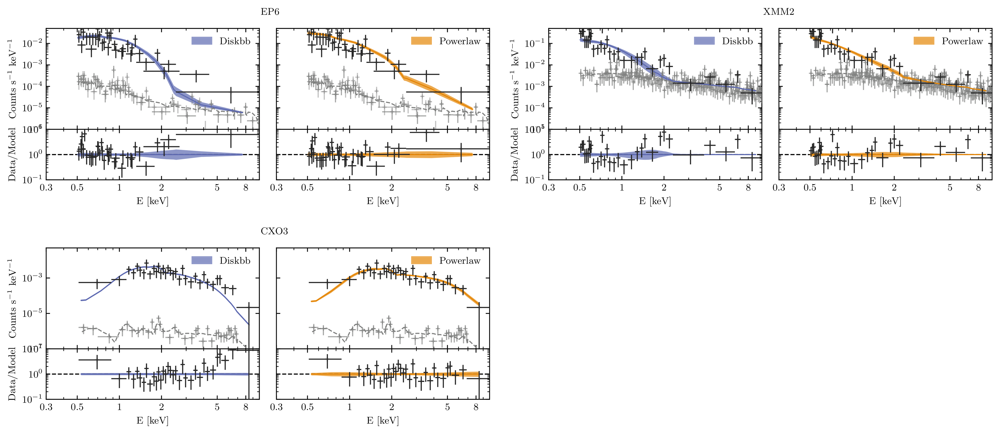
图注：continued from\ref{fig:xrayspecall}. All panels show, respectively, in black and grey markers, the source and background counts, rebinned for visualization purposes. the diskbb and powerlaw fits are respectively shown in the left and right panels. The dashed grey line corresponds to the background model.
对应解读：建议重点查看的图表 2、7；关键图表逐图导读 图 2；模型拟合段落中单成分模型失败、背景和计数空间拟合质量的讨论。
入选理由：这是多页X射线谱图的延续页，并明确显示源计数、背景计数、diskbb与powerlaw单成分拟合以及背景模型。它最贴合日报中关于不能只看unfolded谱、需要检查计数空间、背景和单成分残差的提醒，可用于验证硬尾或软盘成分是否由真实谱形驱动。
来源与置信度：\(arxiv_source\)；high；\(arxiv_source\) / main.tex:figure[10]
Fig05
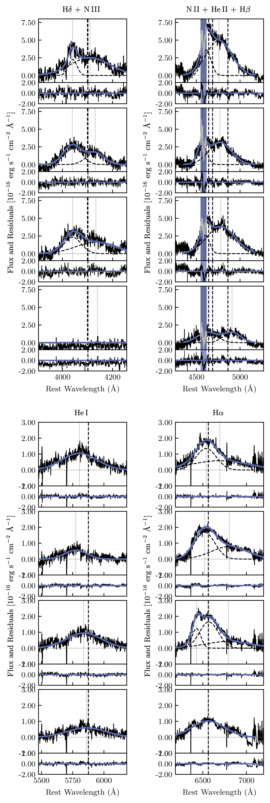
图注：Fits of the optical spectral lines of \(\aarm.\) Each column shows a different line complex, and each row corresponds to a different epoch, increasing in descending order. The vertical dashed black lines indicate the expected restframe centroids for H$\delta$, N\,III, He\,II, H$\beta$,He\,I, and H$\alpha$, respectively, from left to right. The vertical grey dotted lines, instead, show the centroid of each fitted component. We show the spectral range likely affected by a spectral merging artifact in the shaded blue region.
对应解读：建议重点查看的图表 5；关键图表逐图导读 图 5；光学光谱分类和Bowen特征讨论。
入选理由：该图逐历元拟合Hδ、N III、He II、Hβ、He I和Hα等线复合体，并标出预期静止系线心和拟合线心，最适合检查TDE分类、N III Bowen荧光特征、线宽与线强演化。相比只展示整体光谱的图，它对区分TDE、AGN变源或超新星污染更具诊断价值。
来源与置信度：\(arxiv_source\)；high；\(arxiv_source\) / main.tex:figure[5]
Fig06
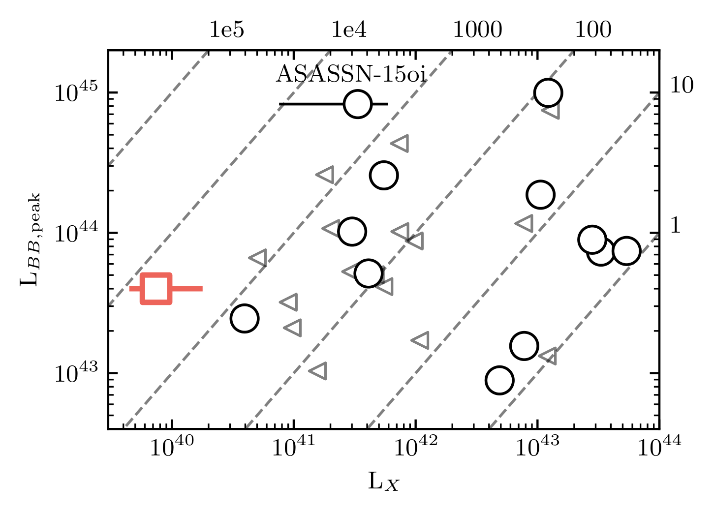
图注：The peak optical bolometric blackbody luminosity vs. early-time X-ray luminosity for a sample of TDEs. The red marker indicates the location of \(\aarm,\) for which we take the peak bolometric luminosity from \(\citealp{simongini2026early}.\) The X-ray luminosity is instead the one derived from the CXO1 observation in the 0.2-10 keV band. Black markers indicate the sample of optically bright and X-ray detected TDEs of \(\citealp{Guolo2024systematic},\) and the grey triangles represent the sources from the same sample for which the X-ray luminosity could only be estimated as an upper limit. The luminosities and upper limits of \(\citealp{Guolo2024systematic}\) were derived in the 0.3-10 keV band.
对应解读：建议重点查看的图表 6；关键图表逐图导读 图 6；关于早期X射线极暗和选择效应的比较样本讨论。
入选理由：该图把TDE 2025aarm放在峰值光学黑体光度与早期X射线光度的文献TDE样本中，并区分探测点和上限，直接支撑‘这是早期X射线探测到的最暗TDE之一’以及‘X射线亮/暗二分可能受随访深度影响’的论点。
来源与置信度：\(arxiv_source\)；high；\(arxiv_source\) / main.tex:figure[6]
强相关工作
同一事件方面，目前可靠公开入口是本文的 arXiv 页面；TDE 2025aarm 作为 2025 年事件，后续可能会有 ATel、TNS、Swift 或光谱分类通告，但在没有逐条核验前不应编造链接。检索时可用关键词 “TDE 2025aarm”, “AT 2025aarm”, “Bowen fluorescence tidal disruption event”, “low hard high soft TDE”。
同类源方面，最直接可比较的是早期 X 射线明亮的热 TDE，如 ASASSN-14li，以及光学发现后延迟出现 X 射线的 TDE 样本。它们共同指向一个问题：X 射线探测率到底反映内禀双峰分布，还是反映观测窗口和再处理几何？TDE 2025aarm 的价值在于把“低光度早期探测”这个此前很难进入样本的区域补上。
基础理论方面，需要把 Rees 的经典潮汐瓦解图像、Phinney 的回落率标度、以及现代 TDE 再处理/外流模型与本文的状态转变解释区分开。本文的 XRB 类比可参考 Remillard 与 McClintock 关于黑洞 X 射线双星状态的综述，但应注意 TDE 的供给不是稳定 Roche-lobe 溢流，外层碎片和非稳态圆化过程会破坏简单尺度相似性。
相反或张力观点包括：一些研究认为光学 TDE 的 X 射线弱主要由视角和再处理层遮挡造成，而不必诉诸内禀吸积态转变；另一些研究强调盘形成延迟或流体圆化效率。检索关键词可用 “X-ray weak optical TDE selection effects”, “delayed X-ray brightening tidal disruption event”, “TDE reprocessing layer viewing angle”, “TDE disk formation delay”。
同一事件 / 同类源线索：
相似工作：
- https://ui.adsabs.harvard.edu/abs/2016Natur.526..542M/abstract
- https://ui.adsabs.harvard.edu/abs/2019ApJ...883..111A/abstract
基础理论 / 方法工作：
- https://ui.adsabs.harvard.edu/abs/1988Natur.333..523R/abstract
- https://ui.adsabs.harvard.edu/abs/2006ARA%26A..44...49R/abstract
- https://arxiv.org/abs/2104.14580
相反观点 / 张力线索：
8. Extending the infrastructure of the BAM code towards resistive general-relativistic magnetohydrodynamics: tests and first applications
- 来源：arXiv / astro-ph.HE
- 链接：https://arxiv.org/abs/2607.11670v1
- 作者：Matthew Beaudoin, Maximilano Ujevic, Ramon Jaeger, Anna Neuweiler, Henrique Gieg, Kenta Kiuchi, Tim Dietrich
- 评分：novelty 7/10，importance 8/10，relevance 8/10，final 8.70/10
- 推荐理由：将BAM数值相对论代码扩展到电阻GRMHD，并测试双中子星体系，直接影响磁重联、喷流、短GRB和并合后遗迹建模；虽采用简化EOS，但方法可复用性强。
中文题目：把 BAM 数值相对论代码扩展到电阻性广义相对论磁流体：测试与首批应用
做了什么：这篇文章把数值相对论代码 BAM 从理想广义相对论磁流体扩展到有限电导率的电阻性广义相对论磁流体框架。作者用一组特殊相对论磁流体标准测试验证新模块，再把它用于孤立中子星和双中子星并合模拟，检查有限电导率如何影响磁场放大、物质抛射和非理想电磁场结构。核心结论是：在低密度区域和并合后环境中，理想磁流体强制为零的沿磁场电场分量可以达到总电场强度的约百分之十，说明电阻、欧姆耗散和磁重联等非理想效应可能影响并合遗迹的长期演化。
为什么重要：双中子星并合、短伽马暴中心引擎、磁星和脉冲星磁层都涉及强磁场、强引力和低密度等离子体。理想磁流体近似在中子星内部通常很好，但它把电导率视为无穷大，直接排除了平行电场、有限耗散和真实重联。这篇工作的重要性在于，它把这些非理想效应放进一个已有的数值相对论基础设施中，并证明代码能通过标准测试、能稳定演化孤立星和双星系统。
理论 / 观测 / 仪器方法价值：对理论和数值方法的价值在于：它提供了一个可用于比较理想与电阻性广义相对论磁流体的 BAM 实现，使研究者能系统检查有限电导率对磁场拓扑、能量耗散、并合后磁场放大和抛射物电磁性质的影响。对观测解释的价值在于：短伽马暴、千新星和并合后可能的射电余辉都依赖低密度外流与磁场结构，而这些区域恰恰是理想磁流体最可疑的地方。
为什么应该关注：如果你关心双中子星并合的电磁对应体、喷流启动、并合后遗迹寿命或数值相对论代码的物理可信度，这篇文章值得看。它不是给出最终天体物理答案，而是把一个关键缺失物理量——有限电导率——接入可运行的相对论并合模拟中，并展示了理想近似可能在哪些区域低估了非理想电场和耗散。
展开详细解读：文章讲解、背景、理论、重点章节、图表与相关工作
文章详细讲解
科学问题：强磁中子星和双中子星并合通常用理想广义相对论磁流体处理，即假定等离子体电导率无穷大，流体共动系电场为零。这个近似在高密度中子星内部通常合理，因为导电性极强、磁场近似冻结在流体中。但并合问题并不只发生在星体内部；磁层、剪切界面、潮汐尾、低密度外流和并合后盘风中，密度低、数值大气存在、磁场拓扑剧烈变化，理想近似会人为压制欧姆耗散、磁重联和平行电场。因此本文要回答的是：在 BAM 代码中实现电阻性广义相对论磁流体后，代码是否稳定、是否能通过标准测试，以及有限电导率是否会在实际中子星系统中留下可辨别的动力学或电磁迹象。
作者怎么做：文章把 BAM 的基础设施扩展到电阻性广义相对论磁流体。与理想情形不同，电场不再由速度和磁场代数给出，而是作为演化变量参与麦克斯韦方程，并通过广义欧姆定律与流体速度、磁场和电导率相连。这类方程组具有刚性源项：当电导率很大时，系统迅速逼近理想极限；当电导率有限时，又必须允许非理想电场存在。作者因此需要处理保守量到原始量恢复、电磁约束、数值通量、导电率处方和低密度区域的稳定性问题。验证部分先从特殊相对论磁流体基准测试做起，再进入广义相对论中的孤立中子星和双中子星应用。
关键结果：测试表明新实现能再现已知的特殊相对论磁流体问题，并能稳定演化孤立中子星和双中子星系统。对并合应用来说，文章最值得注意的结果不是某个单一波形或抛射质量数字，而是非理想电磁场诊断：理想磁流体中沿磁场电场分量应严格为零，而电阻性演化中该分量可达到总电场强度的约百分之十。这说明在并合后低密度区域，磁场并非完全冻结，电磁能可能通过欧姆耗散或重联转化为热能和粒子加速可用的能量。作者还检查有限电导率对磁场放大和质量抛射的影响，展示该框架已经可以用于比较不同电导率处方下的并合动力学。
局限和下一步：本文仍是方法建设与首批应用，而不是完整的微物理并合预言。方程状态采用简化的分段多方模型，电导率处方也不可避免地是参数化的；真实并合后环境还涉及温度、成分、弱相互作用、中微子输运、湍流小尺度发电机和可能的辐射过程。数值上，电阻性广义相对论磁流体对低密度大气、网格分辨率和约束控制高度敏感，平行电场的定量幅度可能受这些因素影响。下一步自然是把该框架与更真实的有限温核物质状态方程、中微子泄漏或输运、更高分辨率和更系统的电导率模型结合起来，并把输出连接到短伽马暴喷流、千新星外流和后并合电磁辐射模型。
关键结果是怎么做出来的
本文的证据链从代码验证开始，而不是直接进入双中子星物理解读。作者首先选取一组特殊相对论磁流体基准测试，目的是确认电阻性模块在已知解析解或高精度参考解存在的情况下能够给出正确结果。这类测试通常覆盖传播波、激波管、磁场主导区和从电阻性到理想极限的过渡。读者应特别关注误差随分辨率的收敛行为、约束违反的控制、以及高电导率极限下数值解是否回到理想磁流体结果。
在天体物理应用部分，样本不是大规模参数空间扫描，而是少数代表性的孤立中子星和双中子星系统。孤立星用于证明长期稳定性：如果一个强磁中子星在没有并合扰动时已经出现非物理漂移，那么后续并合结果就难以解释。双星系统则用于检查有限电导率在真实强引力、强剪切和低密度外流条件下的作用。文章摘要指出作者比较了磁场放大、质量抛射和非理想广义相对论磁流体效应，说明他们至少在全局量和局部电磁诊断两个层面做了评估。
最重要的定量诊断是沿磁场电场分量与总电场强度的比值。在理想磁流体中，共动系电场为零，等价地说适当定义下的平行电场被压制；电阻性模型则允许它非零。作者报告该分量可达到总电场强度的约百分之十。这个数字的意义在于它不是一个纯数值误差级别的微小残差，而是足以影响局部能量耗散和粒子加速条件的量级。读者在看原文图表时应检查该比值出现在何处：是在低密度大气、潮汐尾、磁层、盘冠，还是在高密度核心附近；不同区域的物理可信度不同。
显著性在这类代码论文中通常不是用观测论文的“多少个标准差”来表达，而是通过基准测试误差、收敛阶、守恒量漂移、约束违反和与理想极限的模型比较来建立。这里的模型比较核心是有限电导率模型与理想模型之间的差异是否超过数值误差和分辨率变化。稳健性检验应包括不同分辨率、不同电导率参数、不同低密度处理以及不同初始磁场强度或拓扑下的比较。若原文给出表格，读者应检查抛射质量、磁能、最大磁场、角动量损失和约束范数是否随分辨率稳定。
图表支撑方面，最关键的应是：标准测试的剖面图或误差图，显示电阻性模块通过验证；孤立星的中心密度、磁能和约束随时间演化图，显示稳定性；双星并合中的磁能、抛射质量或盘质量时间序列，显示有限电导率的动力学影响；以及平行电场比例的二维分布图，显示非理想效应集中在哪些区域。系统误差主要来自电导率处方、数值大气、网格分辨率、状态方程简化和缺少微物理。文章的结论应被理解为“该效应可能重要且代码能研究它”，而不是“已经精确预言了某一观测信号”。
展开背景、理论、公式、模型、章节和图表导读
背景知识
研究对象是强磁中子星和双中子星并合中的相对论磁化等离子体。中子星内部密度高、简并强、导电性极好，磁场在许多宏观时间尺度上近似冻结在流体中，因此理想磁流体长期是数值相对论并合模拟的主力工具。理想近似能捕捉潮汐形变、Kelvin-Helmholtz 剪切放大、差分旋转、磁绕转和磁制动等大尺度过程。
历史问题在于，并合的电磁现象往往由低密度区域决定，而这些区域恰恰不一定满足理想磁流体。短伽马暴喷流需要形成磁能主导的极向通道，千新星和射电余辉依赖外流质量、速度和成分，后并合遗迹的磁层可能出现重联和粒子加速。若强制磁场完全冻结，模拟会低估耗散、错误处理电场结构，并可能改变喷流启动条件。
观测背景也在变化。GW170817 之后，双中子星并合不再只是引力波问题，而是引力波、伽马射线、紫外光学红外、射电和可能的高能辐射共同约束的问题。未来更多并合事件会要求模拟不仅给出波形，还要给出可连接到电磁辐射的磁场、外流和耗散信息。电阻性广义相对论磁流体正是把数值相对论从“流体动力学加理想磁场”推进到“可描述有限导电低密度等离子体”的必要步骤。
为什么现在值得重新看：一方面，计算资源和数值算法已经足以处理更复杂的刚性源项和多物理耦合；另一方面，单纯提高理想磁流体分辨率并不能产生理想方程被排除的物理自由度。有限电导率不是数值修饰，而是改变方程特征结构和能量转换通道的物理输入。
该领域常见误区有几个。第一，把理想磁流体在星体内部的成功外推到所有区域，忽略低密度磁层和外流的不同等离子体条件。第二，把数值电阻误认为物理电阻；有限分辨率会导致人工重联，但其尺度和耗散率不一定对应真实等离子体。第三，把电导率看成单一常数；真实电导率可能依赖密度、温度、成分、磁化度和辐射场。第四，看到非零平行电场就直接等同于可观测高能辐射；从电场到粒子分布和辐射还需要额外微物理。
基础理论 / 方法脉络
基本物理图像从磁场冻结开始。在理想磁流体中，等离子体电导率趋于无穷大，流体共动系电场消失，磁力线随流体运动。这使磁场能通过剪切、压缩和差分旋转被放大，也使磁压和磁张力反过来影响流体运动。对于高密度中子星内部，这是一个很好的第一近似。
电阻性磁流体放松了这个约束。电场成为独立演化量，电流由有限电导率的欧姆定律决定。有限电导率意味着电磁能可以通过焦耳加热转化为热能，磁场拓扑可以通过重联改变，沿磁场方向可以出现非零电场。对并合后系统，最敏感区域往往是磁层、盘冠、极区漏斗和抛射物边界。
在广义相对论中，磁流体方程还要与弯曲时空耦合。数值相对论常采用 \(3+1\) 分解，把时空写成空间超曲面随时间推进。流体守恒方程、电磁场演化方程和爱因斯坦方程共同构成系统。BAM 这类代码需要同时处理引力场、流体变量、电磁变量和约束传播。
本文的模型假设包括：使用电阻性广义相对论磁流体方程，采用参数化电导率而非从微观输运自洽计算电导率，并用简化分段多方状态方程描述中子星物质。这些假设使代码开发和物理隔离更清楚，但也限制了定量天体物理解释。特别是温度、电子分数和中微子冷却缺失时，抛射物热史和真实导电性都只能近似处理。
常见退化和系统误差包括电导率与数值分辨率的退化：低分辨率会引入人工耗散，使得物理电阻的效果不易分离；低密度大气处方会影响电场和磁场主导区；初始磁场拓扑会影响并合后放大路径；状态方程会影响并合后遗迹寿命和外流质量。因此读者应把本文的非理想电场结果看成方法学上重要的发现，而不是已经完全校准的观测预言。
公式与推导
第一步是从守恒形式理解相对论磁流体。总能动张量由流体和电磁场两部分组成，满足局域守恒：
这里 \(T^{\mu\}\)
u}) 是总能动张量，(\
ho) 是静质量密度，\(u^\mu\) 是流体四速度，(\
\(abla_\mu\)) 是协变导数。这两式表达能量动量守恒和重子数守恒，是任何广义相对论流体模拟的底层约束。
第二步加入麦克斯韦方程。在曲率时空中，电磁场张量 \(F^{\mu\}\)
u}) 与其对偶 ({}^{\ast}F^{\mu\
u}) 满足
其中 \(J^\\)
u) 是四电流。理想磁流体通常不显式演化完整电场，而电阻性磁流体需要把电场和电流关系纳入系统，因此这组方程的数值处理更直接也更困难。
第三步是理想极限的约束。流体共动系电场 \(e^\mu\) 定义为
理想磁流体假定
在局域惯性系中，这对应熟悉的关系 \(\mathbf{E}+\mathbf{v}\times\mathbf{B}=0\)。它意味着沿磁场方向的电场被压制，也意味着无法描述真实欧姆耗散。
第四步引入电阻性欧姆定律。最简单的各向同性电导率模型可写成
其中 \(q\) 是共动电荷密度，\(\sigma\) 是电导率，\(e^\mu\) 是共动系电场。若 \(\sigma\to\infty\)，为了保持有限电流，系统趋向 \(e^\mu\to0\)，回到理想磁流体；若 \(\sigma\) 有限，则允许非零共动电场和耗散。
第五步看耗散率。电磁场对物质做功的局域量与 \(J^\mu e_\mu\) 有关，在简单欧姆模型下有
这里 \(Q_{\rm Ohm}\) 表示欧姆加热率的量级。该式说明非零 \(e^\mu\) 不是单纯诊断量，而是可能改变热演化和磁能衰减的能量通道。
第六步连接到本文强调的平行电场。可用空间三矢量定义沿磁场方向电场比例
若 \(f_{\parallel}=0\)，电场完全垂直于磁场；若 \(f_{\parallel}\) 达到约 \(0.1\)，说明电场中有约百分之十的方向投影不能由理想冻结条件消除。本文报告的这一量级正是非理想效应可能重要的核心证据。
第七步是磁场能量的全局诊断。常用磁能可写成
其中 \(b^2=b_\mu b^\mu\) 是共动磁场四矢量的平方，\(\gamma\) 是空间度规行列式。比较不同电导率下的 \(E_{\rm mag}(t)\) 可以判断磁场放大和耗散是否受有限电导率影响。
第八步是抛射物诊断。并合模拟常用未束缚条件估计抛射质量，例如基于伯努利或测地线准则写成
其中 \(W\) 是洛伦兹因子，\(\mathcal{U}\) 是满足未束缚判据的区域。若有限电导率改变局部加热、磁压或角动量输运，它就可能通过该积分改变 \(M_{\rm ej}\)。
第九步是代码验证中的误差和收敛。对有参考解 \(U_{\rm ref}\) 的测试，可定义离散误差
若数值格式在某一区间具有阶数 \(p\)，应近似满足
这里 \(U_{\Delta x}\) 是网格间距为 \(\Delta x\) 的数值解。代码论文中，这类收敛关系就是“显著性”的重要替代证据：它说明结果不是任意数值伪影。
模型拟合 / 应用方法
这篇文章不是传统观测数据拟合论文，而是数值方法和模拟应用论文；但它仍有明确的“模型—参数—诊断”结构。模型的核心参数包括电导率处方、状态方程参数、初始中子星质量和自旋、初始磁场强度与拓扑、网格分辨率、低密度大气阈值以及约束阻尼参数。拟合意义上，作者不是用数据反推这些参数，而是检查在给定参数下方程组是否给出稳定、收敛、物理可解释的解。
在基准测试中，最接近拟合残差的量是数值解与解析或参考解之间的剖面差异。应查看密度、速度、压力、电场和磁场各分量的误差范数是否随分辨率下降；若高电导率极限下仍不能接近理想解，就说明欧姆源项、原始变量恢复或时间推进存在问题。残差图中局部激波附近误差较大是常见现象，但平滑区不收敛则更严重。
在孤立星和双星模拟中，参数估计问题转化为稳健性问题。中心密度、总重子质量、角动量、电磁能和约束违反应保持在可接受范围内；若某个电导率模型导致明显漂移，需要判断这是物理耗散还是数值不稳定。并合后阶段尤其复杂，因为湍流、剪切层和低密度外流都对分辨率敏感，小尺度磁场放大可能远未收敛。
主要退化关系包括物理电阻与数值电阻之间的退化，电导率与低密度大气处理之间的退化，以及状态方程与磁场放大效率之间的退化。若降低电导率和降低分辨率都使磁能更快衰减，就必须通过分辨率序列来分离两者。若平行电场主要出现在大气地板附近，则需要额外检查它是否受大气密度、速度限制或电荷清理方法控制。
实际应用上，这类模型最终可与观测约束连接，但中间还缺若干层。引力波主要约束质量、潮汐形变和后并合动力学；千新星约束抛射质量、速度和成分；短伽马暴和余辉约束喷流能量、开角和环境密度。电阻性广义相对论磁流体给出的磁能耗散、平行电场和极区磁化度可以成为喷流和辐射后处理的输入，而不是直接等同于光变曲线。
重点章节 / 结果段落怎么读
第一，读引言和物理动机时，应抓住作者为什么不满足于理想广义相对论磁流体。重点是有限电导率在低密度区域、磁层和并合后遗迹中的必要性，而不是把电阻性模型看成对星体内部导电性的否定。
第二，读方程和数值实现部分时，应关注电场如何作为演化变量引入、欧姆定律如何写、刚性源项如何处理、保守量到原始量如何恢复，以及约束控制如何实现。这些细节决定代码是否能在高电导率极限和有限电导率区间之间稳定过渡。
第三，读特殊相对论磁流体测试部分时，应把它当作代码可信度的地基。重点看标准问题的剖面、误差、收敛阶和理想极限恢复，而不是只看图形是否“像”。如果有不同电导率参数的比较，应检查过渡行为是否连续。
第四，读孤立中子星应用时，应关注长期稳定性诊断：中心密度、磁能、质量守恒、约束违反和电磁场变量是否出现非物理增长。孤立星测试通过，双星应用才有解释价值。
第五，读双中子星应用和讨论部分时，应重点看有限电导率对磁场放大、抛射质量、低密度区域电场结构和平行电场比例的影响。尤其要看非理想效应出现的空间位置，因为高密度核心、剪切界面、磁层和数值大气的可信度不同。
第六，若有附录或稳健性检验，应优先检查分辨率、电导率处方和低密度处理的变化。对电阻性广义相对论磁流体而言，稳健性往往比单个高分辨率漂亮图更重要。
建议重点查看的图表
-
标准测试剖面图：看密度、压力、速度、电场和磁场分量是否与解析或参考解重合，特别注意激波、接触间断和电阻性扩散区。
-
误差与收敛图：看 \(L_1\) 或类似误差范数是否随分辨率按预期下降，并检查高电导率极限是否逼近理想磁流体。
-
孤立中子星稳定性时间序列：看中心密度、磁能、总质量、角动量和约束违反是否长期稳定，是否有由电阻性源项引起的非物理漂移。
-
双中子星并合的磁能演化：看有限电导率是否改变并合时和并合后的磁场放大幅度、饱和时间和耗散速率。
-
抛射质量或未束缚物质诊断：看不同电导率模型下 \(M_{\rm ej}\) 是否有系统差异，并判断差异是否超过分辨率误差。
-
平行电场比例二维分布：重点看 \(|\mathbf{E}\cdot\mathbf{B}|/(|\mathbf{E}|\\,|\mathbf{B}|)\) 或等价诊断在哪里达到约 \(0.1\)，是在物理可信的低密度外流还是主要受数值大气控制。
-
约束违反或清理场诊断：看麦克斯韦约束和广义相对论约束是否在并合时爆发，若约束增长与非理想电场同位置同时间出现，需要谨慎解释。
关键图表逐图导读
图 1：若为特殊相对论基准测试剖面，横轴通常是空间坐标，纵轴是密度、压力、速度、电场或磁场分量。数据点或彩色线代表不同分辨率或不同电导率，黑线可能是解析或参考解。主要看间断位置、峰值和扩散宽度是否正确。读图陷阱是只看整体形状；真正关键的是激波附近误差是否局限、平滑区是否收敛。
图 2：若为误差收敛图，横轴通常是网格间距或分辨率，纵轴是误差范数，常用对数坐标。模型线可能标出一阶或二阶收敛斜率。主要结论应是新电阻性模块在相关测试中达到预期收敛。读图陷阱是激波问题的全局收敛阶可能低于光滑问题，这不一定代表失败；但误差不随分辨率下降则严重。
图 3：若为孤立中子星演化图，横轴是时间，纵轴可能是中心密度相对变化、磁能、约束范数或质量漂移。不同颜色代表理想模型和不同电导率模型。主要看长期漂移是否小于物理变化。读图陷阱是把小幅振荡误认为不稳定；孤立星初始数据和网格会激发正常径向振荡，关键是是否有长期单调失控。
图 4：若为双中子星并合磁能演化，横轴是并合前后时间，纵轴是磁能或最大磁场强度。并合时剪切层会导致快速放大，后并合阶段可能出现饱和或衰减。主要看有限电导率是否改变峰值、增长率或衰减率。读图陷阱是小尺度磁场放大高度依赖分辨率，单一分辨率下的峰值不宜过度解释。
图 5：若为抛射物或盘质量表格/曲线，横轴可能是时间或模型编号，纵轴是未束缚质量、平均速度或角分布。主要看电阻性模型相对理想模型的差异是否系统一致。读图陷阱是抛射量本身对未束缚判据和大气处理敏感，差异若小于分辨率误差就不能作为强物理结论。
图 6：若为平行电场比例的二维切片，坐标轴通常是并合平面或极向截面的空间坐标，颜色表示 \(|\mathbf{E}\cdot\mathbf{B}|/(|\mathbf{E}|\\,|\mathbf{B}|)\) 或相关量。主要结论是非理想电场可达到约 \(0.1\) 的量级，且可能集中在低密度区域。读图陷阱是颜色条容易突出局部极值；应同时查看密度、磁化度和约束违反，判断该区域是否物理可信。
论文原图 / 可嵌入图片
Fig08
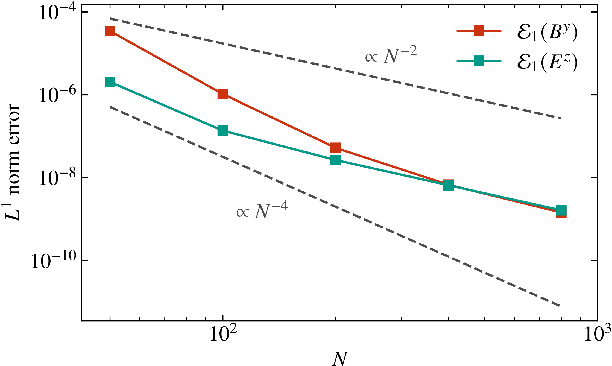
图注：Spatial convergence for the self-similar current sheet test. The red line indicates the \(L^1\) norm error for the magnetic field component \(B^y\) and the teal line for the electric field component \(E^z\). The two dashed lines show second- and fourth-order convergence.
对应解读：对应“误差与收敛图”和“模型拟合”中关于数值解与解析/参考解残差、L1误差范数随分辨率下降的讨论。
入选理由：这是候选图中最直接展示收敛性的图，给出自相似电流片测试中 \(B^y\) 与 \(E^z\) 的 L1 误差，并标出二阶和四阶收敛参考斜率。它最能支撑日报关于电阻性模块是否达到预期收敛、误差是否随分辨率下降的核心判断。
来源与置信度：\(arxiv_source\)；high；\(arxiv_source\) / main.tex:figure[8]
Fig07
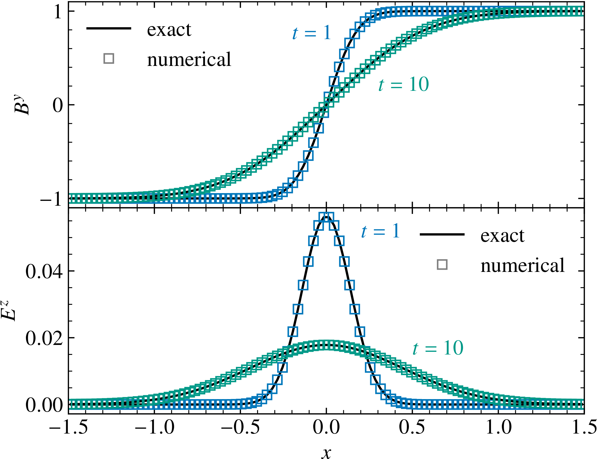
图注：The profile of the magnetic field component \(B^y\) (top panel) and the implicitly evolved electric field component \(E^z\) (bottom panel) from the self-similar current sheet test. The result is shown for the initial condition at \(t = 1\) and the evolved system at \(t = 10\), using 100 grid points for \(x \in [-1.5, 1.5]\). The exact solution is accurately matched.
对应解读：对应“标准测试剖面图”和“模型拟合”中关于电阻性扩散区、电场和磁场剖面是否匹配解析解的讨论。
入选理由：该图同时展示自相似电流片测试中的 \(B^y\) 和隐式演化的 \(E^z\)，并与精确解比较，直接检验电阻性 GRMHD 中最关键的非理想电磁场演化能力。相比普通激波管图，它更贴近欧姆扩散和电阻性源项验证。
来源与置信度：\(arxiv_source\)；high；\(arxiv_source\) / main.tex:figure[7]
Fig02
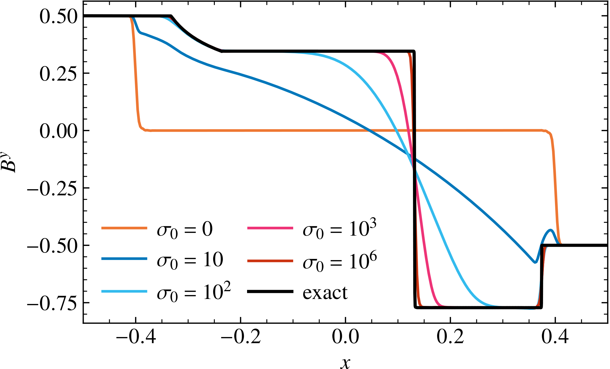
图注：The $y$-component of the magnetic field is shown at $t = 0.4$ for the shock tube test using five values of constant uniform conductivity $\sigma_0$. The black line shows the reference solution.
对应解读：对应“标准测试剖面图”以及“高电导率极限是否逼近理想磁流体”的解读。
入选理由：该图在同一激波管测试中比较五个常数电导率 \(sigma_0\)，并以黑线给出参考解，能够直观看出电导率改变如何影响磁场分量 \(B^y\) 的剖面和理想极限逼近程度。它比单纯分辨率图更能支撑有限电导率参数影响的讨论。
来源与置信度：\(arxiv_source\)；high；\(arxiv_source\) / main.tex:figure[2]
Fig06
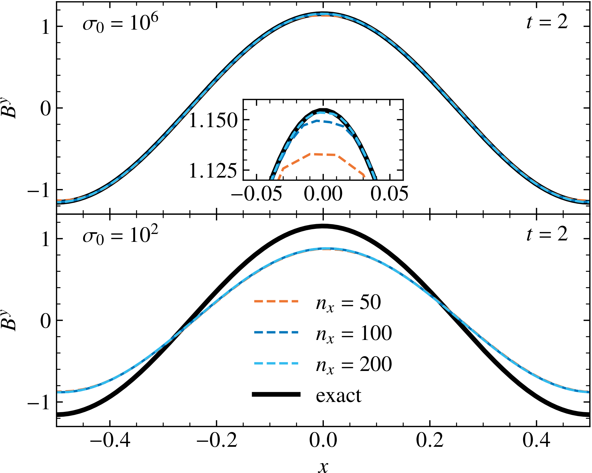
图注：Polarized Alfvén wave after one complete period \(t = 2\). The top panel shows the $\sigma_0 = 10^6$ case, with the zoomed inset illustrating the converging solution with increasing resolution. The bottom panel shows the $\sigma_0=10^2$ case, which shows that the $\sigma_0=10^2$ case can no longer be considered an accurate approximation for ideal MHD.
对应解读：对应“误差与收敛图”和“模型拟合”中关于高电导率极限、低电导率下偏离理想 MHD 的讨论。
入选理由：该图通过偏振 Alfvén 波测试对比 \(sigma_0=10^6\) 和 \(sigma_0=10^2\)，明确显示高电导率情形随分辨率收敛，而较低电导率已不能视为理想 MHD 近似。它很好地支撑日报中关于物理电阻与理想极限之间差异的解释。
来源与置信度：\(arxiv_source\)；high；\(arxiv_source\) / main.tex:figure[6]
Fig05
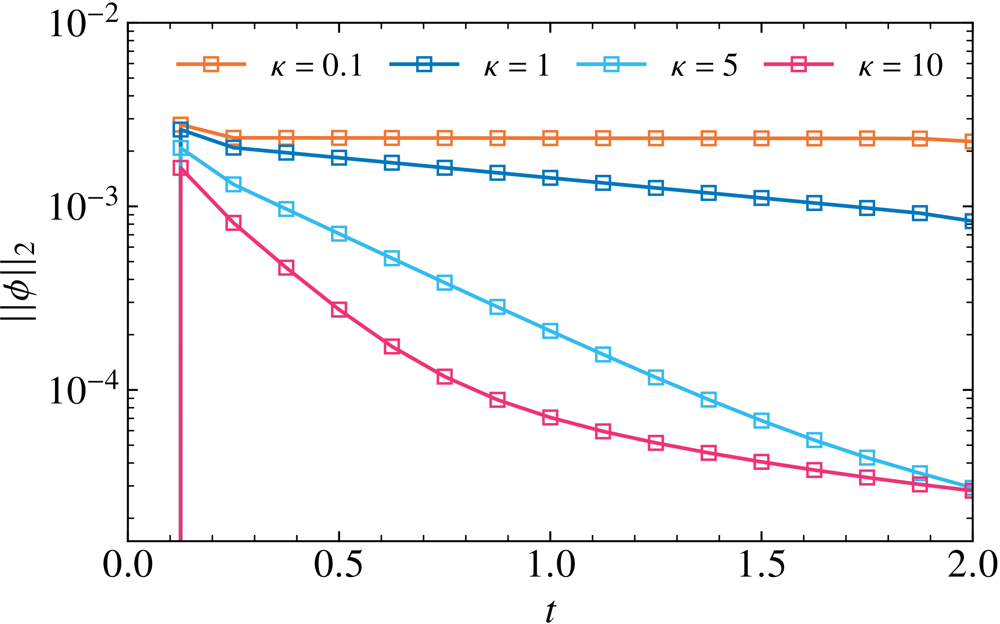
图注：\(L^2\) norm of the magnetic divergence cleaning variable \(\phi\) across the full three-dimensional domain as a function of time. The norm decreases at a faster rate when increasing the value of \(\kappa\). Note that continuing to increase the value of $\kappa$ yields a stiffer system of equations.
对应解读：对应“约束违反或清理场诊断”中关于麦克斯韦约束、清理场和阻尼参数的讨论。
入选理由：该图展示三维全域磁散度清理变量 phi 的 L2 范数随时间衰减，并比较不同 kappa 值的阻尼效果。它是候选图中最清楚量化约束清理稳定性的图，可支撑对电磁约束控制是否可靠的判断。
来源与置信度：\(arxiv_source\)；high；\(arxiv_source\) / main.tex:figure[5]
Fig01
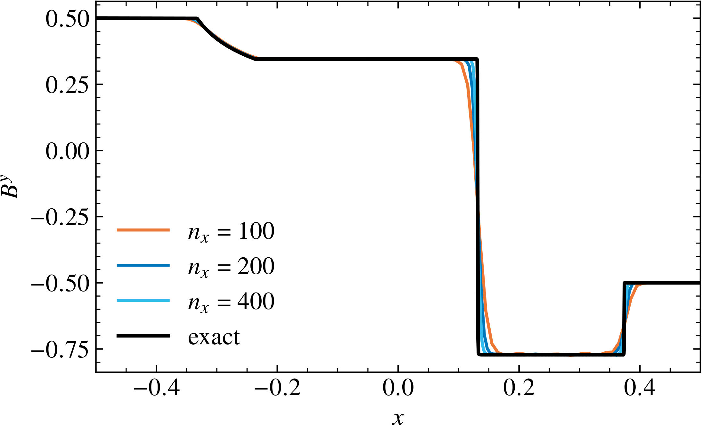
图注：The $y$-component of the magnetic field is shown at $t = 0.4$ for the shock tube test at three resolutions using $\sigma_0 = \num{e6}$. The highest resolution run, the cyan line with $n_x = 400$, is the closest to replicating the reference solution.
对应解读：对应“标准测试剖面图”和“关键图表逐图导读”中图 1 式的激波管分辨率测试说明。
入选理由：该图展示激波管测试中 \(B^y\) 在三个分辨率下与参考解的接近程度，适合说明间断位置、峰值和分辨率收敛趋势。虽然只涉及单一磁场分量，但它是基础验证图，能帮助读者理解代码在激波和接触间断附近的表现。
来源与置信度：\(arxiv_source\)；high；\(arxiv_source\) / main.tex:figure[1]
强相关工作
这篇工作属于电阻性相对论磁流体和双中子星并合数值相对论的交叉。与早期理想广义相对论磁流体并合模拟相比，它关注的不是单纯提高磁场分辨率，而是改变电磁场闭合关系，让平行电场、欧姆耗散和有限电导率过渡成为可演化自由度。建议检索关键词包括“resistive GRMHD neutron star merger”、“finite conductivity binary neutron star”、“BAM code numerical relativity”、“parallel electric field GRMHD”和“magnetic reconnection neutron star merger”。
相似工作通常来自 WhiskyMHD、Einstein Toolkit、IllinoisGRMHD、HARM 类代码以及专门的电阻性相对论磁流体代码。基础理论则可追溯到相对论磁流体、广义相对论麦克斯韦方程、理想磁流体冻结条件和电阻性欧姆定律。相反或张力观点不是说有限电导率“不存在”，而是质疑在宏观并合模拟分辨率下，参数化电导率是否比有效数值电阻更可控，以及低密度区域的平行电场是否会被大气处方污染。读者若要深入比较，应同时查找理想并合模拟的磁场放大论文、电阻性相对论磁流体算法论文，以及并合后喷流启动的磁层模拟。
同一事件 / 同类源线索：
相似工作：
（未提供）
基础理论 / 方法工作：
相反观点 / 张力线索：
（未提供）
9. Cosmic-ray anisotropy: sensitivity of methods and implications for KASCADE data
- 来源：arXiv / astro-ph.HE
- 链接：https://arxiv.org/abs/2607.11405v1
- 作者：M. Yu. Kuznetsov, N. A. Petrov, E. M. Shinkevich
- 评分：novelty 7/10，importance 7/10，relevance 9/10，final 8.70/10
- 推荐理由：比较宇宙线各向异性估计方法并应用KASCADE公开数据，在>20 PeV铁组分约10度尺度给出>2.5σ迹象；显著性不高，但主题正中高能宇宙线且方法对公开数据分析可复用。
中文题目：宇宙线各向异性：方法灵敏度及其对 KASCADE 数据的含义
做了什么：这篇文章问的是：地面宇宙线阵列在视场有限、曝光不均匀的条件下，除了常见的赤经一维偶极调制，还能不能可靠地看到中小角尺度各向异性。作者用模拟各向异性天空测试了三类估计量——赤经谐波、角功率谱和两点自相关函数——再把结论应用到 KASCADE 公开数据的 \(10\%\) 子样本，包括全粒子样本和由卷积神经网络分类的不同质量组。主要结论是，自相关函数通常对真实物理各向异性最敏感；角功率谱在信号足够强时能补充角尺度信息；在 KASCADE 铁组、\(E \gtrsim 20\,\mathrm{PeV}\) 的事件中，两种方法都在约 \(10^\circ\) 尺度上看到 \(>2.5\sigma\) 的各向异性迹象。
为什么重要：高能宇宙线各向异性是连接源分布、银河磁场传播和成分变化的少数直接观测量之一，但地面阵列的非全天覆盖会把真实天空信号投影、削弱甚至混淆。本文的重要性不在于声称发现了强各向异性，而在于系统比较了不同统计量在真实实验条件下的失真和灵敏度，并把方法学结论落实到 KASCADE 这种有成分信息的公开数据上。
理论 / 观测 / 仪器方法价值：对观测方法的价值是明确的：只看赤经偶极会丢失大量中小尺度信息，自相关函数可作为有限曝光阵列搜索各向异性的高灵敏度诊断量，角功率谱则适合在信号较强时判断多极结构。对理论的价值在于，铁组在 \(20\,\mathrm{PeV}\) 以上、约 \(10^\circ\) 尺度的提示若经全数据和独立实验确认，将直接约束膝区附近重核的局域源贡献、磁场散射长度和成分依赖传播。
为什么应该关注：如果你关心膝区宇宙线的起源，这篇文章提醒你：各向异性不能只用一维赤经曲线概括，成分选择和角尺度选择会改变物理解释。如果你做阵列数据分析，它给出了一套可复用的灵敏度比较框架。如果你使用 KASCADE 或类似公开数据，它还指出了一个值得复查的具体线索：高能铁组在 \(10^\circ\) 附近的弱各向异性。
展开详细解读：文章讲解、背景、理论、重点章节、图表与相关工作
文章详细讲解
科学问题：高能宇宙线到达方向的各向异性通常很弱，幅度可能只有 \(10^{-4}\) 到 \(10^{-2}\) 量级，但它携带了源分布、银河磁场扩散、局域结构和质量组成的信息。问题在于，地面阵列只能看到部分天空，且曝光随天顶角、运行时间、探测效率和质量重建选择变化。这样一来，真实的二维天空各向异性会被实验窗口函数卷积，传统赤经一维偶极振幅并不能唯一对应真实的三维偶极或中小尺度结构。
作者怎么做：文章先在受控模拟中构造若干类宇宙线通量各向异性模型，经过类似地面实验的有限视场和非均匀曝光，再比较三种估计量的表现。第一种是常用的赤经展开，主要测量 \(I(\alpha)\) 的低阶谐波；第二种是角功率谱，尝试从球谐多极 \(C_\ell\) 中恢复角尺度信息；第三种是自相关函数，直接统计事件两两角距离分布相对于各向同性期望的偏离。随后，作者把这些方法应用到 KASCADE 公开数据的 \(10\%\) 样本，既分析全粒子事件，也分析由卷积神经网络划分的质量组。
关键结果：模拟比较显示，自相关函数在多数测试模型中对物理各向异性最敏感，尤其适合中小角尺度或非简单偶极结构。角功率谱在各向异性足够强时能给出更接近物理图像的尺度分解，但在有限覆盖下容易受到模式耦合和噪声的影响。应用到 KASCADE 后，最显著的线索来自铁核质量组，在 \(E \gtrsim 20\,\mathrm{PeV}\) 的样本中，约 \(10^\circ\) 尺度出现 \(>2.5\sigma\) 的各向异性迹象，而且自相关函数和角功率谱都给出相容提示。
局限和下一步：\(>2.5\sigma\) 仍然只是提示，不是发现，尤其需要考虑角尺度扫描、能量阈值扫描、质量组选择和分类误差带来的试验因子。KASCADE 使用的是 \(10\%\) 公开样本，统计量和系统误差都可能受限；铁组样本还依赖卷积神经网络分类，质量误分会把不同刚度的粒子混合。下一步最自然的是用完整公开数据或独立实验复查同一能区和同一角尺度，并把曝光、质量分类、能量重建和多重检验统一纳入似然框架。
关键结果是怎么做出来的
本文最重要的证据链可以分成两层：先用模拟说明哪些统计量在有限视场下更敏感，再用 KASCADE 数据寻找相同尺度上的异常。模拟样本并不是为了拟合某个具体源模型，而是为了检验当真实天空含有偶极、中尺度团簇或更复杂结构时，赤经谐波、角功率谱和自相关函数分别会保留多少信息。这样的设计使结论更偏方法学：若实验只能看到部分天空，某个估计量的非显著并不等于真实天空各向同性。
数据应用部分使用 KASCADE 公开数据的 \(10\%\) 子样本。作者分别构造全粒子样本和质量分组样本，后者来自卷积神经网络对事件成分的分类。关键选择包括能量阈值，特别是 \(E \gtrsim 20\,\mathrm{PeV}\)，以及质量组，特别是铁组。读者应注意，这里的有效事件数不仅由总公开样本决定，还被能量阈值、质量分类置信度、天顶角接受度和质量组纯度共同限制，因此高能铁组的统计涨落必须谨慎评估。
显著性评估的核心是把观测到的角功率谱或自相关函数与各向同性蒙特卡洛期望比较。各向同性模拟需要保留实验曝光、视场和选择函数，否则会把探测器不均匀性误判为天空信号。文中报告铁组在约 \(10^\circ\) 角尺度上达到 \(>2.5\sigma\) 的偏离，并且这一偏离由角功率谱和自相关函数共同支持；这比单一统计量孤立异常更有说服力，但仍需要看是否已充分计入扫描角尺度和多个样本选择的试验因子。
支撑结论的图表应包括三类诊断：模拟灵敏度随各向异性模型和幅度的比较图、KASCADE 各质量组的角功率谱或显著性曲线、以及自相关函数随角尺度的偏离曲线。最关键的是看铁组 \(E \gtrsim 20\,\mathrm{PeV}\) 在 \(10^\circ\) 附近是否为孤立尖峰，还是一段连续角尺度上的一致偏离；还要看全粒子和其他质量组是否没有类似结构，因为这关系到成分依赖传播的物理解释。
主要系统误差包括曝光估计、事件重建方向误差、能量刻度、质量分类混淆和多重检验。方向分辨率若接近或小于 \(10^\circ\)，则不会完全抹平该尺度信号；但质量误分可能把质子或中等质量核的各向异性漏入铁组。稳健性上，理想检查包括改变能量阈值、改变质量分类切分、用不同各向同性重采样方法、比较赤经乱序和时间乱序背景、以及对角尺度扫描后给出全局显著性。
展开背景、理论、公式、模型、章节和图表导读
背景知识
研究对象是膝区附近的高能宇宙线，也就是能谱在几 \(\mathrm{PeV}\) 到几十 \(\mathrm{PeV}\) 发生明显变陡的区域。这个能段的直接探测受限于通量太低，主要依赖地面空气簇射阵列。KASCADE 的优势是对电磁、缪子等簇射组分有较好测量，因此不仅能给出全粒子能谱，也能用模型或机器学习方法估计初级质量组成。
宇宙线各向异性的历史问题很长。低能到 \(\mathrm{TeV}\) 能段已经有多个实验报告大尺度偶极和中小尺度结构；到 \(\mathrm{PeV}\) 和 \(10\,\mathrm{PeV}\) 以上，统计量下降、质量组成变重、磁偏转更复杂，结果更不稳定。理论上，如果宇宙线主要在银河内扩散传播，则各向异性幅度与扩散系数、密度梯度和局域源历史有关；但实测各向异性常常低于简单扩散模型预期，这就是所谓宇宙线各向异性问题的一部分。
观测背景的关键困难是地面阵列不是全天巡天仪。一个位于固定纬度的阵列只能覆盖有限赤纬带，且对不同天顶角的接受度不同。即便真实天空是纯偶极，观测到的赤经调制也只是投影；如果真实天空含有中小尺度结构，只做赤经一维谐波会把信息严重压缩。因此，重新检验角功率谱和自相关函数的灵敏度是有现实必要的，尤其在公开数据和机器学习成分分类逐渐可用之后。
现在值得重新看这个问题，还有一个原因是开放数据和可复现实验分析正在改变高能宇宙线研究。KASCADE Cosmic-ray Data Centre 使外部研究者可以访问事件级数据，而卷积神经网络等方法能从复杂簇射观测量中提取质量信息。成分分组后的各向异性比全粒子各向异性更接近刚度依赖传播，因为粒子磁刚度约为 \(R=pc/(Ze)\)，同能量下铁核比质子受磁场偏转更强。
该领域常见误区包括：把赤经偶极当作完整天空偶极；把局部显著性直接当作发现显著性；忽略扫描能量阈值、质量组和角尺度带来的试验因子；以及把机器学习分类标签当作真实元素种类。实际上，空气簇射质量重建强烈依赖 hadronic interaction model，所谓铁组通常是统计意义上的重核富集样本，而不是纯铁事件集合。
基础理论 / 方法脉络
基本物理图像是：如果宇宙线源在银河内非均匀分布，粒子又在湍动磁场中扩散，那么到达地球的通量不会完全各向同性。各向异性可以是大尺度的，例如由密度梯度产生的偶极；也可以是中小尺度的，例如局域源、磁场透镜效应、局域磁泡边界或有限统计与选择效应叠加形成的结构。观测上我们记录的是事件到达方向 \(\hat{n}_i\)、能量估计 \(E_i\)、时间和簇射质量相关变量。
赤经谐波方法把事件数投影到赤经 \(\alpha\) 上，拟合 \(I(\alpha)\) 的正弦和余弦调制。这种方法稳健、直观，且对地面阵列的时间稳定性要求相对明确，但它丢掉了赤纬方向信息，也难以区分真实偶极、局部热点和曝光误差。有限视场下，赤纬方向的模式与赤经模式会发生投影混合。
角功率谱方法从球面函数展开出发，把相对强度场 \(\delta I(\hat{n})\) 分解到不同多极 \(\ell\)。低 \(\ell\) 对应大角尺度，高 \(\ell\) 对应小角尺度。困难在于 KASCADE 这类实验并非全天覆盖，观测窗口 \(W(\hat{n})\) 会把真实 \(a_{\ell m}\) 混合成伪系数，因此需要用模拟或矩阵方法理解模式耦合。
自相关函数不先假设某个球谐模式，而是统计事件对的角分离 \(\theta\)。如果在某个尺度上事件对过多，说明天空存在团簇、条带或其他中小尺度结构。它对形状不规则的各向异性更敏感，但也需要非常准确的各向同性参考样本，因为曝光不均匀本身也会改变事件对分布。
本文的特定假设是：通过合适的各向同性模拟可以捕捉 KASCADE 的曝光和选择函数；通过 CNN 质量分类可以构造相对富集的质量组；通过比较观测统计量与各向同性分布，可以评价各向异性提示。主要退化关系包括真实天空结构与曝光窗口的退化、能量阈值与事件统计的退化、质量组纯度与刚度解释的退化，以及角尺度扫描与局部显著性的退化。
公式与推导
第一步，把到达方向通量写成平均各向同性项加相对强度扰动：
这里 \(\Phi\) 是单位能量、单位面积、单位时间、单位立体角的通量，\(\bar{\Phi}\) 是全天平均通量，\(\delta I\) 是各向异性相对强度。若 \(|\delta I|\ll 1\)，可以在线性近似下讨论不同估计量的响应。
第二步，地面阵列实际看到的是通量与曝光函数的乘积：
其中 \(W(\hat{n})\) 是方向相关曝光，\(N_{\rm tot}\) 是总事件数，\(\mu(\hat{n})\) 是期望事件密度。有限视场问题的根源就在 \(W(\hat{n})\) 不是常数。
第三步，赤经一维方法相当于对赤纬积分后的强度做傅里叶展开：
这里 \(r_k\) 和 \(\phi_k\) 是第 \(k\) 阶谐波振幅和相位。常用的一阶项 \(r_1\) 可提示大尺度调制，但不能唯一恢复真实三维偶极。
第四步，二维天空各向异性可展开为球谐系数：
其中 \(Y_{\ell m}\) 是球谐函数，\(C_\ell\) 是角功率谱。角尺度大致满足 \(\theta\sim 180^\circ/\ell\)，所以 \(10^\circ\) 结构对应较高的 \(\ell\) 区间。
第五步，有限窗口导致观测到的是伪功率谱：
这里 \(M_{\ell\ell'}\) 是由 \(W(\hat{n})\) 决定的模式耦合矩阵，\(N_\ell\) 是泊松噪声或散粒噪声。这个式子说明为什么角功率谱需要模拟校准，不能把 \(\tilde{C}_\ell\) 直接解释成真实天空功率。
第六步，自相关函数可写成事件对计数相对于各向同性期望的过量：
这里 \(DD(\theta)\) 是真实数据中角距离落在 \(\theta\) 附近的事件对数，\(RR(\theta)\) 是同样曝光下各向同性模拟的事件对数。若 \(w(\theta)>0\)，表示该角尺度上事件对过多。
第七步，若用蒙特卡洛各向同性样本评估显著性，可定义标准化偏差：
其中 \(S\) 可以是 \(w(\theta)\)、某个 \(C_\ell\) 带功率或其他统计量，\(\langle S_{\rm iso}\rangle\) 和 \(\sigma_{\rm iso}\) 来自各向同性模拟。文中 \(>2.5\sigma\) 的说法本质上就是类似 \(Z\) 的局部偏离。
第八步，若扫描多个角尺度、能量阈值和质量组，全局概率应按试验因子修正。近似地，若局部 \(p\) 值为 \(p_{\rm loc}\)，独立试验数为 \(N_{\rm trial}\)，则
这说明 \(2.5\sigma\) 的局部提示经过扫描修正后可能显著降低，因此本文结果更适合称为候选线索而非发现。
第九步，成分解释常用刚度联系能量和电荷数：
这里 \(R\) 是磁刚度，\(Z\) 是电荷数。对于铁核 \(Z=26\)，同样的 \(E\) 对应比质子低得多的 \(R\)，磁偏转更强。因此若铁组在 \(E \gtrsim 20\,\mathrm{PeV}\) 出现 \(10^\circ\) 尺度结构，需要结合局域磁场和质量分类纯度谨慎解释。
模型拟合 / 应用方法
这类工作拟合的对象不是单个光谱参数，而是到达方向分布的统计结构。赤经方法拟合 \(r_k\) 和 \(\phi_k\)，角功率谱方法估计 \(C_\ell\) 或带功率，自相关方法估计 \(w(\theta)\) 或其标准化显著性 \(Z(\theta)\)。每一种拟合量都必须与同样选择函数下的各向同性模拟比较，否则曝光不均匀会被误认为物理信号。
似然层面，可以把天空分箱后的事件数看作泊松过程。模型给出每个像素 \(p\) 的期望 \(\mu_p\)，观测为 \(n_p\)，则比较各向同性模型和各向异性模型可用泊松似然比。实际中，因为窗口函数和质量选择复杂，作者更偏向用蒙特卡洛分布构造显著性，而不是声称精确恢复某个物理源模型的参数。
参数退化很突出。一个中尺度热点经过有限曝光投影后，可能在角功率谱中表现为多个 \(\ell\) 的混合，也可能在赤经曲线上看起来像低阶谐波。能量阈值改变会同时改变物理刚度、事件数和重建误差；质量组切分改变会同时改变纯度、效率和样本大小。因此，读者不应只看最大显著性点，而要看邻近能量阈值、邻近角尺度和不同质量组的连续性。
系统误差包括方向重建误差、能量标定、空气簇射相互作用模型、CNN 分类训练集偏差、探测器运行稳定性和大气条件。对 \(10^\circ\) 尺度信号来说，方向分辨率通常不是最致命问题；更重要的是背景构造是否保留真实曝光，以及质量组是否被其他成分污染。若铁组纯度不足，所谓铁组各向异性可能是混合样本中某一刚度区间的信号。
实际应用上，本文的方法框架可用于 IceTop、Tibet AS\(\gamma\)、HAWC、LHAASO 或未来开放阵列数据：先用注入模拟评估不同统计量对目标角尺度的效率，再在真实数据上给出局部和全局显著性，并报告负结果的灵敏度。对于理论模型比较，最有用的不是单个 \(p\) 值，而是给定模型天空经过实验窗口后的预测 \(C_\ell\) 和 \(w(\theta)\) 是否同时匹配观测。
重点章节 / 结果段落怎么读
数据/样本部分应首先阅读。重点看作者如何定义 KASCADE 的 \(10\%\) 公开样本、能量阈值、天顶角或质量选择，以及 CNN 质量组的含义。这里决定了后续显著性的物理解释边界，尤其是铁组是否只是重核富集样本。
方法部分是全文核心。读者应比较三种估计量的定义：赤经谐波、角功率谱和自相关函数。重点不是公式本身，而是它们在有限视场下对不同角尺度的响应差异，以及各向同性参考样本如何生成。
模拟测试部分要看灵敏度比较。作者通过注入不同类型的各向异性模型，检验哪些方法能恢复信号。这里能解释为什么后文更重视自相关函数，同时也说明角功率谱在强信号情况下仍有补充价值。
KASCADE 结果部分要聚焦铁组、\(E \gtrsim 20\,\mathrm{PeV}\)、约 \(10^\circ\) 尺度这一组合。读者应检查该信号在角功率谱和自相关函数中是否相互支持，以及全粒子和其他质量组是否表现不同。
讨论和稳健性部分要看作者如何处理多重检验、统计涨落和系统误差。特别需要确认 \(>2.5\sigma\) 是局部显著性还是经过扫描修正后的全局显著性；如果只是局部值，就应把结论定位为有趣提示。
建议重点查看的图表
-
方法灵敏度对比图：看不同注入各向异性模型下，赤经谐波、角功率谱和自相关函数的检出效率或显著性如何随信号幅度变化。
-
曝光或天空覆盖图：看 KASCADE 的有效视场和非均匀曝光是否被正确纳入模拟，尤其是赤纬覆盖边界和天顶角接受度。
-
角功率谱图：检查观测 \(\tilde{C}_\ell\) 与各向同性置信带的关系，特别是对应 \(\sim10^\circ\) 的多极范围是否偏高。
-
自相关函数图：检查 \(w(\theta)\) 或 \(Z(\theta)\) 随角尺度的曲线，重点看 \(\theta\sim10^\circ\) 的偏离是否连续、是否超过各向同性 \(2\sigma\) 或 \(3\sigma\) 带。
-
分质量组比较图或表：看全粒子、轻组、中间组、铁组之间的显著性差异，避免把全样本系统误差误认为成分依赖物理。
-
能量阈值扫描图：看 \(E \gtrsim 20\,\mathrm{PeV}\) 是否是孤立选择，还是随阈值升高出现合理增强或保持。
-
稳健性检验表：看改变背景构造、角尺度 bin、质量分类阈值后，铁组信号是否仍在相近尺度出现。
关键图表逐图导读
图 1：若论文给出模拟天空或曝光示意图，横纵坐标通常是赤经和赤纬，颜色代表相对强度或曝光。读图时要区分物理注入的 \(δ I\) 与实验窗口 \(W\)。陷阱是把曝光边界造成的结构误读为天空各向异性；正确读法是看作者是否用相同 \(W\) 生成各向同性对照。
图 2：灵敏度比较图通常以注入各向异性幅度或模型编号为横轴，以检出显著性、功效或重建误差为纵轴，不同颜色代表赤经谐波、角功率谱和自相关函数。主要结论应是自相关函数在多数中小尺度模型下更容易给出偏离。读图陷阱是只看最高点，而忽略不同模型形态下方法排序是否稳定。
图 3：角功率谱图通常横轴为多极 \(\ell\)，纵轴为 \(C_\ell\) 或伪功率 \(~ C_\ell\)，灰带或虚线表示各向同性模拟的置信区间。应重点看与 \(\theta\sim180^\circ/\ell\) 对应的区域，约 \(10^\circ\) 结构对应 \(\ell\sim18\) 左右但会因窗口混合扩展到一段 \(\ell\)。陷阱是把单个 \(\ell\) 的上跳当作独立强证据，因为相邻 \(\ell\) 受窗口耦合并不独立。
图 4：自相关函数图通常横轴为角距离 \(\theta\)，纵轴为 \(w(\theta)\)、事件对过量或标准化 \(Z(\theta)\)。铁组 \(E \gtrsim 20\,\mathrm{PeV}\) 若在 \(10^\circ\) 附近超过 \(2.5\sigma\)，应检查该偏离是否在多个角 bin 连续出现，以及误差带是否来自足够多的各向同性模拟。陷阱是忽略角尺度扫描导致的全局显著性下降。
图 5：质量组或能量阈值对比图可能以不同面板展示全粒子、质子样、轻核样和铁组样本。读者应看铁组异常是否伴随其他组缺失信号，若只有铁组出现，物理上可能指向成分依赖传播；但也可能是分类系统误差或小样本统计涨落。
图 6：稳健性或残差图若存在，应看改变选择条件后峰值位置和显著性是否稳定。一个可信的物理线索通常不应在微小分析选择变化后完全消失；若峰值只在唯一切分下出现，就更像试验因子或过拟合造成的局部异常。
论文原图 / 可嵌入图片
Fig07
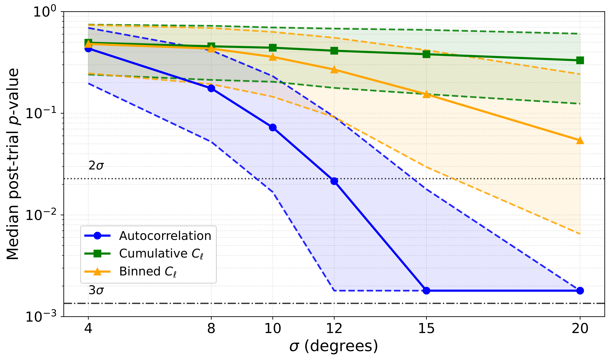
图注：Comparison between the autocorrelation function and power spectrum for a Gaussian source (Eq.~\ref{eq:gauss_source}) with varying $\sigma$. The shaded bands denote the range around the median: from the 25th to the 75th percentile.
对应解读：建议重点查看的图表1、3、4；关键图表逐图导读中关于方法灵敏度、自相关函数与角功率谱对中小尺度结构响应的讨论。
入选理由：候选图中唯一明确同时比较自相关函数和角功率谱的图，并且给出高斯源模型随角尺度参数变化的结果；最直接支撑日报中“自相关函数在多数中小尺度模型下更敏感、角功率谱提供尺度信息”的核心结论。
来源与置信度：\(arxiv_source\)；high；\(arxiv_source\) / main.tex:figure[7]
Fig09
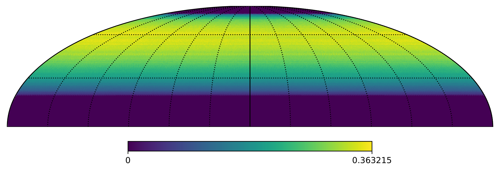
图注：Relative exposure map obtained using the time-scrambling method for protons with energy $\lg(E/\text{eV}) > 15.15$.
对应解读：建议重点查看的图表2；关键图表逐图导读图1关于曝光或天空覆盖、时间 scrambling 背景构造的讨论。
入选理由：该图给出 KASCADE 数据中用 time-scrambling 方法得到的相对曝光图，是判断有限视场和非均匀曝光是否被正确纳入各向同性对照的关键图，比单纯模拟强度图更直接对应真实数据背景。
来源与置信度：\(arxiv_source\)；high；\(arxiv_source\) / main.tex:figure[9]
Fig08
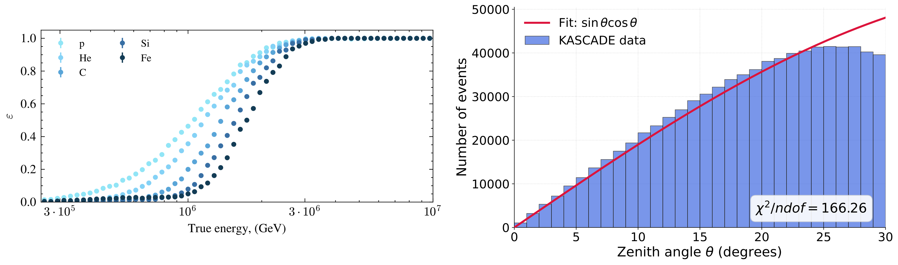
图注：\(\textbf{Left panel:}\) Detection efficiency (after quality cuts) as a function of energy for different types of primary particles. Monte Carlo simulations based on the QGSJet-II.04 hadronic interaction model are used. \(\textbf{Right panel:}\) Zenith angle distribution for the all-particle ``unblind'' set at energies $\lg (E/\text{eV}) > 15.15$.
对应解读：建议重点查看的图表2、5、6；模型拟合段落中关于选择函数、能量阈值、质量组效率和天顶角接受度的系统误差讨论。
入选理由：左图展示不同初级粒子的探测效率随能量变化，右图展示真实样本的天顶角分布；它直接关系到质量组比较和能量阈值扫描是否受选择效应影响，是解释 KASCADE 结果系统误差的重要辅助图。
来源与置信度：\(arxiv_source\)；high；\(arxiv_source\) / main.tex:figure[8]
Fig11
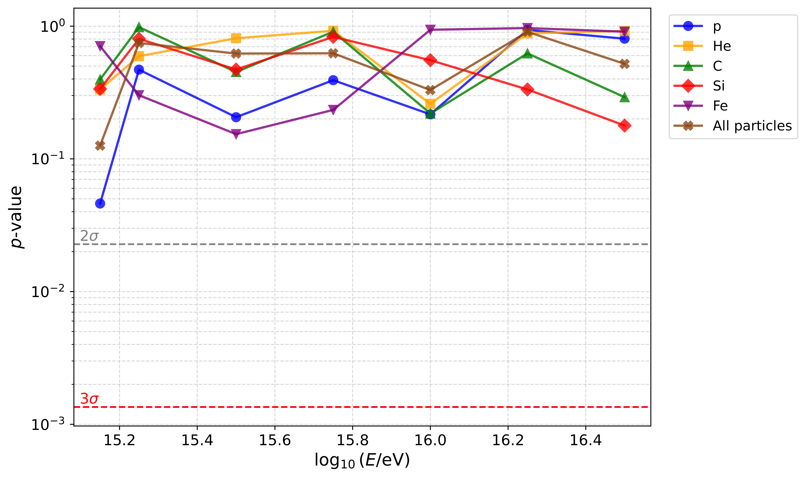
图注：$p$-values of dipole in sidereal time obtained with the East-West method for different primary particle types and energy intervals.
对应解读：建议重点查看的图表5、6；模型拟合段落中关于赤经谐波/偶极方法在不同质量组和能段上的显著性比较。
入选理由：该图给出不同粒子类型和能量区间的 sidereal-time 偶极 p 值，能帮助读者检查质量组与能量依赖是否只出现在特定切分中；虽然不是日报最强调的自相关或角功率谱结果，但对排查全样本系统误差和成分依赖很有价值。
来源与置信度：\(arxiv_source\)；high；\(arxiv_source\) / main.tex:figure[11]
Fig12
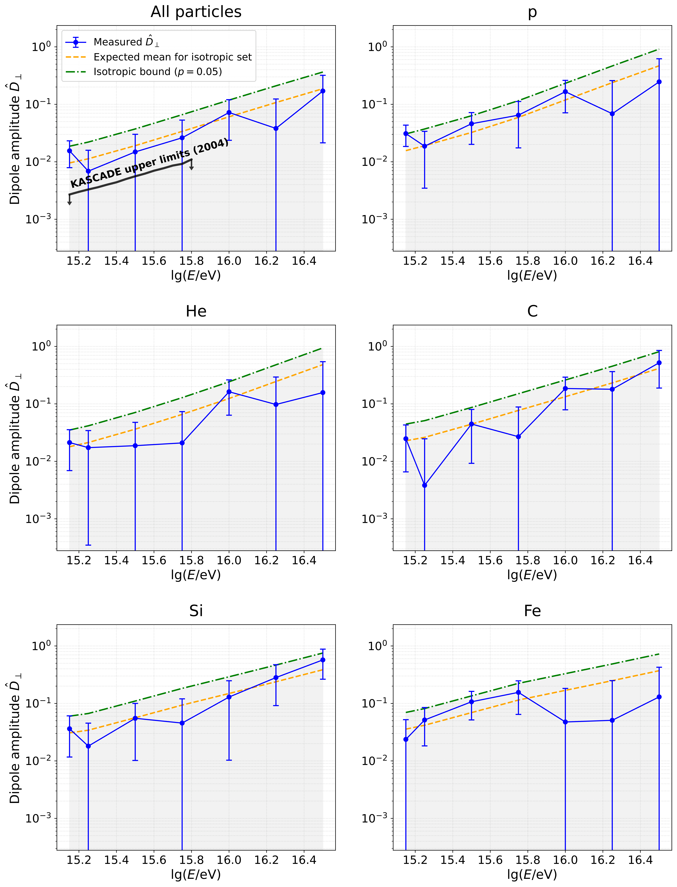
图注：Values of the transverse dipole component derived from the sidereal-time are shown for different primary particle types and energy intervals. The shaded region indicates amplitudes below the dipole amplitude threshold corresponding to a sidereal-time $p$-value of ($p_{sid}=0.05$) under the isotropic hypothesis. For the all-particles sample, the results are compared with the KASCADE upper limits reported in Ref.~\(\cite{Antoni_2004}.\)
对应解读：模型拟合段落中关于赤经方法拟合横向偶极分量、与既有 KASCADE 上限比较的说明。
入选理由：该图展示不同质量组和能段的横向偶极分量，并标出各向同性假设下的阈值及既有 KASCADE 上限，可作为传统赤经偶极方法的基线对照，说明为什么仅靠一维偶极不足以刻画中小尺度各向异性。
来源与置信度：\(arxiv_source\)；high；\(arxiv_source\) / main.tex:figure[12]
Fig02
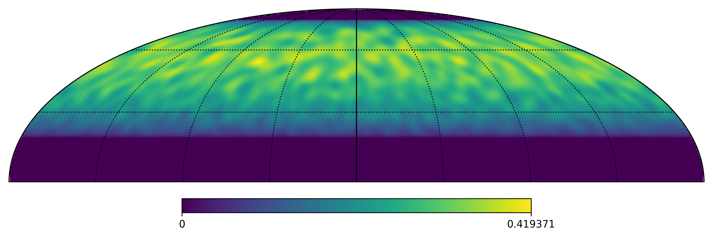
图注：The example of the intensity map with a power spectrum following Eq.~\(\eqref{eq:gauss}\) ($\sigma = 10, l_0 = 30$) and taking into account the detector exposure.
对应解读：关键图表逐图导读图1、图2；关于注入各向异性模型经过 detector exposure 后如何进入灵敏度测试的说明。
入选理由：该图展示带有指定功率谱参数的模拟强度图并纳入探测器曝光，适合说明物理注入的天空结构与实验窗口卷积后的观测图像之间的区别，是理解后续方法灵敏度测试的背景图。
来源与置信度：\(arxiv_source\)；high；\(arxiv_source\) / main.tex:figure[2]
强相关工作
同类研究包括 IceCube、HAWC、Tibet AS\(\gamma\)、ARGO-YBJ 和 Pierre Auger 对宇宙线各向异性的测量。低能到 \(\mathrm{TeV}\) 区域已经确立存在大尺度和中小尺度结构，但到 \(\mathrm{PeV}\) 以上结果更稀疏，且成分分辨能力有限。本文与这些工作的关系是方法互补：它不是单纯给出一个新天空图，而是评估有限视场下哪些统计量更适合发现中小尺度偏离。检索关键词可用 “cosmic ray anisotropy angular power spectrum autocorrelation KASCADE PeV composition”。
基础理论方面，应把本文放在银河宇宙线扩散理论、局域源模型和磁场散射模型的背景下阅读。经典扩散理论预期各向异性幅度与 \(D\nabla n/n\) 有关，但实测幅度、相位和能量依赖长期存在张力。相反观点或谨慎解释主要集中在系统误差和统计试验因子：弱显著性中小尺度结构可能来自曝光建模、时间变化、质量误分或多重扫描。检索关键词可用 “cosmic ray anisotropy problem diffusion local source magnetic turbulence”和 “KASCADE public data mass composition CNN”。
同一事件 / 同类源线索：
相似工作：
基础理论 / 方法工作：
相反观点 / 张力线索：
说明
评分由 LLM 给出初评，再由本地阈值策略过滤；IACT、TeV 伽马射线和高能中微子天文学按重点方向处理。